Español (predeterminado) e inglés. En este manual los nombres de botones, pestañas y menús se escriben tal como aparecen en la interfaz en español, por ejemplo Cargar datos de ejemplo.
Cómo citar el programa
Barrera-Guzmán, L. Á., y Ramírez-Ojeda, G. (2026). SciMetricsPro: análisis bibliométrico y cienciométrico (versión 1.0.1) [Software]. https://doi.org/10.5281/zenodo.22879993
Cómo citar este manual
Barrera-Guzmán, L. Á., y Ramírez-Ojeda, G. (2026). SciMetricsPro. Manual de usuario (1.ª ed.). Distribuido con SciMetricsPro, versión 1.0.1. https://doi.org/10.5281/zenodo.22879993
El DOI de concepto siempre lleva a la versión más reciente. Código fuente: github.com/luisangelbg/SciMetricsPro
La página Acerca de de la app muestra la misma cita en texto y en formato BibTeX, con un botón para copiarla.
iPrivacidad
SciMetricsPro funciona por completo dentro de tu navegador. Los archivos que importas se leen y se analizan en tu computadora y nunca se envían a ningún servidor. Lo único que sale a internet son las búsquedas que tú decidas hacer en el catálogo bibliográfico abierto desde la pantalla Importar. Puedes trabajar con exportaciones de bases con suscripción, con decisiones de cribado de una revisión en curso o con datos de una tesis sin que salgan de tu equipo.
Las ilustraciones, los diagramas y las capturas de pantalla de este manual son originales y se generaron con el propio programa o con código escrito para el manual. Los datos de ejemplo, descritos en la sección 1.7, son metadatos reales de 300 obras de un catálogo bibliográfico abierto, publicados con licencia de dominio público (CC0 1.0) y consultados el 16 de septiembre de 2026; no incluyen resúmenes.
El manual sigue el mismo orden que la barra lateral de la app: primero los datos, luego los análisis descriptivos, las estructuras, la revisión sistemática y, al final, los resultados. Cada capítulo explica un módulo, empieza con la teoría que hace falta para leer sus resultados, describe cada pestaña y la recorre con los datos de ejemplo que vienen dentro del programa.
Un color para cada capítulo
El color del capítulo aparece en su apertura, en los números de sección, en los recuadros de teoría, en la pestaña del borde de la hoja y en el índice. Así sabes de un vistazo en qué parte de la app estás.
Capítulo
Nombre en la app
Qué hace
2
Inicio
Portada, datos de ejemplo, proyecto, idioma, recorrido guiado y Acerca de
3
Importar
Palabras clave para la búsqueda, carga de archivos de varias bases y búsqueda en el catálogo abierto
4
Limpieza y filtros
Duplicados, variantes de autores, instituciones y países, sinónimos y filtros
5
Panorama general
Información principal de la colección, producción anual y citas
6
Fuentes
Revistas más productivas, ley de Bradford e impacto por fuente
7
Autores
Productividad, ley de Lotka, impacto, instituciones y países
8
Documentos
Documentos y referencias más citados, RPYS, palabras y temas en tendencia
9
Conceptual
Red de coocurrencia, mapa temático, evolución temática y análisis factorial
10
Intelectual
Cocitación, acoplamiento bibliográfico e historiografía
11
Social
Redes de colaboración entre autores, instituciones y países
12
PRISMA
Cribado de documentos y diagrama de flujo PRISMA 2020
13
Exportar y reporte
Figuras, tablas, redes, paquete ZIP e informe con texto metodológico
Tipos de recuadros
iNota
Aclaraciones y consejos prácticos que ahorran tiempo.
!Importante
Lo que puede cambiar tus conclusiones si se pasa por alto.
θTeoría en breve
La idea detrás de un indicador o de una red, con la fórmula justa.
▸Ejemplo
Un caso completo con los datos de ejemplo incluidos en el programa.
✓Regla de decisión
Si tus datos o tus resultados se ven así…
entonces esto es lo que conviene hacer o leer.
Son guías para decidir, no leyes: la pregunta de tu investigación y la cobertura de tu búsqueda siempre mandan.
300 dpi
Dato clave
Una cifra o hecho que conviene recordar; por ejemplo, la resolución con la que se descargan las figuras si no eliges otra.
Convenciones de escritura
Así se escribe
Significa
Cargar datos de ejemplo
Un botón, pestaña, casilla o menú de la app, con su texto tal como aparece en pantalla.
Fuentes›Ley de Bradford
Una ruta: abre el primer elemento y luego el segundo.
data/example.js
Un nombre de archivo, carpeta, campo o valor que se escribe tal cual.
h, g, m, β, Q
Indicadores y estadísticos; su significado se explica la primera vez que aparecen y sus fórmulas están en el apéndice B.
Bradford (1934)
Una referencia al artículo original del método; la referencia completa está en el apéndice B.
índice de citas multidisciplinario
Las bases de datos se nombran por su tipo. La pantalla Importar de la app muestra sus nombres para que reconozcas cada exportación.
●◐—
Disponible · disponible en parte o con condiciones · no aplica.
1
Capítulo uno
Introducción a SciMetricsPro
Qué es el programa, qué preguntas responde, qué bases de datos y formatos acepta y cómo se recorre de principio a fin. Incluye las ideas básicas de la bibliometría que necesitas para leer indicadores, leyes y redes en el resto del manual.
1.1¿Qué es SciMetricsPro?
1.2Preguntas que responde
1.3Cinco ideas clave
1.4Bases de datos y formatos
1.5Qué necesitas y cómo abrirlo
1.6Recorrido por la interfaz
1.7Los datos de ejemplo
1.8Flujo de trabajo recomendado
1.9Indicadores, leyes y redes
1.1¿Qué es SciMetricsPro?
SciMetricsPro es una plataforma de análisis bibliométrico y cienciométrico que lleva de la búsqueda bibliográfica al artículo: ayuda a escribir la cadena de búsqueda, reúne las exportaciones de varias bases de datos, quita duplicados y unifica nombres, calcula los indicadores de producción e impacto, dibuja las redes de palabras, citas y colaboración, registra el cribado de una revisión sistemática con su diagrama PRISMA 2020 y entrega figuras, tablas y un informe con el texto metodológico listo para adaptar.
Todo ocurre dentro del navegador de internet. No hay que instalar nada, no se necesita saber programar y los datos no salen de la computadora. Los mismos pasos sirven para una revisión de la literatura de una tesis, un artículo bibliométrico sobre un cultivo, un diagnóstico de la producción científica de un grupo de trabajo o un estado del arte para un proyecto: la ruta es la misma porque los registros bibliográficos tienen la misma estructura, vengan de donde vengan.
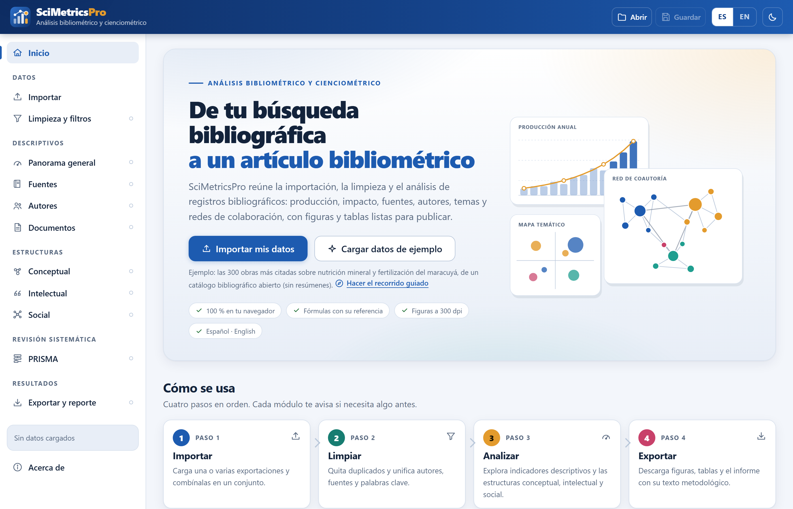
12345678
Figura 1.1. Portada de la app (Inicio), antes de cargar datos.
1Barra lateral con los once módulos en cinco grupos: Datos, Descriptivos, Estructuras, Revisión sistemática y Resultados.
2El punto gris junto a un módulo indica que necesita datos importados; desaparece al cargarlos.
3Estado de los datos: cuántos registros y de cuántos archivos. Debajo, Acerca de.
4Abrir y Guardar un proyecto completo (capítulo 2).
5Idioma de la interfaz (ES · EN) y cambio entre modo claro y oscuro.
6Importar mis datos lleva a la pantalla Importar.
7Cargar datos de ejemplo carga las 300 obras del ejemplo y abre el Panorama general.
8Hacer el recorrido guiado: siete pasos por las partes de la app.
0
Instalaciones
Se abre con doble clic en index.html. No requiere permisos de administrador ni conexión a internet.
11
Módulos
De la cadena de búsqueda al informe, pasando por limpieza, indicadores, redes y revisión sistemática.
Qué hace, en una tabla
Etapa
Lo que obtienes
Capítulo
Búsqueda
A partir de un título tentativo o una idea, los conceptos con sus términos en inglés y la cadena de búsqueda escrita con la sintaxis de cada buscador, lista para copiar y pegar.
3
Importación
Lectura de varias exportaciones a la vez, de bases distintas y en formatos distintos (CSV, texto etiquetado, RIS, BibTeX y hojas de cálculo); búsqueda directa en un catálogo bibliográfico abierto; tabla de campos disponibles y avisos de lo que falta.
3
Limpieza
Duplicados entre bases unidos con el campo más completo de cada uno, variantes de autores, instituciones y países, sinónimos y palabras vacías, filtros por año, tipo, idioma, fuente, área y citas.
4
Descripción
Información principal de la colección, producción anual, citas por año, fuentes y zonas de Bradford, autores y ley de Lotka, índices h, g y m, instituciones, países, documentos y referencias más citados, citas locales, RPYS, palabras y temas en tendencia.
5678
Estructuras
Red de coocurrencia de palabras, mapa y evolución temática, análisis factorial, cocitación, acoplamiento bibliográfico, historiografía y redes y mapa mundial de colaboración.
91011
Revisión sistemática
Cribado documento por documento con atajos de teclado, motivos de exclusión editables y diagrama de flujo PRISMA 2020; los análisis pueden usar solo los documentos incluidos.
12
Publicación
Figuras editables a 8.5 o 17 cm y 300, 600 o 1200 dpi, en PNG, TIFF, SVG o PDF; tablas en hoja de cálculo; redes para otros programas; paquete ZIP e informe en documento de texto con la metodología redactada con tus datos.
13
¿Para quién es?
Para quien necesita conocer a fondo la literatura de un tema y mostrarlo con números: estudiantes de posgrado que preparan el marco teórico o el estado del arte de su tesis, investigadores que escriben un artículo bibliométrico o una revisión sistemática, grupos que quieren saber dónde y con quién publican, bibliotecarios que apoyan evaluaciones y docentes de metodología de la investigación. Cada indicador y cada figura tiene un botón de ayuda con su definición, su fórmula, cómo interpretarlo y la referencia original, lo que convierte a la app también en una herramienta de enseñanza.
1.2Preguntas que responde
Un buen análisis empieza con una pregunta. La tabla siguiente traduce las preguntas más frecuentes de un estudio bibliométrico al análisis que las responde y al capítulo donde se explica.
Tabla 1.1. De la pregunta al análisis.
Pregunta
Análisis que la responde
Capítulo
¿Qué palabras escribo en cada buscador para encontrar lo que busco?
Conceptos del título tentativo con sus términos en inglés y cadena de búsqueda con la sintaxis de cada buscador.
3
Tengo resultados de tres bases. ¿Cuántos documentos distintos son?
Duplicados por DOI y por títulos muy parecidos, con el mismo año y un primer autor compatible; conjunto unido y limpio.
4
¿Crece la investigación sobre mi tema? ¿Desde cuándo?
Producción científica anual, tasa de crecimiento anual compuesta y citas promedio por año.
5
¿En qué revistas conviene buscar y publicar?
Fuentes más productivas, núcleo de Bradford e impacto de cada fuente (h, g, m y citas).
6
¿Quiénes son los autores de referencia? ¿De qué países e instituciones?
Autores más productivos y más citados, ley de Lotka, instituciones, países y mapa de producción.
7
¿Cuáles son las obras clásicas que todos citan?
Documentos más citados, citas locales dentro del conjunto, referencias más citadas y picos de la RPYS.
8
¿De qué temas se habla y cuáles están creciendo?
Palabras más frecuentes, temas en tendencia, red de coocurrencia, mapa temático y evolución temática.
89
¿Qué escuelas de pensamiento hay y cómo se conectan?
Cocitación de referencias, autores y fuentes; acoplamiento bibliográfico e historiografía de citas.
10
¿Quién colabora con quién? ¿Qué tan internacional es el tema?
Redes de coautoría entre autores, instituciones y países, mapa mundial de colaboración y cronología.
11
¿Cómo documento la selección de estudios de mi revisión?
Cribado con motivos de exclusión y diagrama de flujo PRISMA 2020.
12
¿Cómo presento todo esto en el artículo?
Figuras a tamaño de revista, tablas, paquete ZIP e informe con el texto metodológico.
13
1.3Cinco ideas clave de la bibliometría
Toda la app descansa en cinco ideas. Si las tienes claras, cada capítulo se explica solo.
Figura 1.2. Un registro bibliográfico y las unidades de análisis que salen de sus campos. Cada módulo cuenta, relaciona o mide una o varias de estas unidades; si un campo falta en la exportación, los análisis que dependen de él no se pueden hacer (tabla 1.3).
1El registro bibliográfico es el dato
Cada documento encontrado en una base de datos llega como un registro: título, autores con sus afiliaciones, año, fuente, palabras clave, resumen, referencias citadas, número de citas y DOI, entre otros campos. SciMetricsPro lleva los registros de todas las bases a un mismo modelo, así que un artículo exportado de un índice de citas y otro exportado de un catálogo abierto se analizan juntos. Lo que no está en el registro no se puede analizar: por eso la pantalla Importar muestra, archivo por archivo, qué porcentaje de registros trae cada campo.
2Unidades de análisis y formas de contar
De los registros salen varias unidades: documentos, fuentes, autores, instituciones, países, palabras y referencias (figura 1.2). Cada una se puede contar de dos maneras. En el conteo completo, un artículo con cuatro autores suma un documento a cada uno; en el conteo fraccionado, suma un cuarto a cada uno, y la suma de todos los autores vuelve a dar el número de documentos. El primero mide participación; el segundo, contribución. La app indica cuál usa cada tabla y, donde tiene sentido, te deja elegir.
3Producción, impacto y tiempo
La producción cuenta documentos; el impacto cuenta las citas que esos documentos recibieron. Las citas dependen de la base que las cuenta, de la fecha de la exportación y de la edad del documento: un artículo de 2010 lleva dieciséis años acumulando citas y uno de 2024, apenas dos. Por eso la app ofrece citas por año citable, citas normalizadas por el promedio de su año y un año de referencia común para todos los cálculos que dependen del tiempo. Índices como el h (Hirsch, 2005) resumen producción e impacto en una sola cifra: una fuente o un autor tiene índice h si h de sus documentos tienen al menos h citas cada uno.
4Las leyes clásicas: concentración y dispersión
La literatura científica está muy concentrada. La ley de Bradford (1934) dice que, al ordenar las fuentes de la más a la menos productiva y partir los documentos en tres tercios, el primer tercio sale de un núcleo pequeño de fuentes y cada tercio siguiente necesita multiplicar el número de fuentes por un factor casi constante. La ley de Lotka (1926) describe lo mismo para las personas: la proporción de autores con x documentos cae como 1/xβ, con β cercano a 2, así que la mayoría publica una sola vez y muy pocos publican mucho. Las dos leyes ayudan a decidir dónde buscar y a reconocer a los autores centrales.
5Relaciones que forman estructuras
Más allá de contar, la bibliometría relaciona. Dos palabras se relacionan si aparecen en el mismo documento (coocurrencia; Callon et al., 1991): con ellas se ve la estructura conceptual, es decir, de qué temas se habla. Dos referencias se relacionan si un mismo documento las cita juntas (cocitación; Small, 1973), y dos documentos se relacionan si citan obras en común (acoplamiento bibliográfico; Kessler, 1963): con ellas se ve la estructura intelectual, las bases sobre las que se construye un campo. Dos autores, instituciones o países se relacionan si firman juntos: con ellos se ve la estructura social. La figura 1.3 resume las tres.
Figura 1.3. Tres formas de relacionar los registros y la estructura que revela cada una. Las redes de los capítulos 9, 10 y 11 se construyen repitiendo estas uniones en todos los documentos del conjunto.
!Importante · los números dependen de la búsqueda
Un estudio bibliométrico describe el conjunto de documentos que encontraste, no toda la ciencia sobre el tema. La cadena de búsqueda, las bases consultadas, su cobertura de revistas e idiomas, la fecha de la exportación y las decisiones de limpieza cambian los resultados. Anota siempre la cadena, la base y la fecha de cada exportación: el informe del capítulo 13 las pide para redactar la metodología, y sin ellas otra persona no puede repetir tu estudio. Las citas miden atención recibida, no calidad; úsalas para describir, no para juzgar trabajos.
1.4Bases de datos y formatos que acepta
SciMetricsPro reconoce el formato de cada archivo de texto por su contenido, no por su extensión (las hojas de cálculo, por su extensión), y lo lleva al modelo común. Puedes cargar varios archivos a la vez aunque vengan de bases distintas: los registros repetidos se unen en Limpieza y filtros. La tabla 1.2 resume qué acepta; el capítulo 3 explica qué opciones marcar al exportar de cada base y el apéndice A describe cada formato.
Tabla 1.2. Tipos de bases de datos y formatos que lee la app.
Tipo de base
Formatos
Qué suele traer
Índices de citas multidisciplinarios
CSV con todos los campos y referencias; texto etiquetado de dos letras o delimitado por tabuladores con el registro completo y las referencias citadas; RIS; BibTeX.
Resúmenes, afiliaciones, palabras clave de autor y de índice, referencias citadas y número de citas.
Índice biomédico público
Texto etiquetado de cuatro caracteres (.txt o .nbib). Su CSV resumido trae solo campos básicos.
Resúmenes, afiliaciones, palabras clave de autor y descriptores del índice; no trae referencias citadas ni número de citas.
Catálogo bibliográfico abierto
Búsqueda desde la pestaña correspondiente de Importar; no hace falta exportar archivos.
Afiliaciones y países, palabras de índice, número de citas y referencias como identificadores del catálogo.
Otros buscadores y gestores de referencias
RIS o BibTeX de cualquier origen; tablas CSV, delimitadas por tabuladores o en hoja de cálculo (.xlsx, .xls, .ods) con encabezados reconocibles (título, autores, año, DOI…).
Depende del origen; la app indica qué campos encontró.
Proyecto de SciMetricsPro
Archivo .smp.json guardado con el botón Guardar.
Todo el trabajo: registros, limpieza, decisiones, parámetros y ajustes de figuras.
Cada análisis necesita ciertos campos. La tabla 1.3 dice qué se pierde cuando falta uno; la pantalla Importar avisa de lo mismo en cuanto lees el archivo, antes de que avances.
Tabla 1.3. Qué análisis dependen de cada campo.
Si falta…
no podrás hacer, o harás con menos información…
Capítulos
Referencias citadas
Citas locales, referencias más citadas, RPYS, cocitación, acoplamiento bibliográfico, mapa de acoplamiento e historiografía.
810
Palabras clave
La estructura conceptual tendrá que usar pares de palabras de los títulos o de los resúmenes.
89
Afiliaciones
Instituciones, países, mapa de producción y colaboración entre instituciones y países.
711
Número de citas
Indicadores de impacto: citas por documento y por año, índices h, g y m, documentos más citados y mapa de acoplamiento por impacto global.
5678
Año
Producción anual, crecimiento, edad, índice m, evolución temática, temas en tendencia e historiografía para ese registro.
589
DOI
La detección de duplicados dependerá solo de títulos, años y autores, y será menos precisa.
4
Resumen
El análisis de texto usará títulos y palabras clave; el cribado de PRISMA mostrará solo el título.
912
✓Regla de decisión · qué hacer cuando un campo falta
Si tus registros…
entonces…
no traen referencias citadas
vuelve a exportar con la opción que incluye las referencias o combina con una exportación de un índice de citas que sí las traiga; los duplicados se unen en Limpieza.
no traen palabras clave de autor
la app elige sola el primer campo que sí traen (palabras clave de índice o pares de palabras de los títulos) y te avisa; puedes cambiarlo en Limpieza y filtros.
vienen de bases que cuentan citas distinto
al unirlos se conserva el mayor número de citas de cada documento; menciónalo en la metodología.
incluyen el año en curso
recuerda que ese año está incompleto: fíltralo antes de leer la tasa de crecimiento y las tendencias.
Si un análisis no aparece o sale vacío, la app te dice qué campo le falta. El apéndice D reúne esos mensajes.
1.5Qué necesitas y cómo abrir el programa
Requisitos
Una computadora de escritorio o portátil con un navegador de internet moderno y actualizado.
Pantalla de al menos 1280 píxeles de ancho. Por debajo de 900 píxeles la barra lateral se vuelve un menú, pero las redes y las tablas se aprovechan mejor en una pantalla grande.
La app se probó con 10,000 registros y más de 200,000 referencias; los cálculos largos corren en segundo plano con una barra de progreso y un botón para cancelar.
No se necesita instalación ni permisos de administrador. Internet solo hace falta para buscar en el catálogo bibliográfico abierto.
Contenido de la carpeta
index.html
La app. Ábrela con doble clic.
Open SciMetricsPro.bat
Arranque opcional con servidor local.
js/, css/, img/
El código y el logotipo del programa.
data/
Los datos de ejemplo y el mapa mundial.
vendor/
Componente de terceros y sus avisos de licencia.
LICENSE
Texto de la licencia GPL.
manual/
Este manual.
Abrir SciMetricsPro en tres pasos
Copia la carpetaSciMetricsPro completa a tu computadora, por ejemplo a Documentos. No separes index.html del resto de las carpetas.
Haz doble clic enindex.html. Se abrirá en tu navegador predeterminado con la portada. La primera vez empieza solo el recorrido guiado; puedes seguirlo u omitirlo.
PulsaCargar datos de ejemplo para practicar, o Importar mis datos para cargar tus exportaciones.
iNota · abrir con servidor local
Con doble clic todo funciona. Si prefieres abrir la app desde una dirección, usa Open SciMetricsPro.bat: inicia un pequeño servidor en tu propia computadora (dirección http://localhost:9100) y abre la app en el navegador. Sigue sin enviarse nada a internet. Si lo ejecutas como administrador, también puedes abrir la app desde un celular o una tableta conectados a la misma red inalámbrica.
iNota · tu trabajo se recuerda
La app guarda sola una copia de tu sesión en el navegador (datos, limpieza, decisiones y parámetros) y, al volver a abrirla, te pregunta si quieres recuperarla. Esa copia vive en el navegador y la computadora donde trabajaste: para llevar tu trabajo a otro equipo o compartirlo, guárdalo como proyecto con el botón Guardar del encabezado. Tus archivos originales no se modifican nunca. El capítulo 2 lo explica con detalle.
1.6Recorrido por la interfaz
Todos los módulos de análisis comparten la misma organización, así que basta aprenderla una vez. De arriba abajo, cada pantalla tiene un encabezado con la ruta y el nombre del módulo, tarjetas con los indicadores principales, pestañas con los análisis y, dentro de cada pestaña, figuras y tablas con sus controles.
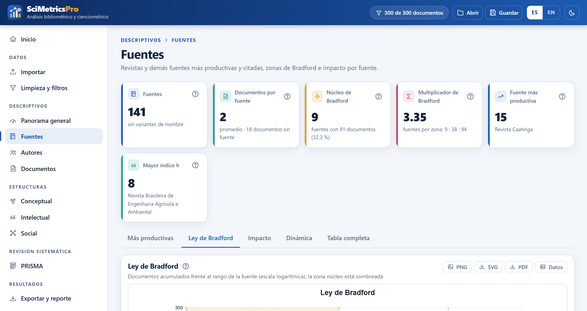
1234567
Figura 1.4. La pantalla Fuentes con los datos de ejemplo y la pestaña Ley de Bradford abierta.
1El módulo abierto aparece resaltado en la barra lateral.
2Contador de documentos: cuántos usan los análisis de los importados. Con filtros se resalta; un clic lleva a los filtros.
3Ruta (grupo › módulo), nombre y descripción del módulo.
4Tarjetas de indicadores; el botón ? abre su ayuda (figura 1.6).
5Pestañas del módulo. También se recorren con las flechas del teclado.
6Título de la figura con su propia ayuda.
7Descargas rápidas: PNG, SVG, PDF y Datos de la figura en hoja de cálculo.
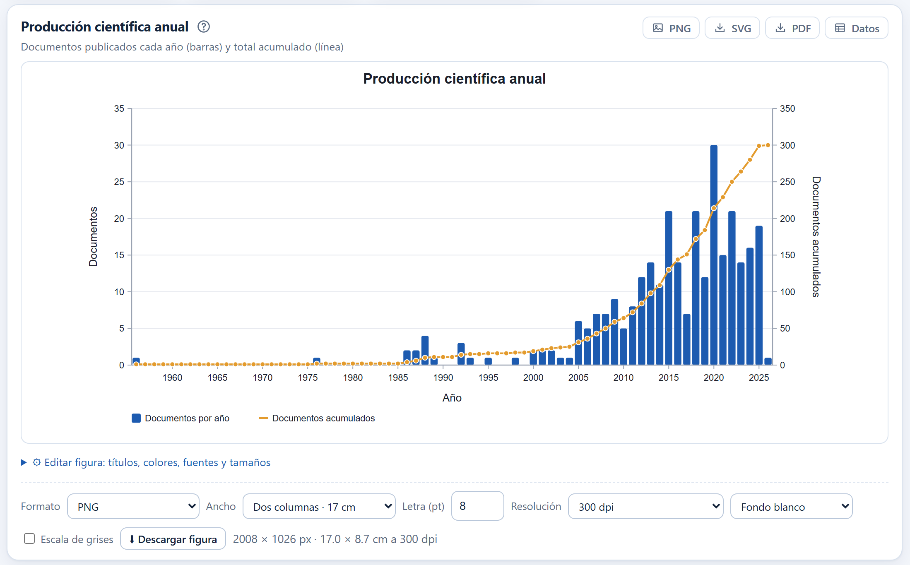
12345
Figura 1.5. La figura Producción científica anual del Panorama general con sus controles.
1Título, botón de ayuda y subtítulo que dice qué se dibuja.
2Descargas rápidas con los ajustes elegidos abajo.
3Editar figura: títulos, colores, fuentes y tamaños abre el editor.
4Formato, ancho de impresión, tamaño de letra en puntos, resolución y fondo.
5Escala de grises, Descargar figura y el tamaño resultante en píxeles y centímetros.
Las tablas funcionan igual en toda la app: se ordenan con un clic en el encabezado, tienen un cuadro Buscar…, se dividen en páginas y se descargan en hoja de cálculo (.xlsx) o en CSV. Las redes, además, se exploran con el ratón: la rueda acerca, arrastrar mueve el dibujo, un clic en un nodo resalta a sus vecinos y abre su ficha, y el cuadro de búsqueda encuentra un término.
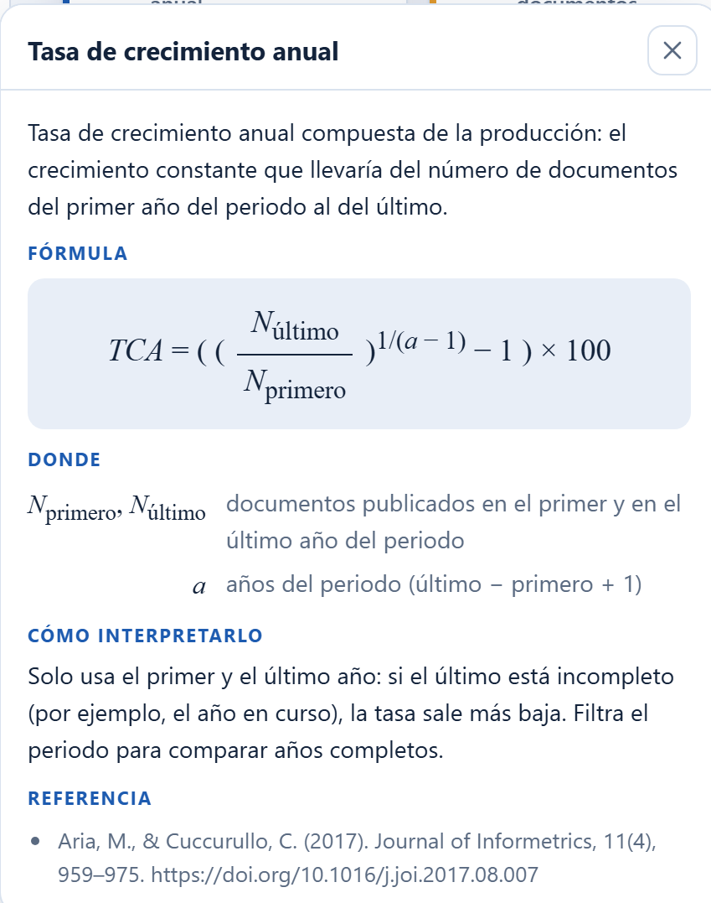
Figura 1.6. La ayuda (?) de la tarjeta Tasa de crecimiento anual.
La ayuda de cada indicador
Cada tarjeta, figura y tabla tiene un botón ?. Su ventana trae cuatro partes:
Definición: qué mide, en una o dos frases.
Fórmula y Donde: la ecuación y el significado de cada símbolo.
Cómo interpretarlo: qué valores esperar y cuándo desconfiar.
Referencia: el artículo original del método.
Se cierra con la ×, con la tecla Esc o con un clic fuera de ella. Las fórmulas de todos los indicadores están reunidas también en el apéndice B.
Elementos que verás en todos los módulos
Tabla 1.4. Controles comunes de la interfaz.
En la app
Para qué sirve
300 de 300 documentos
Contador del encabezado: documentos que usan los análisis después de limpieza y filtros, de todos los importados.
Año de referencia
Año contra el que se calculan edades, citas por año e índice m; por omisión, el año en curso.
Parámetros de la red
Panel lateral de las redes: selección de nodos, pesos de las aristas, comunidades y presentación.
Calculando la red
Ventana de progreso de un cálculo largo, con Cancelar.
Editar figura…
Títulos, ejes, colores, paleta, tamaños, leyenda y etiquetas de la figura.
Datos
Descarga los números con los que se dibujó la figura, en hoja de cálculo.
Abrir · Guardar
Proyecto completo en un archivo .smp.json.
ES · EN
Idioma de la interfaz y de las figuras; no se pierde nada al cambiarlo.
iNota · una decisión de Limpieza vale para toda la app
La limpieza y los filtros no son un paso aparte que se olvida: todos los módulos leen el mismo conjunto limpio. Si unes dos variantes de un autor, quitas un año con un filtro o cambias el campo de términos, el Panorama, las Fuentes, las redes y el informe se recalculan con ese cambio. El contador del encabezado te recuerda siempre cuántos documentos entran en los análisis.
1.7Los datos de ejemplo
El programa incluye un conjunto de datos listo para usar: las 300 obras más citadas sobre nutrición mineral y fertilización del maracuyá (Passiflora edulis) en un catálogo bibliográfico abierto. La búsqueda, hecha el 16 de septiembre de 2026, pidió el cultivo en el título y términos de fertilización o nutrición de la planta en el título o el resumen; encontró 501 obras y se conservaron las 300 más citadas. Son metadatos reales con licencia de dominio público: títulos, autores con afiliaciones y países, fuentes, palabras de índice, referencias y número de citas. No incluyen resúmenes. Están en data/example.js y se cargan con el botón Cargar datos de ejemplo de la portada.
Abre la portada con Inicio en la barra lateral.
PulsaCargar datos de ejemplo. Si ya tenías datos, la app pide confirmación porque el ejemplo los reemplaza.
Lee el Panorama general, que se abre solo. El contador del encabezado dice 300 de 300 documentos y la barra lateral, 300 registros de 1 archivo.
Tabla 1.5. Los datos de ejemplo en cifras, según la Información principal del Panorama general (año de referencia 2026).
Indicador
Valor
Lectura
Periodo
1956–2026
71 años; 283 de las 300 obras son de 2000 en adelante y el año con más obras es 2020, con 30.
Documentos
300
282 artículos; el resto, actas de congresos, tesis, capítulos y una revisión.
Fuentes
141
Revistas, libros y actas; 18 obras no traen fuente.
Autores
932
1,551 apariciones en total; 11 documentos tienen un solo autor.
Coautores por documento
5.17
Casi todo el trabajo sobre el tema es en equipo.
Citas promedio por documento
9.93
2,978 citas en total.
Edad promedio
10.98 años
Respecto de 2026.
Coautoría internacional
8.67 %
26 documentos con autores de más de un país; el país se reconoció en 236.
Referencias citadas
6,141
4,546 obras distintas, en 236 documentos.
▸El ejemplo guía
El maracuyá acompaña todo el manual. Con él verás, en los capítulos que siguen, que la literatura sobre su nutrición se publica sobre todo en revistas brasileñas (en la figura 1.4, el núcleo de Bradford son 9 fuentes que reúnen 91 documentos), que el trabajo en equipo es la norma, qué temas forman el núcleo del campo y cómo documentar un cribado PRISMA sobre estas mismas obras. Todas las cifras de este capítulo se comprobaron con un cálculo independiente sobre el archivo de datos, fuera de la app.
!Importante · un ejemplo para practicar, no una revisión completa
El ejemplo reúne las obras más citadas de una sola base, así que exagera el peso de los documentos antiguos y muy citados y deja fuera los recientes que aún no acumulan citas. Tampoco trae palabras clave de autor ni resúmenes, y sus referencias son identificadores del catálogo, sin autor ni año: por eso, al cargarlo la app elige sola Palabras clave de índice como campo de términos, y la RPYS queda vacía. Para un estudio real, combina exportaciones de varias bases con todos sus campos.
1.8Flujo de trabajo recomendado
La barra lateral marca el orden natural. El diagrama resume el recorrido, desde la idea de investigación hasta el informe, con el desvío de la revisión sistemática y el proyecto que guarda todo en cualquier momento.
Figura 1.7. Recorrido por la app. La fila superior prepara los datos; la inferior los analiza y los publica. El desvío de PRISMA se usa en las revisiones sistemáticas, y la línea punteada recuerda que los temas encontrados a menudo sugieren términos para afinar la búsqueda.
Prepara la búsqueda en Importar›Palabras clave: escribe tu título tentativo, revisa los conceptos y copia la cadena de cada buscador. Anota la cadena y la fecha.
Busca y exporta en cada base con todos los campos y las referencias citadas. Del catálogo abierto puedes descargar directamente desde la app.
Importa todos los archivos juntos y lee la tabla de campos disponibles y los avisos: te dicen qué análisis podrás hacer.
Limpia: revisa los duplicados, une variantes de autores e instituciones, agrega sinónimos, elige el campo de términos y aplica los filtros de tu diseño (años, tipos de documento, idiomas).
Si es una revisión sistemática, criba en PRISMA y activa Analizar solo los incluidos.
Analiza de lo general a lo particular: Panorama, Fuentes, Autores y Documentos; después, las tres estructuras. Lee siempre la ayuda (?) antes de interpretar una cifra nueva.
Exporta las figuras y tablas que usarás, genera el informe con la metodología y guarda el proyecto para volver a él.
1.9Cómo leer indicadores, leyes y redes
Casi todo lo que produce la app se resume en tres tipos de resultados: indicadores (cifras sueltas como el índice h), distribuciones que se comparan con una ley (Bradford y Lotka) y redes o mapas que muestran relaciones. Leerlos bien evita las equivocaciones más comunes: comparar citas de documentos de edades distintas, leer una ley como si fuera una prueba de calidad y dar significado a la posición exacta de un nodo en un dibujo.
hEl índice h
Se ordenan los documentos de una fuente o un autor de más a menos citado; h es el mayor número tal que h documentos tienen al menos h citas cada uno. En el ejemplo, la fuente con mayor índice h tiene h = 8: ocho de sus documentos tienen 8 citas o más. Premia la constancia más que un solo éxito, y crece con los años de actividad; el índice m lo divide entre esos años.
BLas zonas de Bradford
En el ejemplo, las 141 fuentes se reparten en zonas de 9, 38 y 94 fuentes, con 91, 97 y 94 documentos. El multiplicador, el promedio de 38/9 y 94/38, es 3.35: para reunir cada tercio adicional de documentos hay que consultar unas tres veces más fuentes. Las 9 fuentes del núcleo son las primeras que conviene revisar a mano.
!Importante · la tasa de crecimiento solo mira dos años
La tasa de crecimiento anual compuesta usa únicamente el primer y el último año del periodo (figura 1.6). En el ejemplo vale 0 % porque 1956 y 2026 tienen un documento cada uno, aunque la figura 1.5 muestra un crecimiento evidente desde 2005. Antes de citar esta cifra, filtra un periodo con años completos y representativos; si no, describe el crecimiento con la producción anual.
Leer una red
Las redes de coocurrencia, cocitación, acoplamiento y colaboración se dibujan con las mismas reglas. La figura 1.8 las resume con una red de palabras inventada para el ejemplo.
Figura 1.8. Las cinco claves para leer una red. En las redes de la app los nodos, los grosores y los colores se calculan con los parámetros del panel lateral; la ficha de cada nodo da sus números exactos.
Leer un mapa temático
El mapa temático (Callon et al., 1991) coloca cada comunidad de palabras según dos medidas: la centralidad, qué tan unido está el tema con los demás, y la densidad, qué tan unidas están sus palabras entre sí. Las medianas de los temas parten el mapa en cuatro cuadrantes. El mapa de acoplamiento del capítulo 10 usa la misma idea con el impacto en lugar de la densidad.
Figura 1.9. Los cuatro cuadrantes del mapa temático. El tamaño de cada burbuja es la frecuencia del tema. Un tema en el cuadrante emergente o en declive se distingue con la evolución temática (capítulo 9), que muestra si aparece recientemente o si viene de periodos anteriores.
✓Regla de decisión · antes de interpretar una red
Si la red…
entonces…
es una maraña en la que todo se une con todo
sube las coocurrencias mínimas por arista o baja el número de nodos: la estructura aparece cuando se quitan las uniones débiles.
tiene muchos nodos sueltos o comunidades de una o dos palabras
baja la frecuencia mínima o revisa sinónimos: la misma idea escrita de varias maneras se reparte en nodos distintos.
cambia de comunidades al mover la resolución
es normal: describe los grupos que se mantienen con varias resoluciones y reporta la que usaste.
tiene palabras muy generales en el centro
agrégalas a las palabras vacías o usa una normalización (fuerza de asociación, Salton) que no premie la frecuencia.
Reporta siempre los parámetros: campo de términos, frecuencia mínima, número de nodos, normalización, algoritmo de comunidades y resolución. El informe del capítulo 13 los escribe por ti.
1 de 3
Por qué el núcleo de Bradford importa al buscar
En el ejemplo, un tercio de los documentos con fuente sale de 9 de las 141 fuentes. Revisar a mano los índices de esas revistas es la forma más rápida de encontrar documentos que tu cadena de búsqueda no atrapó; el tercio restante, en cambio, está disperso en 94 fuentes con un documento cada una y es donde las búsquedas en varias bases rinden más.
iNota · describir no es evaluar
Que una revista esté en el núcleo de Bradford o que un autor tenga el mayor índice h en tu conjunto dice que concentran la literatura de tu búsqueda, no que sean mejores. Con otra cadena, otra base u otro periodo el orden cambia. Presenta los indicadores como una descripción del conjunto, junto con la cadena, la base y la fecha, y deja los juicios de calidad a la lectura de los trabajos.
Con estas bases estás listo para recorrer los módulos. El siguiente capítulo presenta la portada de la app, cómo guardar y recuperar tu trabajo, el recorrido guiado y las ayudas que acompañan a cada indicador.
2
Capítulo dos
Inicio, proyecto y ayudas
La portada de la app y lo que acompaña a todo el trabajo: el idioma y el tema, el proyecto que guarda tus datos y decisiones en un archivo, la copia automática que se recupera al volver, el recorrido guiado, las ayudas de cada indicador, la página Acerca de y el uso con el teclado.
2.1La portada y la ruta de trabajo
2.2Idioma y tema
2.3Guardar y abrir un proyecto
2.4Autoguardado y recuperación
2.5El recorrido guiado y las ayudas
2.6Acerca de: licencia y cómo citar
2.7Teclado y accesibilidad
2.1La portada y la ruta de trabajo
La portada (Inicio) es la puerta de entrada: resume qué hace la app, ofrece los dos caminos para empezar y muestra en qué orden conviene recorrer los módulos. Se abre al entrar y se vuelve a ella en cualquier momento con Inicio en la barra lateral o con un clic en el logotipo del encabezado.
La parte superior, que viste en la figura 1.1, tiene los botones Importar mis datos y Cargar datos de ejemplo, la descripción del ejemplo, el enlace Hacer el recorrido guiado y cuatro garantías: todo ocurre en el navegador, cada fórmula lleva su referencia, las figuras salen a 300 dpi y la interfaz está en español y en inglés. Debajo vienen tres secciones más.
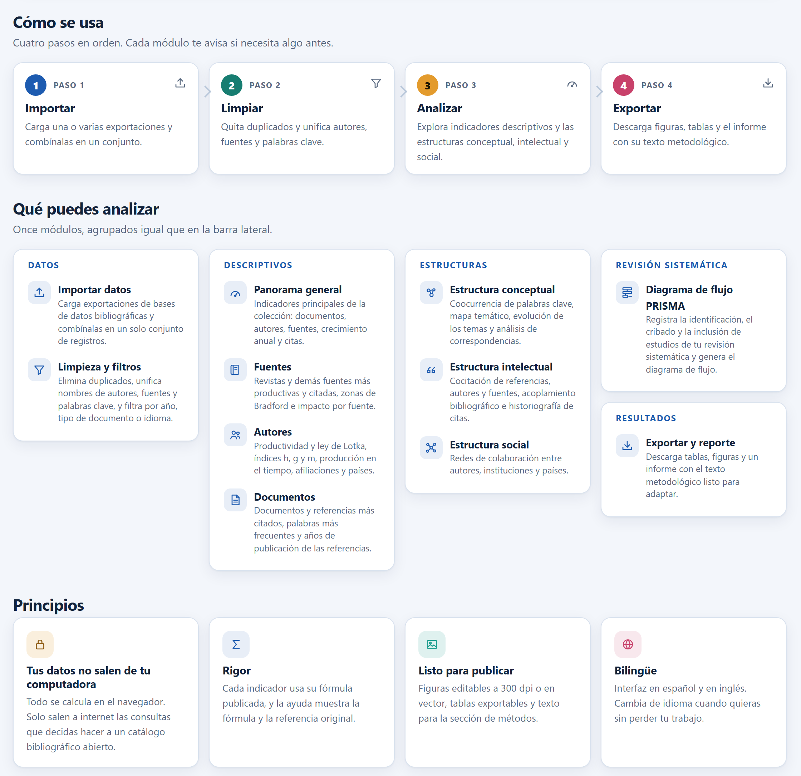
12345
Figura 2.1. La parte inferior de la portada: la ruta de trabajo, los módulos y los principios de la app.
1Cómo se usa: los cuatro pasos en orden (importar, limpiar, analizar y exportar).
2Cada tarjeta de paso es un botón que abre su módulo.
3Qué puedes analizar: los once módulos, agrupados igual que en la barra lateral.
4Cada módulo, con su descripción, abre su pantalla con un clic.
5Principios: privacidad, rigor, resultados listos para publicar y bilingüismo.
Los módulos se pueden abrir aunque todavía no haya datos. En ese caso muestran el aviso Primero importa datos con los mismos dos botones de la portada, así que nunca queda una pantalla vacía sin salida. En la barra lateral, el punto gris junto a cada módulo te recuerda que necesita datos; desaparece en cuanto los cargas.
▸Ejemplo · cargar el ejemplo con datos ya cargados
Si ya importaste archivos y pulsas Cargar datos de ejemplo, la app pregunta «Cargar el ejemplo reemplaza los datos que tienes cargados. ¿Continuar?». Al aceptar, quita tus archivos, carga las 300 obras y abre el Panorama general. Como el ejemplo no trae palabras clave de autor, un aviso al pie de la pantalla dice que se eligió Palabras clave de índice como campo de términos. Si no quieres perder tu trabajo, guárdalo antes como proyecto (sección 2.3).
4
Pasos
Importar, limpiar, analizar y exportar: el orden de la barra lateral.
11
Módulos
En cinco grupos: Datos, Descriptivos, Estructuras, Revisión sistemática y Resultados.
2.2Idioma y tema
Los controles de la derecha del encabezado cambian el idioma y la apariencia de toda la app. Los dos cambios son inmediatos, no reinician ningún cálculo y el navegador los recuerda para la siguiente visita.
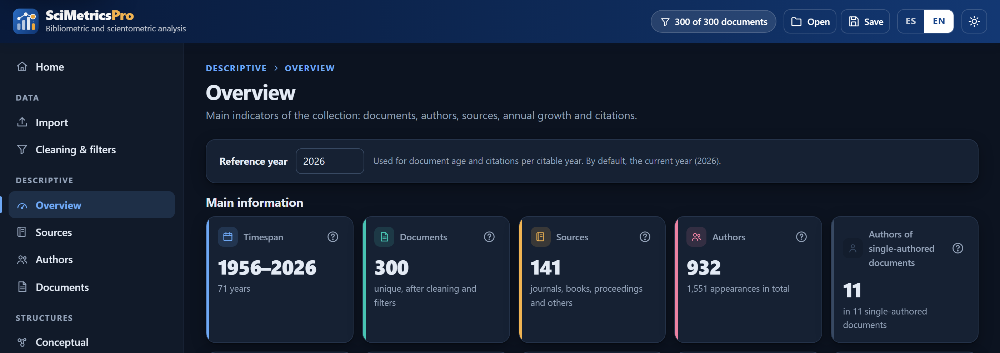
123
Figura 2.2. El Panorama general de los datos de ejemplo con la interfaz en inglés y en modo oscuro.
1ES · EN: el idioma activo aparece resaltado.
2Botón del tema: la luna pasa a modo oscuro y el sol vuelve al claro.
3Menús, títulos, tarjetas, ayudas y etiquetas de las figuras cambian de idioma; las cifras no cambian.
El idioma
La app abre en español la primera vez. Al pulsar EN cambian los textos de la interfaz, las ayudas, los mensajes, los títulos de tablas y las etiquetas de las figuras, incluidos los nombres de los países y de los idiomas, que toman la forma del idioma elegido. Lo que viene de tus registros no se traduce: títulos, palabras clave, nombres de revistas y de instituciones se muestran tal como los exportó la base. Tus datos, tu limpieza y tus parámetros se conservan al cambiar de idioma.
iNota · el informe tiene su propio idioma
El informe con el texto metodológico se escribe en español o en inglés según lo elijas en Exportar y reporte›Informe, sin cambiar el idioma de la interfaz. Puedes trabajar en español y entregar el informe en inglés para una revista (capítulo 13).
El tema claro u oscuro
Mientras no elijas, la app sigue el tema de tu sistema operativo. Al pulsar el botón del tema, tu elección queda guardada y manda sobre la del sistema. El modo oscuro es para trabajar con la pantalla; las figuras se descargan siempre con Fondo blanco, salvo que elijas Transparente (PNG) en la barra de la figura, así que el tema no afecta lo que publicas.
2.3Guardar y abrir un proyecto
Un proyecto es un archivo con todo tu trabajo: los registros importados y todas las decisiones que tomaste sobre ellos. Sirve para seguir otro día, para llevar el trabajo a otra computadora, para compartirlo con quien colabora contigo y para dejar constancia de cómo se obtuvieron los resultados.
Tabla 2.1. Qué guarda un proyecto y qué no.
Guarda
No guarda
Los registros importados completos y la lista de archivos, con sus búsquedas en el catálogo abierto.
El conjunto limpio ya calculado: se vuelve a calcular al abrir, con las mismas decisiones, y queda idéntico.
La limpieza: duplicados separados a mano, uniones de autores, alias de instituciones y países, sinónimos, palabras vacías, campo de términos, filtros y año de referencia.
El idioma y el tema de la interfaz, que son preferencias de quien usa la app.
Las decisiones y los motivos del cribado PRISMA y la opción de analizar solo los incluidos.
La llave de acceso del catálogo abierto, que solo se recuerda en tu navegador si la marcas.
Los parámetros de cada módulo, la pestaña abierta, los ajustes de cada figura y las opciones de exportación y del informe.
Los archivos originales que importaste, que no se modifican nunca.
Guardar
PulsaGuardar en el encabezado. El botón está desactivado mientras no haya datos.
Espera el avisoProyecto guardado: …. El navegador descarga un archivo con nombre scimetricspro_proyecto_AAAA-MM-DD.smp.json, con la fecha del día.
Muévelo a una carpeta de tu trabajo y, si lo guardas varias veces el mismo día, cámbiale el nombre para distinguir las versiones.
El archivo va comprimido. Con los datos de ejemplo pesa unos 355 KB, cuando su contenido sin comprimir ocupa unos 2.6 MB. Con colecciones grandes crece: con 10,000 registros ronda los 12 MB y guardarlo tarda unos segundos, durante los cuales la app muestra el aviso Guardando el proyecto….
Abrir
PulsaAbrir y elige un archivo .smp.json. También se aceptan proyectos sin comprimir.
Confirma si ya tenías datos: abrir un proyecto reemplaza los datos y las decisiones cargados.
Sigue donde te quedaste. La app recalcula el conjunto limpio, vuelve a la pantalla que tenías abierta y avisa cuántos registros y archivos abrió.
Tabla 2.2. Mensajes al abrir un proyecto.
Mensaje
Qué significa
El archivo no es un proyecto de SciMetricsPro.
Elegiste otro tipo de archivo (una exportación, un informe) o el archivo está dañado. Las exportaciones se cargan en Importar.
El proyecto se guardó con una versión más reciente (…).
Quien lo guardó usa una versión posterior de la app. Actualiza tu copia del programa.
No se pudo abrir el proyecto: …
Otro problema al leer el archivo; el texto después de los dos puntos da el detalle.
θPor qué el proyecto guarda registros y decisiones, no resultados
Un estudio bibliométrico es reproducible cuando otra persona puede partir de los mismos registros, aplicar las mismas decisiones y llegar a las mismas cifras. Por eso el proyecto no guarda tablas ni figuras terminadas: guarda los datos de partida y cada decisión, y la app rehace todo al abrirlo. Una ventaja práctica es que nada queda congelado: un duplicado unido se puede separar, un filtro se puede quitar y un sinónimo se puede corregir aunque el proyecto venga de otra computadora.
!Importante · antes de compartir un proyecto
El proyecto incluye los registros tal como los exportaste, con resúmenes, palabras clave y referencias. Las bases de datos con suscripción suelen limitar la redistribución de esos contenidos. Comparte el proyecto con quien trabaja contigo en el estudio; para publicar tus datos, usa las tablas de resultados o la lista de documentos que se exporta en el capítulo 13, y revisa las condiciones de uso de cada base.
2.4Autoguardado y recuperación de la sesión
Además del proyecto que guardas tú, la app guarda sola una copia de la sesión en el almacenamiento de tu navegador. Si cierras la pestaña por accidente, se apaga la computadora o el navegador se reinicia, al volver a abrir SciMetricsPro podrás recuperar el trabajo.
Cuándo se guarda: un segundo y medio después de cada cambio (datos, limpieza, cribado, pantalla o idioma), cada diez segundos mientras haya datos cargados y en el momento en que cierras o dejas la pestaña.
Qué guarda: lo mismo que un proyecto (tabla 2.1). Los registros solo se vuelven a escribir cuando cambian los archivos, así que las copias siguientes son instantáneas.
Dónde: en el navegador y la computadora donde trabajaste. No sale de tu equipo ni se comparte entre navegadores.
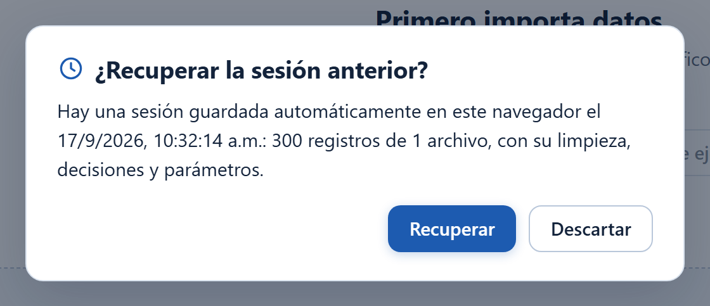
1234
Figura 2.3. La pregunta al volver a abrir la app después de trabajar con los datos de ejemplo.
1Aparece al abrir la app sin datos cuando hay una copia guardada.
2Fecha y hora de la copia, registros y archivos que contiene.
3Recuperar restaura todo y vuelve a la pantalla donde estabas.
4Descartar borra la copia y empieza de cero.
Mientras la pregunta está abierta la app no guarda nada, para no borrar la copia antes de que decidas. Si en lugar de responder importas otros archivos o cargas el ejemplo, la pregunta se cierra y el trabajo nuevo reemplaza la copia anterior. Al quitar todos los archivos en Importar (Quitar todos) la copia también se borra.
✓Regla de decisión · copia automática o proyecto
Si necesitas…
usa…
seguir mañana en la misma computadora
la copia automática; basta con pulsar Recuperar.
trabajar en otra computadora o en otro navegador
un proyecto guardado con Guardar.
compartir el trabajo o entregarlo con un artículo o una tesis
un proyecto, con nombre y fecha, junto con el informe.
conservar cómo estaba el estudio antes de un cambio grande (nuevos filtros, otra búsqueda)
un proyecto por cada etapa: la copia automática solo guarda la última sesión.
La copia automática es una red de seguridad, no un respaldo: borrar los datos de navegación o usar una ventana privada la elimina.
2.5El recorrido guiado y las ayudas
El recorrido guiado
La primera vez que abres la app en un navegador empieza un recorrido de siete pasos que señala las partes principales. Puedes seguirlo, retroceder u omitirlo en cualquier momento, y repetirlo cuando quieras con Hacer el recorrido guiado en la portada.
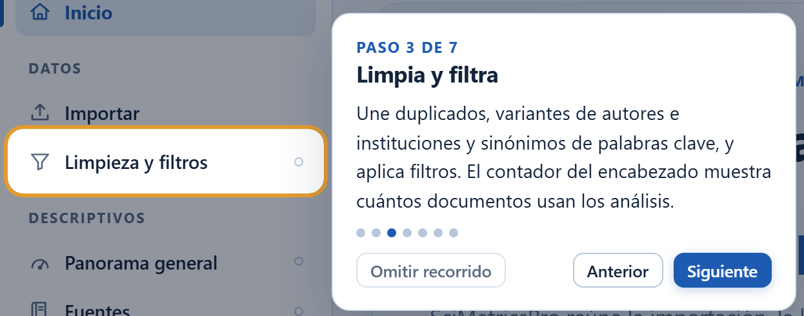
12345
Figura 2.4. El paso 3 del recorrido guiado.
1La parte de la app de la que habla el paso queda resaltada.
2Número del paso y título.
3Puntos de avance: uno por paso.
4Omitir recorrido lo cierra en cualquier paso.
5Anterior y Siguiente; en el último paso, Terminar.
Tabla 2.3. Los siete pasos del recorrido.
Paso
Título
Qué señala
1
Te damos la bienvenida a SciMetricsPro
La app en general y la privacidad de los datos.
2
Importa tus registros
Importar: varias bases a la vez, el catálogo abierto y el ejemplo.
3
Limpia y filtra
Limpieza y filtros y el contador del encabezado.
4
Analiza
Los descriptivos, las estructuras y el botón ? de cada indicador.
5
Revisión sistemática
El cribado con el teclado y el diagrama PRISMA 2020.
6
Exporta y redacta
Figuras, tablas, redes, el paquete ZIP y el informe.
7
Guarda tu trabajo
El botón Guardar, la copia automática, el idioma y el tema.
Con el teclado, → avanza, ← retrocede y Esc cierra el recorrido. En pantallas angostas, los pasos que señalan un módulo abren primero el menú de la barra lateral.
Las ayudas de cada indicador
El botón ? acompaña a las tarjetas de indicadores, a las figuras, a las tablas, a los grupos de parámetros de las redes y a las opciones de exportación. Su ventana, que viste en la figura 1.6, explica qué mide el indicador, da su fórmula con el significado de cada símbolo, dice cómo interpretarlo y cita el artículo original del método. En las pantallas de Importar, Limpieza y Exportar, que no calculan indicadores publicados, la ayuda explica la regla que aplica la app.
iNota · los avisos al pie de la pantalla
Las confirmaciones (Se cargaron 300 registros de ejemplo.), las advertencias y los errores aparecen unos segundos en la parte inferior de la pantalla, en lenguaje llano y en el idioma activo. Los errores explican qué pasó y, cuando se puede, qué hacer; no hace falta abrir ninguna consola.
2.6Acerca de: licencia y cómo citar
La página Acerca de, al final de la barra lateral y en el pie de página, reúne los datos formales del programa: versión, autoría, licencia, forma de citarlo y componentes de terceros.
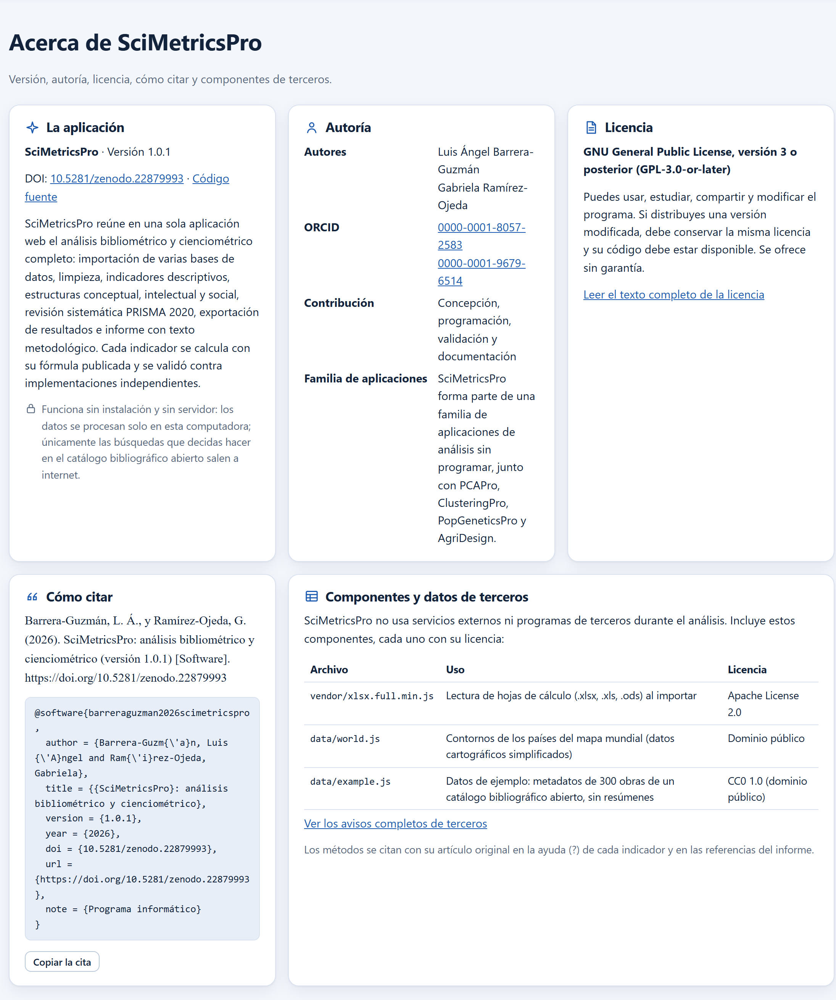
1234567
Figura 2.5. La página Acerca de.
1Nombre y versión del programa que estás usando.
2ORCID de cada autor: abre su perfil.
3Enlace al texto completo de la licencia.
4Cita en texto y en formato BibTeX, para un gestor de referencias.
5Copiar la cita copia las dos formas al portapapeles.
6Componentes y datos de terceros, cada uno con su licencia.
7Enlace a los avisos completos de terceros.
§La licencia en pocas palabras
SciMetricsPro se distribuye con la Licencia Pública General de GNU, versión 3 o posterior. Puedes usar el programa con cualquier fin, estudiar cómo funciona, compartirlo y modificarlo. Si distribuyes una versión modificada, debe conservar la misma licencia y su código debe estar disponible. El programa se ofrece sin garantía. Los componentes de terceros conservan sus propias licencias: el lector de hojas de cálculo (Apache 2.0), los contornos de los países (dominio público) y los datos de ejemplo (CC0 1.0).
▸Ejemplo · citar el programa en la sección de métodos
Cita la versión con la que obtuviste tus resultados. El informe del capítulo 13 escribe la frase por ti, con la versión y el año; en español dice: «Los indicadores, las redes y las figuras se calcularon con SciMetricsPro [versión] (Barrera-Guzmán y Ramírez-Ojeda, [año]), que aplica en el navegador las fórmulas publicadas de cada método», y agrega la referencia completa del programa a la lista de referencias, junto con los artículos de los métodos que usaste.
2.7Teclado y accesibilidad
Toda la app se puede usar sin ratón. El foco del teclado se ve siempre, las ventanas lo retienen mientras están abiertas y las figuras llevan un nombre que leen los lectores de pantalla.
Tabla 2.4. Teclas de la app.
Teclas
Dónde
Qué hacen
Tab · Mayús+Tab
Toda la app
Pasan al control siguiente o al anterior. El primer Tab muestra el enlace Saltar al contenido.
Intro · Espacio
Botones, casillas, tarjetas
Activan el control con el foco.
←→
Pestañas de un módulo
Cambian a la pestaña anterior o siguiente.
Esc
Ayuda, recorrido, menú
Cierran la ventana de ayuda, el recorrido guiado o el menú en pantallas angostas.
←→ · Esc
Recorrido guiado
Paso anterior o siguiente; cerrar.
+−0 · flechas · Esc
Red interactiva con el foco
Acercar, alejar, encuadrar; mover el dibujo; quitar la selección.
Intro
Cuadro de búsqueda de una red
Busca y selecciona el término escrito.
IEDU · ←→
Cribado PRISMA
Incluir, excluir, dudoso, deshacer; documento anterior o siguiente (capítulo 12).
Pantallas angostas
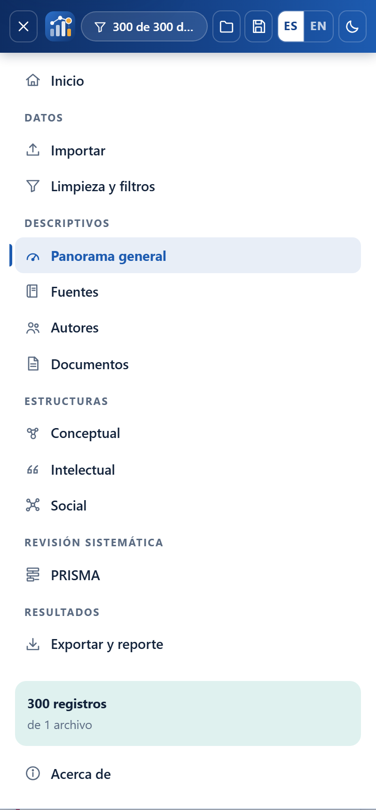
123
Figura 2.6. La app a 400 píxeles de ancho con el menú abierto.
Por debajo de 900 píxeles de ancho la barra lateral se vuelve un menú que se abre con el botón del encabezado, y los botones del encabezado muestran solo su ícono. La app funciona igual en una tableta o en un celular, aunque las redes y las tablas grandes se aprovechan mejor en una pantalla amplia.
1El botón del menú; con el menú abierto se vuelve una × que lo cierra.
2El contador de documentos, abreviado.
3Abrir y Guardar solo con su ícono; su nombre aparece al señalarlos y lo leen los lectores de pantalla.
iNota · accesibilidad
Todas las pantallas se revisaron en modo claro y oscuro: cada botón y cada campo tienen nombre, las imágenes tienen texto alternativo, las figuras se anuncian con su título y los textos cumplen el contraste mínimo recomendado para lectura. Si usas un lector de pantalla, las tablas de cada figura (botón Datos) dan los mismos números en un formato que se recorre celda por celda.
Con la app ya conocida, el siguiente capítulo empieza el trabajo con los datos: cómo convertir tu idea de investigación en cadenas de búsqueda, qué exportar de cada base y cómo importar los archivos.
3
Capítulo tres
Importar datos
Cómo convertir un título tentativo en una cadena de búsqueda para cada buscador académico, qué exportar de cada base de datos, cómo reunir varios archivos en un solo conjunto, cómo leer la tabla de campos disponibles y los avisos, y cómo descargar registros directamente del catálogo bibliográfico abierto.
3.1De la idea a la cadena de búsqueda
3.2Los conceptos y sus términos
3.3Una cadena para cada buscador
3.4Qué exportar de cada base
3.5Cargar archivos y combinar bases
3.6Campos, avisos y vista previa
3.7Buscar en el catálogo abierto
La pantalla Importar tiene tres pestañas que corresponden a tres momentos del trabajo. La primera, Palabras clave, prepara la búsqueda antes de tener datos. La segunda, Archivos, recibe las exportaciones de las bases de datos. La tercera descarga registros del catálogo bibliográfico abierto sin exportar archivos. La pantalla abre en Archivos; con el foco en las pestañas, las flechas ←→ cambian de una a otra.
iNota · los nombres de las bases en este capítulo
Para que reconozcas cada exportación, la pantalla Importar muestra los nombres comerciales de las bases de datos, y así aparecen en las capturas. En el texto del manual se usan descripciones genéricas: índice de citas multidisciplinario A y B, índice biomédico público, buscador académico abierto, base de datos de investigación enlazada, índice regional de revistas y catálogo bibliográfico abierto. Las tarjetas de la app y las filas de las tablas de este capítulo siguen el mismo orden.
3.1De la idea a la cadena de búsqueda
Una búsqueda bibliográfica sistemática no se hace con una frase suelta en un buscador: se descompone la pregunta en conceptos, cada concepto se escribe con todas sus formas (sinónimos, variantes, nombres científicos) y se combinan con operadores lógicos. La pestaña Palabras clave hace ese trabajo a partir de tu título tentativo o tu idea de investigación. La app no busca: propone los conceptos, escribe la cadena con la sintaxis de cada buscador y tú la copias, la pegas en el buscador que elijas y exportas los resultados. Todo ocurre en tu computadora; el título no se envía a ningún servicio.
θTeoría en breve · bloques de búsqueda
Cada concepto de la pregunta es un bloque. Dentro de un bloque, los términos se unen con OR: basta que un documento use cualquiera de ellos. Entre bloques se usa AND: el documento debe tocar todos los conceptos. Así, más términos dentro de un bloque amplían la búsqueda (encuentran documentos que dicen lo mismo con otras palabras) y más bloques la estrechan. Las comillas buscan una frase exacta y el asterisco trunca una palabra: fertiliz* encuentra fertilizer, fertilizers y fertilization.
Figura 3.1. La estructura de toda cadena que escribe la app, con parte de los términos del ejemplo de este capítulo.
Escribir la idea
AbreImportar›Palabras clave. Si todavía no hay datos, también llegas con el enlace Prepara las palabras clave de tu búsqueda de la pestaña Archivos.
Escribe tu título tentativo o tu idea, en español o en inglés. Menciona el organismo o la población, la variable o el tratamiento y el resultado que te interesa.
Elige dónde buscar: Título, resumen y palabras clave (lo habitual) o Solo el título (más preciso, pero pierde documentos). Escribe los Años de publicación si quieres acotar el periodo.
PulsaProponer palabras clave. Aparecen los conceptos y, debajo, las cadenas de cada buscador. El botón cambia a Volver a proponer; si ya editaste los conceptos, la app pide confirmación antes de reemplazarlos.
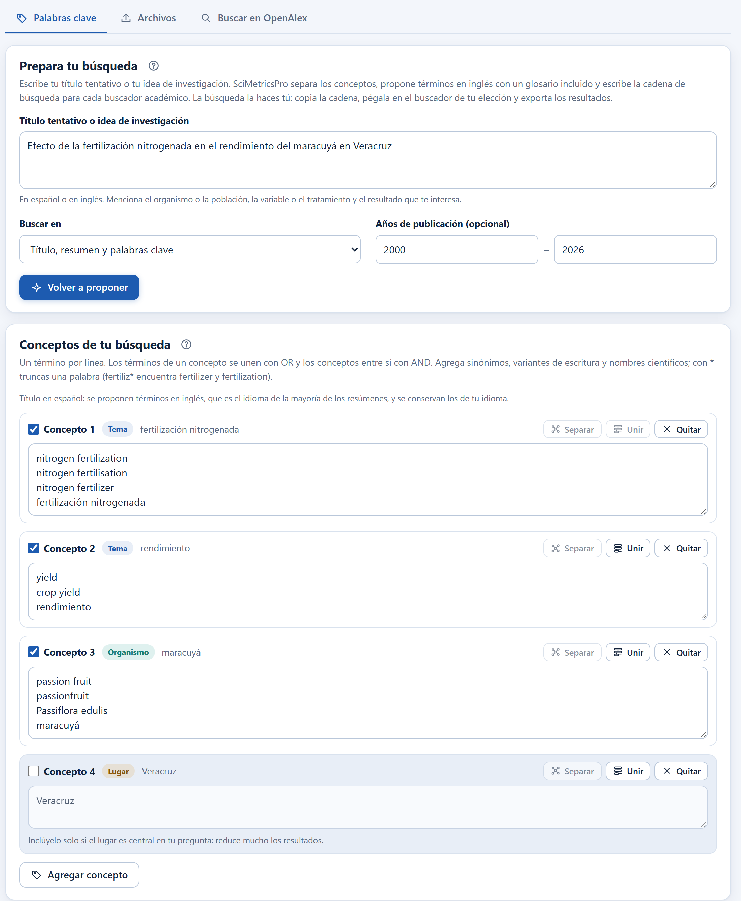
12345678910
Figura 3.2. La pestaña Palabras clave con el título Efecto de la fertilización nitrogenada en el rendimiento del maracuyá en Veracruz y el periodo 2000–2026.
1El título tentativo o la idea de investigación.
2Campos donde se busca: título, resumen y palabras clave, o solo el título.
3Años de publicación, opcionales.
4Proponer los conceptos, o volver a proponerlos.
5Idioma reconocido del título y qué hizo la app con él.
6Número y tipo del concepto (tema, organismo o lugar) y de qué parte del título salió.
7Separar, Unir con el anterior y Quitar.
8Los términos del concepto, uno por línea; se pueden editar.
9Un lugar empieza desmarcado: la casilla lo incluye en la búsqueda.
10Agregar concepto crea un bloque vacío.
Qué hace la app con el título
La app corta el título en frases por las preposiciones, los artículos y la puntuación, descarta las palabras genéricas de investigación (efecto, análisis, estudio, evaluación) y busca cada frase en un glosario bilingüe incluido, que prefiere siempre la frase más larga que conoce: calidad del fruto es un solo concepto, no dos. El glosario tiene 587 entradas: 323 conceptos, 106 organismos con su nombre común y su nombre científico, 67 modificadores (como orgánico o nitrogenado), 62 lugares y 29 palabras genéricas que se descartan. En un título en español, los términos se escriben en inglés, el idioma de la mayoría de los resúmenes, y se conserva al final el término en español.
Tabla 3.1. Los conceptos del título del ejemplo, tal como los propone la app.
passion fruit · passionfruit · Passiflora edulis · maracuyá
●
en Veracruz
Lugar
Veracruz
◐ desmarcado
θReglas que aplica la app al separar conceptos
Sustantivo y modificador se unen en el orden del inglés: fertilización orgánica da organic fertilization.
«y» y «o» forman alternativas del mismo concepto, y un modificador suelto toma el sustantivo anterior: fertilización nitrogenada y potásica da un bloque con los términos de nitrogen fertilization y de potassium fertilization. En inglés, nitrogen and potassium fertilization comparte el sustantivo de la misma manera.
Un organismo junto a otros sustantivos se separa en su propio bloque: common bean landraces da el organismo common bean (Phaseolus vulgaris) y el tema landraces (local varieties).
Lo que va entre paréntesis se une al concepto anterior como sinónimo.
Los lugares empiezan desmarcados, y en los títulos con Mayúsculas En Cada Palabra las mayúsculas no se toman como nombres de lugar.
Las palabras que el glosario no conoce se conservan en su propio concepto con el aviso Sin traducción en el glosario, salvo los nombres científicos y los nombres propios, que se usan tal cual.
3.2Los conceptos y sus términos
Los conceptos propuestos son un punto de partida. Tú conoces tu tema mejor que cualquier glosario: agrega los sinónimos que usa tu disciplina, las variantes regionales y los nombres científicos de otras especies que te interesen. Cada cambio actualiza al momento las cadenas de todos los buscadores.
Tabla 3.2. Cómo se editan los conceptos.
Control
Qué hace
Casilla Concepto n
Incluye o deja fuera el concepto sin borrarlo. Un concepto desmarcado se ve atenuado.
Cuadro de términos
Un término por línea. Las frases se escriben sin comillas: la app las pone según el buscador. El asterisco trunca: fertiliz*.
Separar
Divide en conceptos distintos (unidos con AND) un concepto que reunió alternativas, como nitrogenada y potásica. Solo está activo en esos conceptos y mientras no edites sus términos.
Unir
Une el concepto con el anterior: sus términos quedan en un solo bloque con OR.
Quitar
Borra el concepto.
Agregar concepto
Crea un bloque vacío para escribir sus términos.
▸Ejemplo · un título en inglés con cuatro conceptos
Con Nitrogen and potassium fertilization of common bean landraces under drought, la app reconoce el inglés y propone cuatro conceptos: la fertilización con nitrógeno y potasio (8 términos, con las escrituras fertilization y fertilisation, fertilizer y fertiliser), el organismo common bean con Phaseolus vulgaris, landraces con local varieties y drought. Si solo te interesa el potasio, pulsa Separar en el primer concepto y quita el del nitrógeno; si la sequía no es parte de tu pregunta, desmarca ese concepto.
✓Regla de decisión · ajustar la búsqueda por el número de resultados
Si el buscador da…
entonces…
demasiados resultados, muchos ajenos al tema
busca solo en el título, agrega un concepto que delimite (el organismo, el tipo de estudio) o quita términos demasiado generales.
muy pocos resultados
desmarca el lugar y los conceptos secundarios, agrega sinónimos y variantes, trunca con * las palabras con varias terminaciones y amplía el periodo.
resultados razonables, pero faltan trabajos que conoces
revisa cómo titulan esos trabajos su tema y agrega esos términos al concepto que corresponda.
más de cuatro conceptos marcados
la app avisa que la búsqueda puede quedar demasiado estrecha: desmarca los menos importantes.
Dos o tres conceptos suelen bastar. Un buen indicio de una búsqueda sensible es que encuentre los trabajos clave que ya conoces.
3.3Una cadena para cada buscador
La misma estrategia se escribe de forma distinta en cada buscador: cambian los nombres de los campos, las reglas del truncamiento y la forma de pedir los años. La tarjeta Cadenas para copiar y pegar tiene ocho recuadros, uno por buscador, cada uno con su cadena lista, un botón Copiar, el número de caracteres, dónde pegarla y qué exportar después para SciMetricsPro.
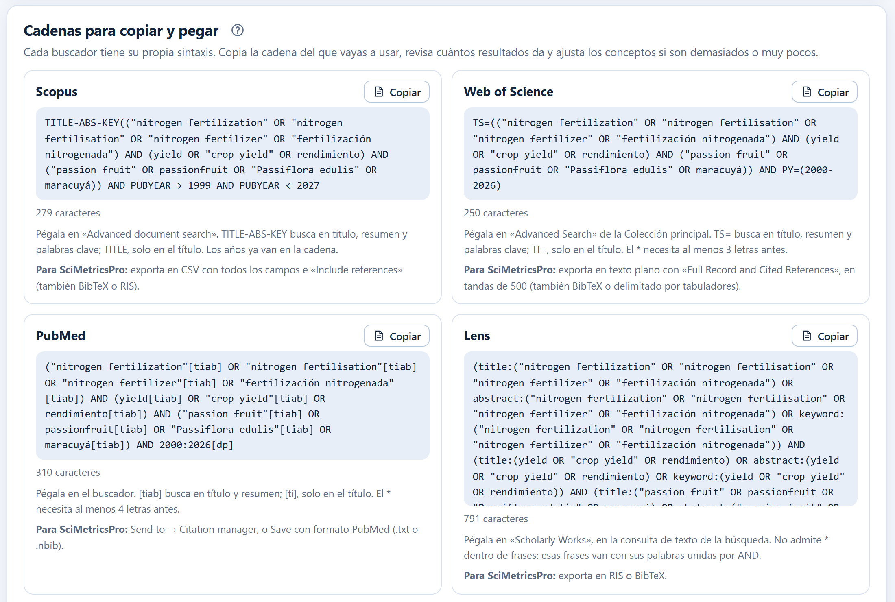
123456
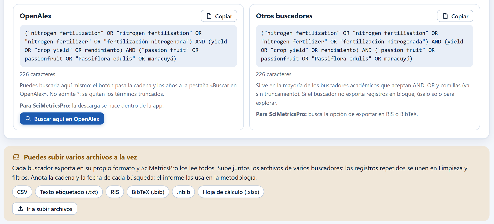
789
Figura 3.3. Las cadenas del ejemplo: arriba, los cuatro primeros buscadores; abajo, el catálogo abierto, otros buscadores y el recordatorio de los formatos.
1Copiar pone la cadena en el portapapeles y lo confirma con un aviso.
2La cadena, con la sintaxis de ese buscador.
3Su longitud en caracteres y, si aplica, cuántos términos se quitaron.
4Dónde pegarla y qué significan sus campos.
5Qué exportar de esa base para SciMetricsPro.
6Las cadenas largas se desplazan dentro de su recuadro.
7Pasa la cadena y los años a la pestaña de búsqueda del catálogo abierto (sección 3.7).
8Recordatorio: se pueden subir varios archivos, de buscadores y formatos distintos.
9Lleva a la pestaña Archivos.
La tabla 3.3 resume las reglas de sintaxis que aplica la app. Las columnas de truncamiento muestran qué pasa con tres términos de prueba: fertiliz*, nit* y la frase truncada nitrogen fertiliz*.
Tabla 3.3. Sintaxis de cada buscador, en el orden de las tarjetas de la app.
Buscador
Campos
Años
Truncamiento
Índice de citas multidisciplinario A
TITLE-ABS-KEY(…) o TITLE(…) para toda la cadena
PUBYEAR > 1999 AND PUBYEAR < 2027
Sin restricciones: fertiliz*, nit* y "nitrogen fertiliz*" se conservan.
Índice de citas multidisciplinario B
TS=(…) o TI=(…)
PY=(2000-2026)
Al menos 3 letras antes de *: nit* sí; ni* se quita.
Índice biomédico público
[tiab] o [ti] después de cada término
2000:2026[dp]
Al menos 4 letras antes de *: nitr* sí; nit* se quita.
Buscador académico abierto
title:, abstract: y keyword: por cada concepto
year_published:[2000 TO 2026]
No admite * dentro de frases: nitrogen fertiliz* se escribe (nitrogen AND fertiliz*).
Base de datos de investigación enlazada
Sin campos: se elige título y resumen en la página
Con el filtro de años de la página
Igual que el anterior.
Índice regional de revistas
Sin campos
Con el filtro de años de la página
Trunca con $: fertiliz$.
Catálogo bibliográfico abierto
Sin campos: la pestaña de búsqueda busca en título y resumen
Pasan a la pestaña de búsqueda
No admite truncamiento: los términos con * se quitan.
Otros buscadores
Sin campos
No se escriben
Sin truncamiento, para que la cadena sirva en la mayoría.
Con el título del ejemplo y el periodo 2000–2026, la cadena del índice de citas multidisciplinario A tiene 279 caracteres:
TITLE-ABS-KEY(("nitrogen fertilization" OR "nitrogen fertilisation" OR "nitrogen fertilizer" OR "fertilización nitrogenada") AND (yield OR "crop yield" OR rendimiento) AND ("passion fruit" OR passionfruit OR "Passiflora edulis" OR maracuyá)) AND PUBYEAR > 1999 AND PUBYEAR < 2027
y la del índice biomédico público marca el campo en cada término:
("nitrogen fertilization"[tiab] OR "nitrogen fertilisation"[tiab] OR "nitrogen fertilizer"[tiab] OR "fertilización nitrogenada"[tiab]) AND (yield[tiab] OR "crop yield"[tiab] OR rendimiento[tiab]) AND ("passion fruit"[tiab] OR passionfruit[tiab] OR "Passiflora edulis"[tiab] OR maracuyá[tiab]) AND 2000:2026[dp]
▸Ejemplo · términos truncados en un buscador que no los admite
Si el primer concepto tiene fertiliz*, nitrogen fertiliz* y manure, y el tercero solo yield*, la cadena para el catálogo bibliográfico abierto queda manure AND ("passion fruit" OR "Passiflora edulis") AND yield con la nota Se quitaron 2 términos truncados: este buscador no admite *. Del primer concepto se quitan los dos términos truncados porque queda manure. Del tercero no se puede quitar el único término, así que se conserva su raíz, yield. Revisa estas notas: un concepto que se queda con términos pobres conviene completarlo con las palabras enteras.
iNota · por qué los términos en español siguen en la cadena
El término en tu idioma (fertilización nitrogenada, maracuyá) se conserva al final de cada concepto porque muchas revistas latinoamericanas publican títulos, resúmenes o palabras clave también en español o portugués. No estorba en los índices en inglés y recupera documentos en las bases regionales. Si no te interesan, bórralos del cuadro de términos.
3.4Qué exportar de cada base
Una vez que la búsqueda da resultados razonables, exporta todos los registros con todos sus campos. Lo que no venga en la exportación no se podrá analizar (tabla 1.3), y las referencias citadas son lo que más a menudo se queda fuera porque suele ser una opción aparte. La pestaña Archivos tiene la lista Formatos compatibles con las opciones de exportación de cada base, con sus nombres; la tabla 3.4 las resume.
Tabla 3.4. Qué exportar de cada tipo de base para aprovechar todos los análisis.
Base
Formato recomendado
Cuidado con
Índice de citas multidisciplinario A
CSV con todos los grupos de campos y la opción que incluye las referencias citadas. También BibTeX o RIS con las mismas opciones.
Sin la opción de referencias no habrá cocitación, acoplamiento, historiografía ni RPYS.
Índice de citas multidisciplinario B
Texto plano (o delimitado por tabuladores) con el registro completo y las referencias citadas. También BibTeX con el mismo contenido.
Exporta en tandas de 500 registros si son más y sube todas las tandas juntas.
Índice biomédico público
Formato propio del índice, en texto etiquetado (.txt o .nbib).
Su CSV resumido no trae resúmenes, palabras clave ni afiliaciones. Ninguno de sus formatos trae referencias ni citas.
Buscador académico abierto y base de investigación enlazada
RIS o BibTeX.
Revisa en la tabla de campos si trajeron afiliaciones y citas.
Índice regional de revistas
RIS.
Suele traer resúmenes y DOI, pero no afiliaciones ni citas.
Catálogo bibliográfico abierto
Descarga dentro de la app (sección 3.7).
Sus referencias son identificadores del catálogo, sin autor ni año.
Gestores de referencias y otras fuentes
RIS o BibTeX; o una tabla CSV o una hoja de cálculo con encabezados reconocibles.
Los campos dependen de lo que guardó el gestor.
!Importante · anota la cadena y la fecha
El mismo día que exportes, anota para cada base la cadena exacta que usaste, los filtros que aplicaste en la página del buscador, el número de resultados y la fecha. Las bases se actualizan a diario y una búsqueda repetida semanas después no da lo mismo. El informe del capítulo 13 pide esos datos para cada archivo y los redacta en la metodología; las búsquedas en el catálogo abierto los guardan solas.
3.5Cargar archivos y combinar bases
La pestaña Archivos recibe todas las exportaciones. Puedes cargar varios archivos a la vez, de bases distintas y en formatos distintos: cada uno se lee en segundo plano, se reconoce su formato por el contenido y sus registros se agregan al conjunto. Los registros repetidos entre archivos no se tocan aquí: se unen en Limpieza y filtros (capítulo 4).
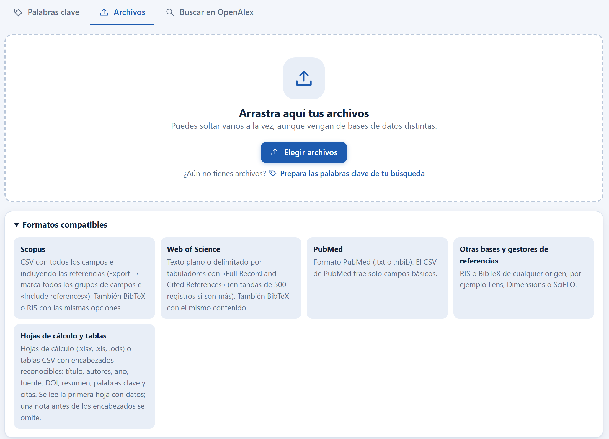
12345
Figura 3.4. La pestaña Archivos antes de cargar datos.
1Zona para soltar archivos arrastrados desde tu carpeta.
2Elegir archivos abre el selector; con datos cargados dice Agregar más archivos.
3Enlace a la pestaña Palabras clave, solo mientras no hay datos.
4Formatos compatibles: abierta sin datos; se pliega al cargar.
5Tarjeta de hojas de cálculo y tablas con encabezados reconocibles.
Reúne en una carpeta las exportaciones de todas las bases. Los nombres de archivo aparecen en la tabla, en PRISMA y en el informe: si son descriptivos (maracuya_indice_a.csv) te ahorran confusiones.
Arrástralos juntos a la zona punteada, o pulsa Elegir archivos y selecciónalos todos con Ctrl.
Espera la lectura. Con archivos grandes aparece una ventana de progreso con Cancelar; si cancelas, no se agrega nada. Al terminar, un aviso dice cuántos registros se agregaron.
Revisa la tabla de archivos, los campos disponibles y la vista previa (sección 3.6), y sigue con Ir a Limpieza y filtros.
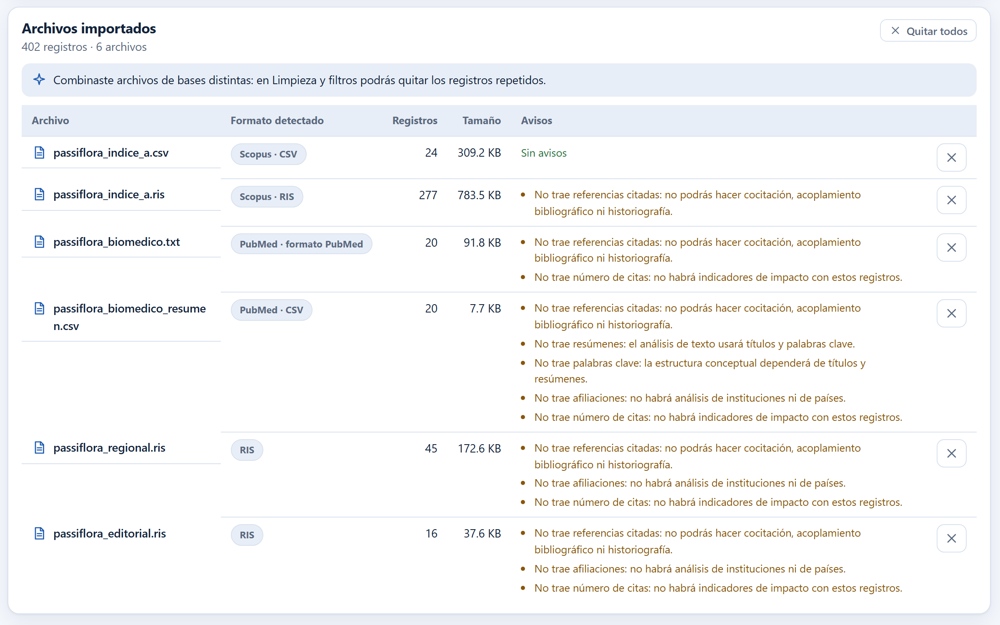
1234567
Figura 3.5. Seis exportaciones reales de cuatro bases distintas, cargadas juntas.
1Total de registros y de archivos importados.
2Quitar todos, con confirmación; borra también la copia automática.
3Aviso de que combinaste bases distintas.
4Base y formato detectados. Un RIS o BibTeX de origen no reconocido muestra solo el formato.
5Registros leídos y tamaño de cada archivo.
6Avisos en lenguaje llano sobre lo que le falta al archivo (tabla 3.5).
7Quita ese archivo y sus registros.
▸Ejemplo · seis archivos, 402 registros, 328 documentos
La figura 3.5 muestra seis exportaciones reales: el índice de citas multidisciplinario A en CSV (24 registros) y en RIS (277), el índice biomédico público en su formato propio (20) y en su CSV resumido (20), el índice regional de revistas (45) y la plataforma de una editorial (16), estos dos en RIS. Cinco vienen de búsquedas sobre el maracuyá; el CSV del índice A viene de una búsqueda sobre otro tema. En total, 402 registros. En el encabezado, el contador ya dice 328 de 328 documentos: al cargar, la limpieza unió los 74 registros que se repiten entre archivos (capítulo 4). Los conteos de cada archivo se comprobaron leyendo los archivos fuera de la app.
iNota · archivos repetidos, codificación y hojas de cálculo
Un archivo con el mismo nombre y el mismo tamaño que uno ya cargado se omite, con el aviso … ya estaba importado y se omitió.
Los archivos se leen en UTF-8. Si un archivo viene en otra codificación, la app lo lee como Latin-1 y avisa: revisa acentos y eñes en la vista previa.
De una hoja de cálculo (.xlsx, .xls, .ods) se lee la primera hoja con datos. Si la hoja o un CSV empiezan con una nota de una sola celda encima de los encabezados, esa nota se salta.
3.6Campos disponibles, avisos y vista previa
La tabla de campos disponibles
Debajo de la tabla de archivos, Campos disponibles muestra qué porcentaje de registros trae cada campo, primero en el total y después en cada archivo. La barra es verde desde 80 %, ámbar entre 30 y 80 % y roja por debajo; un campo vacío queda en gris.
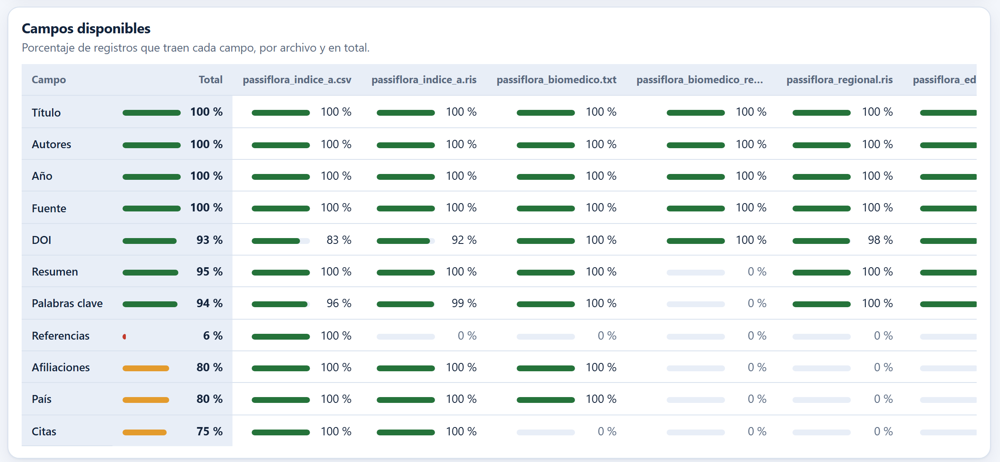
1234
Figura 3.6. Los campos disponibles de las seis exportaciones.
1La columna Total va primero, junto al nombre del campo.
2El DOI llega al 93 %: la detección de duplicados será precisa.
3Solo el 6 % trae referencias citadas: es el único campo en rojo.
4Con muchos archivos, la tabla se desplaza hacia la derecha.
▸Ejemplo · leer la tabla antes de analizar
En la figura 3.6, 375 de los 402 registros traen DOI (93 %), pero solo 24 traen referencias citadas (6 %): las del CSV del índice A, que además viene de otra búsqueda. La exportación en RIS del mismo índice, con los 277 registros del maracuyá, se hizo sin la opción de referencias. Con estos archivos, la estructura intelectual y la RPYS descansarían en 24 documentos que ni siquiera son del tema. La solución es volver a exportar la búsqueda del maracuyá con las referencias antes de seguir. Las citas (75 %, 301 registros) y las afiliaciones (80 %) vienen solo de las exportaciones de los índices, así que los indicadores de impacto y de países describirán sobre todo esos registros.
Los avisos de cada archivo
Tabla 3.5. Avisos de la tabla de archivos y qué hacer con ellos.
Aviso
Cuándo aparece
Qué hacer
No trae referencias citadas… · Solo el N % … trae referencias citadas.
Ningún registro, o menos de la mitad, con referencias.
Volver a exportar con la opción de referencias, o combinar con un índice de citas.
No trae resúmenes…
Ningún registro con resumen.
Usar palabras clave o títulos como campo de términos.
No trae palabras clave…
Ningún registro con palabras clave de autor ni de índice.
Usar pares de palabras de títulos o resúmenes.
No trae afiliaciones… · Solo se reconoció el país en el N %…
Sin afiliaciones, o país en menos de la mitad.
Combinar con otra base; en Limpieza, agregar alias de países.
No trae número de citas…
Ningún registro con conteo de citas.
Normal en el índice biomédico y en muchos RIS; el impacto se calculará con los demás.
Solo el N % … trae DOI…
DOI en menos de la mitad.
Revisar los duplicados con más cuidado (capítulo 4).
Hay N registros sin año… · Se omitieron N registros sin título.
Registros incompletos.
Los sin título no se importan; los sin año quedan fuera de los análisis por año.
Tabla de origen no reconocido…
Una tabla o hoja de cálculo que no es de un índice conocido.
Revisar en la vista previa que título, autores y año se leyeron.
El archivo no estaba en UTF-8…
Otra codificación de caracteres.
Revisar acentos en la vista previa.
No se reconoció el formato… · No se encontraron registros… · No se pudo leer el archivo…
El archivo no es una exportación bibliográfica, está vacío o dañado.
Exportar de nuevo en uno de los formatos de la tabla 3.4.
La vista previa
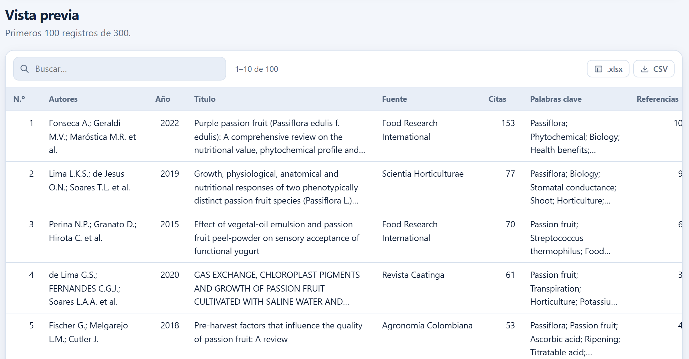
12345
Figura 3.7. La vista previa con los datos de ejemplo.
1Búsqueda dentro de la tabla.
2Filas mostradas y páginas.
3Descarga de la tabla en hoja de cálculo o CSV.
4Un clic en el encabezado ordena por esa columna.
5Los textos largos se recortan con puntos suspensivos.
La vista previa muestra los primeros 100 registros tal como los leyó la app: autores, año, título, fuente, citas, palabras clave, número de referencias, países y archivo de origen. Sirve para comprobar que cada campo cayó en su lugar, sobre todo con tablas de origen no reconocido y con archivos en otra codificación. Los cambios de nombres y los duplicados se ven después, en Limpieza y filtros.
3.7Buscar en el catálogo bibliográfico abierto
La tercera pestaña descarga registros directamente de un catálogo bibliográfico abierto, con licencia de dominio público, sin exportar archivos. Es la única función de la app que usa internet, y solo se conecta cuando pulsas los botones de contar o descargar.
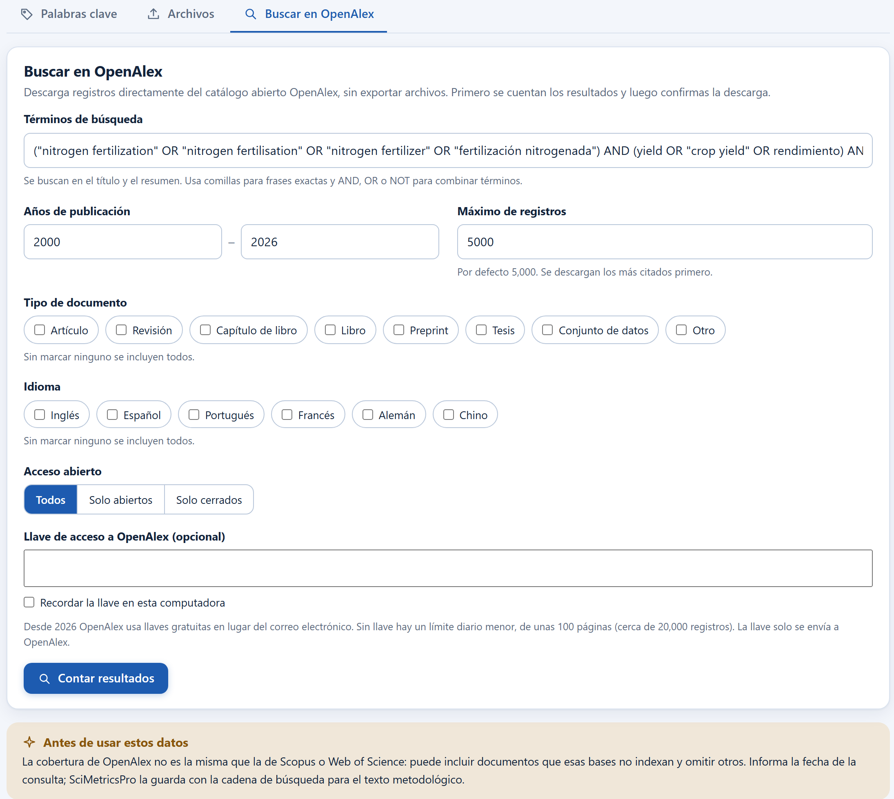
123456789
Figura 3.8. El formulario de búsqueda después de pasarle la cadena del ejemplo desde la pestaña Palabras clave.
1Términos, que se buscan en título y resumen; admiten comillas, AND, OR y NOT.
2Periodo de publicación.
3Máximo de registros: 5,000 por omisión; se descargan los más citados primero.
4Tipos de documento; sin marcar ninguno se incluyen todos.
5Idiomas; igual que los tipos.
6Todos, solo de acceso abierto o solo cerrados.
7Llave de acceso gratuita, opcional, y casilla para recordarla.
8Primero se cuentan los resultados.
9Advertencia sobre la cobertura del catálogo.
Escribe los términos o pásalos desde Palabras clave con el botón de la tarjeta del catálogo abierto, que también copia los años.
Ajusta los filtros y el máximo de registros.
PulsaContar resultados. La app hace una sola consulta y dice cuántos registros encontró y en cuántas páginas se descargarían.
Confirma conDescargar, o vuelve con Cambiar la búsqueda. La descarga corre en segundo plano con una barra de progreso por páginas y un botón para cancelar; si cancelas, no se agrega nada.
Revisa la fila nueva en Archivos: lleva la cadena de búsqueda como nombre y la fecha y hora de la consulta.
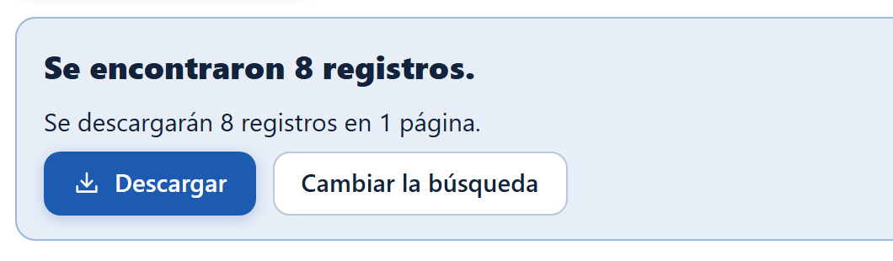
123
Figura 3.9. El conteo de la cadena del ejemplo con los años 2000–2026, el 17 de septiembre de 2026.
1Registros que encontró la búsqueda.
2Cuántos se descargarán y en cuántas páginas; si superan el máximo, se avisa que se tomarán los más citados.
3Descargar inicia la descarga; Cambiar la búsqueda vuelve al formulario.
▸Ejemplo · una cadena muy estrecha
La cadena de tres conceptos del ejemplo encontró solo 8 registros en el catálogo abierto al preparar este manual. Buscar a la vez la fertilización nitrogenada, el rendimiento y el maracuyá en el título o el resumen es demasiado estricto para un tema con poca literatura. Al quitar el concepto del rendimiento o ampliar el primero a la nutrición mineral y la fertilización en general, la búsqueda crece: así se armó la búsqueda de los datos de ejemplo, que encontró 501 obras. El número cambia con el tiempo, a medida que el catálogo se actualiza.
La llave de acceso y los límites de uso
El catálogo abierto entrega los registros en páginas de hasta 200 y limita cuántas páginas se pueden pedir al día. Sin llave, el límite gratuito ronda las 100 páginas diarias, unos 20,000 registros. Con una llave de acceso gratuita, que se obtiene al registrarse en el catálogo, el límite es mayor. La llave es opcional: se envía solo al catálogo y se guarda en tu navegador únicamente si marcas Recordar la llave en esta computadora. No viaja en los proyectos.
Si el catálogo pide esperar o no responde, la app reintenta sola hasta cinco veces, con esperas de 1, 2, 4, 8 y 16 segundos, y muestra el reintento en la barra de progreso.
Tabla 3.6. Mensajes de la búsqueda en el catálogo abierto.
Mensaje
Qué hacer
No hubo respuesta… Revisa tu conexión a internet…
Comprueba la conexión y vuelve a contar.
… no acepta más solicitudes por ahora (límite de uso diario)…
Espera al día siguiente o escribe una llave de acceso gratuita.
… rechazó la llave de acceso…
Revisa la llave o deja el campo vacío.
… no aceptó la búsqueda: …
Revisa comillas y paréntesis de los términos; el texto después de los dos puntos da el detalle.
Sin llave de acceso es probable que el límite diario gratuito no alcance…
Aparece antes de descargar muchas páginas: baja el máximo de registros o usa una llave.
!Importante · cobertura del catálogo y metodología
La cobertura del catálogo abierto no es la misma que la de los índices de citas: puede incluir documentos que esos índices no tienen y omitir otros, y cuenta las citas a su manera. Sus referencias llegan como identificadores del catálogo, útiles para la cocitación, el acoplamiento y la historiografía, pero sin autor ni año, así que no sirven para la RPYS. La app guarda la cadena, los filtros, el número de resultados, los registros descargados y la fecha de cada búsqueda, y el informe los redacta en la metodología. Si combinas el catálogo con otras bases, los duplicados se unen en el capítulo 4.
Con los datos importados y revisados, el siguiente capítulo explica cómo convertir los registros de varias bases en un conjunto limpio: duplicados, variantes de autores, instituciones y países, sinónimos y filtros.
4
Capítulo cuatro
Limpieza y filtros
Cómo convertir los registros de varias bases en un conjunto limpio: fusionar los documentos repetidos, unir las variantes de un mismo autor, unificar instituciones y países, agrupar las formas de una misma palabra clave y dejar fuera lo que no corresponde al estudio. Todo lo que se decide aquí alimenta los once análisis de los capítulos siguientes.
4.1Por qué limpiar antes de analizar
4.2El resumen y el campo de términos
4.3Duplicados
4.4Variantes de nombres de autor
4.5Instituciones y países
4.6Palabras clave: sinónimos y palabras vacías
4.7Filtros
La pantalla Limpieza y filtros tiene seis pestañas que se recorren en orden. Las cuatro primeras corrigen los datos; la quinta agrupa las formas de las palabras clave; la última recorta el conjunto al periodo, los tipos de documento o los idiomas que interesan. Ninguna borra nada: los registros importados se conservan tal como se leyeron y cada decisión se puede deshacer.
Tabla 4.1. Las seis pestañas de Limpieza y filtros.
Pestaña
Qué resuelve
Sección
Resumen
Cuántos registros entraron, cuántos documentos quedaron y con qué campo se van a contar los términos.
4.2
Duplicados
El mismo documento descargado de dos o más bases.
4.3
Autores
La misma persona escrita con distintas iniciales.
4.4
Instituciones y países
La misma organización escrita de varias formas y las afiliaciones sin país reconocido.
4.5
Palabras clave
Singulares y plurales, guiones, erratas y palabras sin contenido.
4.6
Filtros
Años, tipo de documento, idioma, fuente, área temática y mínimo de citas.
4.7
4.1Por qué limpiar antes de analizar
Un conjunto bibliográfico recién importado casi nunca está listo. Si buscaste en varias bases, el mismo artículo llega dos o tres veces, con títulos escritos de distinta manera y con conteos de citas diferentes. Cada base escribe los nombres de los autores a su modo: unas dan solo las iniciales, otras el nombre completo, y basta que una escriba una partícula («dos», «de», «van») para que una misma persona aparezca dos veces en la lista de autores más productivos. Las afiliaciones mezclan departamento, universidad, ciudad y país en una sola línea de texto, a veces en inglés y a veces en el idioma del país. Y las palabras clave conviven en singular y plural, con guion y sin guion, con el nombre científico completo y abreviado.
Nada de esto es un defecto de las bases: son catálogos distintos, hechos con reglas distintas. Pero si no se corrige, los indicadores mienten en la misma dirección: se sobreestima el número de documentos (duplicados), se reparte la producción de una persona entre varias (variantes de nombre) y se dispersa un tema entre muchas palabras (variantes de escritura). Un núcleo de Bradford, una ley de Lotka o una red de coocurrencia calculados sobre datos sucios son técnicamente correctos y sustantivamente falsos.
Figura 4.1. El camino de los datos. Cada cambio en una pestaña vuelve a recorrer el camino completo y recalcula todos los resultados.
!Importante · nada se borra
Los registros importados no se modifican nunca. La app guarda decisiones (este grupo se fusiona, estas dos firmas son la misma persona, este término prefiere aquella forma) y con ellas construye el conjunto limpio cada vez. Por eso puedes desmarcar una fusión, deshacer una unión de autores o quitar un sinónimo y todo vuelve a su lugar, incluso después de guardar y abrir el proyecto.
4.2El resumen y el campo de términos
La pestaña Resumen es el tablero de la limpieza: cuatro tarjetas con el antes y el después, la tabla de registros por archivo y la elección del campo con el que se contarán los términos en toda la app.
123456
Figura 4.2. El resumen de la limpieza con las seis exportaciones del capítulo 3: 402 registros se convierten en 328 documentos.
1Las seis pestañas; las flechas ←→ pasan de una a otra.
2Registros que se fusionaron y en cuántos grupos.
3Lo que usan los análisis; el subtítulo avisa si hay filtros activos.
4Recordatorio: cualquier cambio en estas pestañas recalcula los resultados.
5Registros leídos de cada archivo, con los mismos números de la pantalla Importar.
6Campo con el que se cuentan los términos en toda la app.
Tabla 4.2. Las cuatro tarjetas del resumen.
Tarjeta
Qué cuenta
Ejemplo
Registros importados
Suma de los registros de todos los archivos y búsquedas, antes de limpiar.
402
Duplicados fusionados
Registros que desaparecieron al unirse con otro, y en cuántos grupos.
74 en 67 grupos
Documentos únicos
Lo que queda después de fusionar: el conjunto limpio.
328
Tras los filtros
Documentos que cumplen los filtros globales; es lo que leen los análisis.
328
El campo de análisis de términos
Varios análisis —los términos más frecuentes, la red de coocurrencia, el mapa temático, la evolución temática y el análisis factorial— necesitan una lista de términos por documento. La app ofrece cuatro fuentes posibles para esa lista y la elección vale para toda la sesión y para el informe.
Tabla 4.3. Los cuatro campos de términos.
Campo
Qué es
Cuándo conviene
Palabras clave de autor
Las que los autores escribieron en el artículo.
Por omisión. Reflejan el lenguaje de quien investiga; son las más usadas en bibliometría.
Palabras clave de índice
Las que asigna la base de datos con su vocabulario controlado.
Cuando faltan las de autor, o para comparar con un tesauro; son más uniformes y más numerosas.
Títulos (pares de palabras)
Pares de palabras seguidas del título, sin palabras vacías.
Cuando los registros no traen ninguna palabra clave.
Resúmenes (pares de palabras)
Los mismos pares, tomados del resumen.
Cuando quieres el vocabulario completo del texto; da muchos más términos y más ruido.
Si los documentos no traen el campo elegido, la app no deja la pantalla vacía: escoge sola el primer campo que sí exista, lo avisa con un mensaje y lo explica en la tarjeta. La preferencia guardada no cambia: vuelve en cuanto los datos la traigan.
Figura 4.3. Los datos de ejemplo vienen del catálogo abierto, que no trae palabras clave de autor: la app eligió las de índice y lo dice.
✓Regla de decisión · qué campo de términos usar
Si tus registros…
elige…
traen palabras clave de autor en casi todos
Palabras clave de autor; revisa antes los sinónimos (sección 4.6).
vienen de una sola base con vocabulario controlado
Palabras clave de índice; los términos ya están unificados por la base.
mezclan bases y las de autor solo están en unos pocos
Los dos: compara los conteos y quédate con el que describa mejor tu tema.
no traen palabras clave (muchos RIS y el catálogo abierto)
Títulos si hay pocos documentos, Resúmenes si hay muchos y quieres más detalle.
Cambiar el campo recalcula los conteos, las redes y los mapas en cuanto lo eliges; no hay que volver a importar nada.
4.3Duplicados
Dos registros son el mismo documento cuando comparten el DOI o cuando, sin DOI que los contradiga, tienen títulos iguales o casi iguales, el mismo año y un primer autor compatible. La app hace esa comparación sola al terminar la importación y presenta cada grupo para que lo apruebes o lo rechaces.
θTeoría en breve · cómo se comparan los títulos
Comparar todos los títulos contra todos sería inviable: con 402 registros son más de 80,000 comparaciones, y con 20,000 registros, doscientos millones. La app usa el método de vecindario ordenado (Hernández y Stolfo, 1995): ordena los títulos normalizados alfabéticamente, y otra vez leyéndolos al revés, y solo compara cada uno con sus vecinos inmediatos. Así, un título que difiere al principio se encuentra en la segunda pasada y otro que difiere al final, en la primera.
La comparación misma es la distancia de edición (Levenshtein, 1966): el número mínimo de letras que hay que insertar, borrar o cambiar para pasar de un título al otro. La similitud es 1 − distancia ÷ longitud del título más largo, así que 0.95 quiere decir «difieren en menos del 5 % de sus letras». El cálculo se detiene en cuanto la distancia supera el umbral, de modo que los títulos muy distintos se descartan en unos pocos pasos.
A la similitud se le suman tres salvaguardas, porque dos artículos distintos pueden tener títulos casi idénticos: los números del título deben coincidir («Parte I» no es «Parte II»), el año debe ser el mismo (se admite un año de diferencia solo entre archivos distintos, porque una base fecha la publicación en línea y otra la impresa) y los apellidos del primer autor deben ser compatibles. Si los dos registros traen DOI y son distintos, no se agrupan nunca.
1234567
Figura 4.4. Dos de los 67 grupos de duplicados del ejemplo, los dos por DOI compartido entre bases distintas.
1Similitud mínima de títulos, entre 0.80 y 1.00.
2Grupos encontrados y cuántos se están fusionando.
3Busca un título dentro de los grupos.
4Desmarca Fusionar para conservar los registros por separado.
5Por qué se agruparon (tabla 4.4).
6Archivo, año, DOI y citas de cada registro del grupo.
7Campos que el documento fusionado tomó de otro registro, con su archivo.
Tabla 4.4. Razones que muestra cada grupo.
Etiqueta
Qué significa
Qué hacer
Mismo DOI
Los registros comparten el identificador digital.
Aceptar; es la evidencia más fuerte.
Título similar al N %
Ninguno contradice al otro con su DOI y los títulos coinciden en ese porcentaje, con el mismo año y un primer autor compatible.
Leer los dos títulos. Con 100 % suele ser seguro; por debajo de 96 % conviene mirar.
Mismo DOI y título similar
El grupo se armó por las dos vías (pasa en grupos de tres o más).
Aceptar.
DOI distintos: revisar
Un registro sin DOI unió dos registros cuyos DOI no coinciden.
Comparar con cuidado; si no son el mismo documento, desmarcar Fusionar.
123
Figura 4.5. El único grupo del ejemplo que no se encontró por el DOI: el registro del índice regional no lo trae.
1La búsqueda por título deja a la vista un grupo concreto.
2Razón: los títulos normalizados son idénticos.
3El segundo registro dice sin DOI; al fusionar, el documento se queda con el DOI y con las 5 citas del primero.
Qué conserva el documento fusionado
Al fusionar no se elige un registro y se tiran los demás: se arma uno nuevo con lo mejor de cada uno. El registro más completo sirve de base y los campos vacíos se rellenan con los de sus compañeros.
Tabla 4.5. Cómo se resuelve cada campo al fusionar un grupo.
Campo
Regla
Resumen y texto de financiamiento
Se queda el más largo.
Título, fuente, volumen, número, páginas, DOI, editorial, idioma, tipo de documento
Se queda el del registro base; si está vacío, el del primer registro que lo traiga.
Palabras clave, referencias citadas, áreas temáticas, afiliaciones
Se queda la lista más larga.
Autores
La lista con más autores que traen afiliación; si empatan, la más larga.
En las seis exportaciones del capítulo 3 se formaron 67 grupos: 66 por DOI compartido y 1 por título idéntico (el de la figura 4.5). Son 61 parejas, 5 tríos y un grupo de cuatro registros, es decir 74 registros que desaparecen y 328 documentos únicos. Los cruces más frecuentes fueron el RIS del índice de citas multidisciplinario A con el índice regional de revistas (34 grupos), las dos exportaciones del índice biomédico entre sí (14), la plataforma de la editorial con el índice A (13) y el índice biomédico con el índice A (5); un solo documento estaba en los cuatro archivos a la vez.
La fusión no solo quita registros: 54 de los 67 documentos fusionados ganaron algún campo que su registro base no traía. El más frecuente fueron las palabras clave de autor (32 documentos), seguidas de las páginas (18), el identificador del índice biomédico (5), la lista de autores (5), el resumen (4) y las palabras clave de índice (4). Los 67 grupos, los 74 registros y los 328 documentos se comprobaron con un lector independiente que leyó los seis archivos fuera de la app.
iNota · el umbral, el tamaño del conjunto y la reversibilidad
Umbral. 0.95 es el valor recomendado. Bajarlo a 0.90 encuentra más parejas y también más falsos positivos (artículos de una misma serie); subirlo a 1.00 solo agrupa títulos idénticos letra por letra. Cambiarlo vuelve a buscar los grupos y conserva las decisiones que ya tomaste.
Conjuntos grandes. Con más de 3,000 registros la búsqueda corre en segundo plano, con barra de progreso y botón de cancelar; la pantalla muestra mientras tanto Buscando registros duplicados….
Reversibilidad. Desmarcar Fusionar devuelve los registros al conjunto en el momento, y la decisión se guarda en el proyecto. La lista muestra 25 grupos y crece con Mostrar 25 más.
Lo que no hace. Un mismo documento publicado dos veces con DOI distintos (preprint y versión final, por ejemplo) no se detecta por DOI; si los títulos coinciden, sí aparece como grupo por título.
4.4Variantes de nombres de autor
Todos los nombres se escriben en una sola forma, Apellido, I., tomando las iniciales del nombre de pila. Las diferencias que no cambian esa forma —acentos, guiones, mayúsculas, espacios, partículas en minúscula— se unen solas: Cadena-Iñiguez J. y Cadena Iniguez, Jorge son la misma clave sin que tengas que hacer nada.
Lo que la app no decide sola es el caso contrario: dos firmas con el mismo apellido y la misma primera inicial, pero distintas iniciales siguientes. Puede tratarse de la misma persona (una base escribió todos sus nombres y otra solo uno) o de dos personas distintas de una familia académica. Esa decisión es tuya, y la pestaña te da la evidencia para tomarla: cuántos documentos firma cada variante y cuántos coautores comparte con la variante principal.
12345
Figura 4.6. Los dos primeros grupos de variantes del ejemplo, ordenados por número de documentos.
1Grupos de variantes que quedan por revisar.
2Estado del grupo: Por revisar, Unidos o Separados.
3La grafía más frecuente encabeza el grupo.
4Documentos de cada variante y coautores en común con la primera.
5Unir como fija el nombre que queda; Unir o Mantener separados aplican la decisión, y después queda Deshacer.
▸Ejemplo · una persona y dos personas
El primer grupo de la figura 4.6 reúne tres firmas del mismo apellido e inicial. Soares, L.A.A. aparece en 12 documentos y Soares, L.A.D.A. en 5, y estas dos comparten 11 coautores: es la misma persona, escrita por una base con las iniciales de sus dos apellidos maternos y por otra incluyendo la partícula («Lauriane A. dos A.» frente a «L.A.D.A.»). La tercera, Soares, L.A.L., firma un solo documento y comparte un coautor: no hay evidencia para unirla, y lo prudente es Mantener separados o unir solo las dos primeras.
El segundo grupo es el caso opuesto: Pereira, W.E. (13 documentos) y Pereira, W.R. (1 documento) no comparten ningún coautor. Son dos personas. Las cifras se comprobaron leyendo los seis archivos fuera de la app: las 12 apariciones de la primera firma y las 5 de la segunda corresponden a 17 documentos distintos, con los mismos 11 coautores en común.
✓Regla de decisión · unir o mantener separados
Si las variantes…
entonces…
comparten varios coautores y trabajan el mismo tema
únelas con la grafía más completa o más frecuente.
no comparten ningún coautor
déjalas separadas; casi siempre son personas distintas.
comparten uno o dos coautores y una firma un solo documento
consulta el documento (autor de correspondencia, afiliación) antes de decidir; en la duda, sepáralas.
son muchas y el estudio no trata de autores
revisa solo los primeros grupos: están ordenados por número de documentos, y los de abajo casi no mueven los indicadores.
Unir o separar cambia la productividad, la ley de Lotka, el impacto por autor y la red de colaboración; no cambia el número de documentos.
iNota · qué nombre se conserva
Una vez unido el grupo, toda la app muestra una sola grafía: la que eliges en Unir como. Si no unes nada, cada clave conserva igualmente la grafía más frecuente entre las que aparecen en los documentos, así que las listas no muestran la forma de una sola base. Las uniones viajan en el proyecto y se recuperan al abrirlo.
4.5Instituciones y países
Las afiliaciones llegan como una sola línea de texto que mezcla laboratorio, departamento, facultad, universidad, ciudad, código postal y país. Para contar instituciones hay que decidir cuál de esas partes nombra a la organización. La app parte la línea en las comas y prefiere la parte que contiene una palabra de organización completa (universidad, instituto, colegio, academia, hospital, consejo, fundación…) sobre la que nombra una subunidad (departamento, facultad, escuela, laboratorio, unidad, programa). Después escribe completas las abreviaturas de las exportaciones etiquetadas (Univ → University, Natl → National, Agr → Agricultural) y pasa a formato título los nombres escritos todos en mayúsculas. Por último, las escrituras que solo difieren en acentos, mayúsculas o espacios se cuentan como una sola institución, con su grafía más frecuente: Paraíba y Paraiba son la misma. Es la misma regla en esta tabla, en la pantalla Autores y en la red de colaboración.
El país sale del final de la afiliación, con un diccionario propio que reconoce las formas habituales de cada nombre en varios idiomas. Lo que no reconoce se puede resolver con un alias.
123456
Figura 4.7. Instituciones y países de los datos de ejemplo (300 documentos, 238 con afiliación), que puedes cargar con un clic para reproducir esta pantalla.
1Búsqueda dentro de la tabla.
2Nombre de la organización, deducido de la afiliación.
3La misma universidad escrita en inglés aparece aparte: se une con un alias.
4Países con su código ISO y su número de documentos.
5Descarga de la tabla en hoja de cálculo o en CSV.
6Filas por página y navegación entre páginas.
Debajo de las tablas hay dos formularios de equivalencias. El primero unifica nombres de instituciones: se escribe el nombre como aparece en la tabla y el nombre preferido. El segundo asigna un país a un texto de afiliación, y trae debajo la lista de las afiliaciones más frecuentes cuyo país no se reconoció, con un botón Asignar que las copia al formulario.
1234
Figura 4.8. Una equivalencia de instituciones ya agregada y la lista de afiliaciones sin país reconocido.
1Nombre como aparece → nombre preferido.
2Cada equivalencia se aplica de inmediato a las tablas y a todos los análisis.
3Texto de la afiliación → país de la lista.
4Afiliaciones frecuentes sin país; Asignar las lleva al formulario.
▸Ejemplo · la misma universidad en dos idiomas
En los datos de ejemplo, Universidade Federal de Campina Grande aparece en primer lugar con 29 documentos, empatada con Universidade Federal da Paraíba, y dos filas más abajo está Federal University of Campina Grande con 11: son la misma institución, escrita en portugués por unas fuentes y en inglés por otras. Al agregar la equivalencia de la figura 4.8, la tabla pasa a mostrar 40 documentos en una sola fila, que queda sola en el primer lugar, y el total de instituciones distintas baja de 379 a 378. La fila siguiente, Federal University of Paraiba con 8, es el mismo caso para la otra universidad y se resuelve igual.
!Importante · hasta dónde llega el reconocimiento automático
Deducir la institución de una línea de texto libre nunca es exacto. La app prefiere la parte de la afiliación que nombra la organización completa sobre los departamentos, las unidades y los programas («Academic Unit of Agricultural Sciences, Universidade Federal de Campina Grande» cuenta para la universidad), pero una afiliación escrita solo con siglas, como «PPGA/CCA/UFPB», deja filas como PPGA o UFPB, que no se reconocen como la universidad. Si tu estudio cuenta instituciones, revisa las primeras filas de la tabla y resuelve con equivalencias lo que veas mal: es trabajo de unos minutos y cambia el resultado. Lo mismo vale para los países: el ejemplo tiene afiliaciones que terminan en el nombre de la universidad o en una sigla («UFPB», «PB», «CE») en lugar del país, y solo un alias las coloca.
iNota · dónde se guardan las equivalencias
Las equivalencias de instituciones y de países, igual que los sinónimos, las palabras vacías y el campo de términos, se recuerdan en esta computadora y además viajan dentro del proyecto. Así, el trabajo de un estudio se reaprovecha en el siguiente sin volver a escribirlo, y al abrir un proyecto en otra computadora las equivalencias llegan con él.
4.6Palabras clave: sinónimos y palabras vacías
La pestaña Palabras clave tiene cuatro partes: el campo de términos (el mismo de la sección 4.2), la lista de términos más frecuentes, las sugerencias de sinónimos y las dos listas que puedes editar —la tabla de sinónimos y las palabras vacías—.
123
Figura 4.9. Los términos más frecuentes del ejemplo y las sugerencias de sinónimos que propone la app.
1Términos distintos que hay en el campo elegido.
2Cada término con el número de documentos que lo usan; se ordena y se descarga como cualquier tabla.
3Variantes que la app propone unir bajo un término preferido; Agregar las manda a la tabla de sinónimos. La lista se recorre con la barra lateral.
Las sugerencias salen de tres comparaciones: las escrituras que coinciden al quitar espacios, guiones y puntuación; los singulares y plurales; y las escrituras muy parecidas (la misma distancia de edición de la sección 4.3, con un 90 % de similitud). El término preferido que propone es el más frecuente del grupo. Nada se aplica hasta que pulsas Agregar: la app sugiere, tú decides.
12345
Figura 4.10. La tabla de sinónimos con el primer par aceptado y, debajo, las listas de palabras vacías.
1Agrega un par a mano: término → término preferido.
2Importa o exporta la tabla como CSV de dos columnas, o bórrala entera.
3Cada par se aplica en el momento a los conteos, las redes y los mapas.
4Listas de palabras vacías en español y en inglés, separadas por comas.
5Guardar listas las aplica; Restaurar las listas originales vuelve a las de fábrica.
▸Ejemplo · 19 formas de escribir una variedad botánica
Las 328 obras del ejemplo traen 1,880 palabras clave de autor distintas. Entre ellas hay 19 escrituras diferentes que contienen «flavicarpa» —Passiflora edulis f. flavicarpa, … Sims f. flavicarpa Deg., … Degener, … var. flavicarpa, Passiflora edulisf.flavicarpa y hasta dos con la errata falvicarpa—, repartidas en 40 apariciones. Sin unificarlas, la variedad más estudiada del maracuyá no aparece en ningún mapa temático, porque ninguna de sus formas junta suficientes documentos por separado.
Otros casos son más simples y también cuentan: Passiflora eduli (4 documentos, una letra menos) frente a Passiflora edulis (114), Passion fruits (14) y Passionfruit (2) frente a passion fruit (39), o Fruits (14) frente a fruit (24). Los conteos se comprobaron contando las palabras clave de los seis archivos fuera de la app.
iNota · qué hacen exactamente las palabras vacías
Las listas de fábrica (artículos, preposiciones, verbos de método como study, results, evaluated) solo cortan los pares de palabras de títulos y resúmenes: un par nunca cruza una palabra vacía, así que no se forman términos como «effect of» o «de la».
Las palabras que tú agregas hacen algo más: también excluyen palabras clave completas. Es la manera de quitar términos de indización que no dicen nada del tema, como Article o nonhuman, que en el ejemplo aparecen en 18 documentos cada uno.
Por eso las de fábrica no excluyen claves completas: así no se pierde una palabra clave legítima que coincida con una palabra vacía en inglés, como «ITS», el espaciador transcrito interno.
Las listas se guardan al pulsar Guardar listas; los sinónimos, en cambio, se aplican en cuanto se agregan.
✓Regla de decisión · hasta dónde unificar términos
Caso
Qué conviene
Singular y plural, guiones, mayúsculas, erratas evidentes
Unificar siempre; es corrección, no interpretación.
Nombre científico completo y abreviado de la misma especie
Unificar, y decirlo en la metodología.
Sinónimos de campo (salinity y salt stress)
Depende de la pregunta: unificar simplifica el mapa, separar conserva el matiz. Decide una vez y documéntalo.
Términos genéricos (agriculture, plants) o de indización (Article)
Mandarlos a palabras vacías, no a sinónimos.
La tabla de sinónimos se exporta a CSV: guárdala junto al proyecto y publícala como material suplementario para que tu estudio se pueda reproducir.
4.7Filtros
Los filtros recortan el conjunto limpio para todos los análisis a la vez. No borran documentos: los dejan fuera mientras estén activos. Sin marcar ninguna opción se incluyen todas, y cada opción muestra a su lado cuántos documentos tiene, así que la pantalla sirve además como descripción rápida del conjunto.
1234567
Figura 4.11. Los seis filtros con los 328 documentos del ejemplo y el número de documentos de cada opción.
1Cuántos documentos cumplen los filtros, de los únicos.
2Quitar filtros, disponible solo cuando hay alguno activo.
3Intervalo de años; los recuadros muestran en gris el primero y el último del conjunto.
4Mínimo de citas; deja fuera también a los registros sin conteo de citas.
5Tipos de documento con su número de documentos.
6Buscador de fuentes: se muestran las 30 más frecuentes de las 159.
7Cuando los registros no traen el dato, el filtro lo dice en lugar de quedar vacío.
Tabla 4.6. Los seis filtros globales.
Filtro
Cómo funciona
Cuándo usarlo
Años de publicación
Intervalo cerrado. Los documentos sin año quedan fuera en cuanto escribes cualquiera de los dos extremos.
Para acotar el periodo del estudio o comparar décadas.
Mínimo de citas
Conserva los documentos con ese número de citas o más.
Para quedarte con la literatura que ha tenido eco; úsalo con cuidado, castiga a lo reciente.
Tipo de documento
Varias casillas; se incluye el documento si es de alguno de los tipos marcados.
Para excluir editoriales, notas y erratas, o para analizar solo revisiones.
Idioma
Igual que el anterior; Sin idioma agrupa a los registros que no lo traen.
Para un estudio en un idioma, o para medir cuánta literatura local hay.
Fuente
Se muestran las 30 fuentes con más documentos; el buscador encuentra las demás.
Para centrarse en un conjunto de revistas o excluir una atípica.
Área temática
Las áreas que asigna la base de datos, cuando las trae.
Para separar la parte agronómica de la parte biomédica de una búsqueda amplia.
123456
Figura 4.12. Con dos filtros activos —de 2020 en adelante y solo artículos— quedan 162 de los 328 documentos.
1El contador del encabezado se pone en ámbar y acompaña a todas las pantallas.
2Un punto en la pestaña Filtros recuerda que hay filtros activos.
3El mismo conteo, con el detalle.
4Quitar filtros ya está disponible.
5Año inicial escrito; el final sigue en el último año del conjunto.
6Casilla marcada, con el número de documentos de ese tipo.
▸Ejemplo · de 328 a 162 documentos
De los 328 documentos del ejemplo, 184 son de 2020 en adelante (cifra comprobada leyendo los seis archivos fuera de la app). Al marcar además Artículo quedan 162: los 22 restantes son 8 revisiones, 7 ponencias de congreso y 7 capítulos de libro. Con esos filtros puestos, el panorama general, las fuentes, los autores, las redes y el informe describen solo esos 162 documentos, y la metodología que redacta el informe lo deja escrito.
!Importante · los filtros se declaran
Filtrar es una decisión metodológica, no un ajuste de pantalla. Si dejas fuera un periodo, un tipo de documento o un idioma, dilo en tu artículo o tesis con el número de documentos antes y después: es parte de la reproducibilidad del estudio, igual que la cadena de búsqueda. El informe del capítulo 13 escribe ese párrafo con los filtros que tengas puestos, y el diagrama PRISMA del capítulo 12 los cuenta como registros excluidos.
iNota · filtros y revisión sistemática
Si además haces cribado PRISMA (capítulo 12), los análisis pueden restringirse a los documentos incluidos en la revisión. Entonces el contador del encabezado dice … documentos · solo incluidos y al pulsarlo lleva a la pantalla PRISMA en lugar de a los filtros. Los dos recortes se acumulan: primero los filtros, después la inclusión.
Con el conjunto limpio y filtrado empieza el análisis. El capítulo siguiente abre el Panorama general: las trece tarjetas que resumen la colección, la producción anual, las citas por año y los tipos de documento.
5
Capítulo cinco
Panorama general
La primera lectura del conjunto: cuántos documentos, autores y fuentes hay, en qué periodo se publicaron, a qué ritmo crece la literatura, cuánto se cita y de qué tipo son los documentos. Trece tarjetas, dos figuras y una tabla que resumen todo lo que viene después.
5.1Qué responde el panorama general
5.2Las trece tarjetas
5.3Producción científica anual
5.4Citas promedio por año
5.5Tipos de documento
5.6Cuando hay filtros o faltan datos
5.7Llevarse la figura y los datos
Con el conjunto limpio y filtrado empieza el análisis, y empieza por lo más general: el tamaño del campo, su ritmo y su impacto. La pantalla Panorama general es la que se lee primero y la que se cita primero en un artículo: sus trece tarjetas son la tabla de «información principal» que abre casi cualquier estudio bibliométrico, con las definiciones de Aria y Cuccurullo (2017).
5.1Qué responde el panorama general
Toda la pantalla contesta tres preguntas, y conviene leerla en ese orden:
¿Qué tan grande es el campo? Documentos, fuentes, autores y palabras clave. Son números de tamaño: dicen si el tema da para una revisión sistemática, para un mapa temático o para una tesis completa.
¿A qué ritmo crece? El periodo, la producción anual y la tasa de crecimiento. Dicen si el tema está despegando, estable o en declive, y si el último año está completo.
¿Cuánto se cita y quién colabora? Citas promedio, coautores por documento, coautoría internacional y referencias citadas. Dicen cuánta atención ha recibido la literatura y cómo se produce.
Cada tarjeta trae un signo ? que abre su definición, su fórmula y una nota sobre cómo interpretarla; las dos figuras se descargan listas para publicar y las tablas que las alimentan se exportan con un clic.
!Importante · el año de referencia
Arriba de las tarjetas hay un solo control: el Año de referencia. Por omisión es el año en curso y se usa en dos indicadores que dependen del tiempo: la edad promedio de los documentos (año de referencia − año de publicación) y las citas por año citable (los años transcurridos desde la publicación, contando el año de publicación como el primero). Si estás terminando un trabajo con datos descargados el año pasado, pon ese año: así la edad y las citas por año no se inflan con un año que tus datos no alcanzaron a cubrir. El valor viaja en el proyecto y aparece en el informe.
5.2Las trece tarjetas
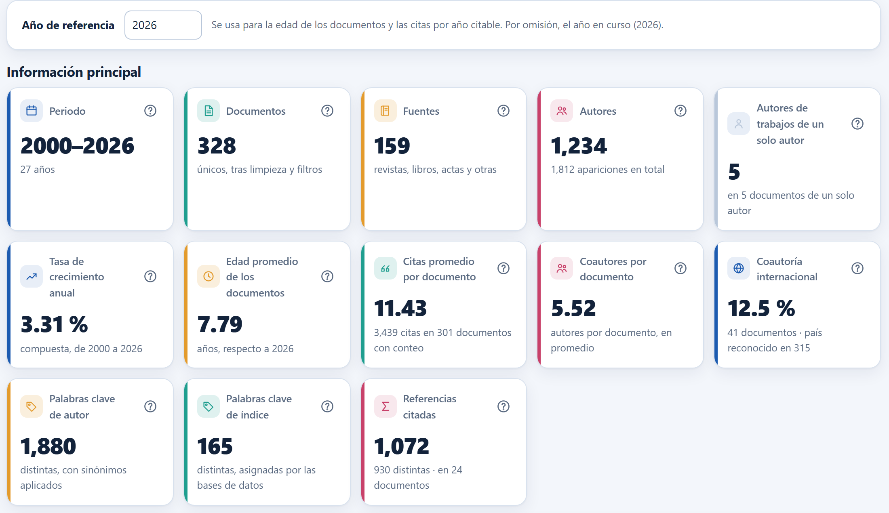
123456
Figura 5.1. La información principal de los 328 documentos del ejemplo, con el año de referencia en 2026.
1Año de referencia; cámbialo si tus datos son de otro año.
2Periodo de publicación y número de años que abarca.
3El signo ? de cada tarjeta abre su definición y su fórmula (figura 5.2).
4Tasa de crecimiento anual compuesta entre el primer y el último año.
5El subtítulo trae el detalle: citas totales y documentos que traen conteo.
6Referencias citadas: total, cuántas distintas y en cuántos documentos.
Tabla 5.1. Las trece tarjetas, con los valores del conjunto de ejemplo.
Tarjeta
Qué mide
Ejemplo
Se detalla en
Periodo
Primer y último año de publicación. Los documentos sin año no cuentan aquí, pero sí en los demás indicadores.
2000–2026 (27 años)
5.3
Documentos
Documentos únicos con los que trabajan todos los análisis.
328
capítulo 8
Fuentes
Revistas, libros y actas distintas, comparadas sin mayúsculas ni acentos y unidas por ISSN.
159
capítulo 6
Autores
Firmas distintas (apellido e iniciales, con las variantes que uniste). Las apariciones cuentan cada firma en cada documento.
1,234 · 1,812 apariciones
capítulo 7
Autores de trabajos de un solo autor
Personas que firman solas al menos un documento.
5 · en 5 documentos
capítulo 7
Tasa de crecimiento anual
Crecimiento compuesto que llevaría de los documentos del primer año a los del último.
3.31 %
5.3
Edad promedio
Años transcurridos desde la publicación, respecto al año de referencia.
7.79 años
5.1
Citas promedio por documento
Promedio de las citas que informan las bases, entre los documentos que traen conteo.
11.43 · 3,439 citas en 301
5.4
Coautores por documento
Autores por documento, en promedio.
5.52
capítulo 11
Coautoría internacional
Documentos con autores de más de un país, entre todos los documentos.
12.5 % · 41 de 328
capítulo 11
Palabras clave de autor
Términos distintos, con los sinónimos aplicados.
1,880
capítulo 9
Palabras clave de índice
Términos distintos asignados por las bases de datos.
165
capítulo 9
Referencias citadas
Referencias de las bibliografías: total, distintas y documentos que las traen.
1,072 · 930 distintas en 24
capítulo 10
La ayuda de cada indicador
El signo ? abre una ficha con cuatro partes: la definición en palabras, la fórmula, la lista de lo que significa cada símbolo y una nota de cómo interpretarlo, con la referencia del artículo donde se definió el indicador. Es la misma estructura en toda la app, y el texto de la ficha es el que conviene parafrasear en la sección de métodos.
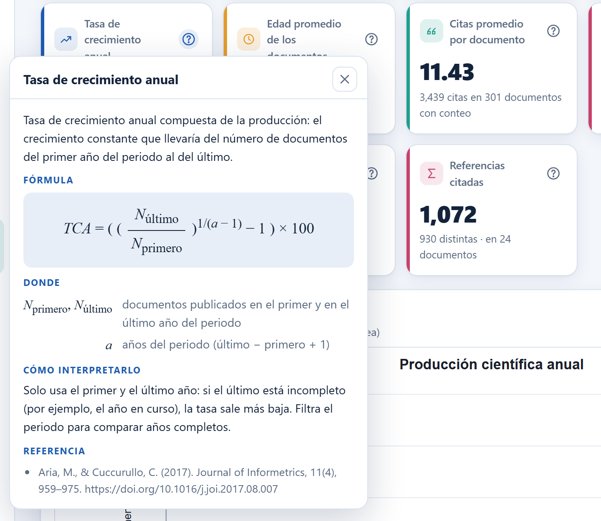
Figura 5.2. La ayuda de la tasa de crecimiento anual. Se cierra con la ✕, con Esc o pulsando fuera.
θTeoría en breve · leer las tarjetas juntas
Los números sueltos dicen poco; las razones entre ellos, mucho. Documentos ÷ fuentes mide la concentración editorial: en el ejemplo, 328 ÷ 159 = 2.1 documentos por fuente, una literatura muy dispersa (la ley de Bradford del capítulo 6 la ordena). Apariciones ÷ autores mide la productividad media: 1,812 ÷ 1,234 = 1.5 documentos por autor, típico de un campo con muchos participantes ocasionales (la ley de Lotka del capítulo 7 lo formaliza). Coautores por documento junto con los trabajos de un solo autor describe la forma de trabajar: 5.52 autores por documento y solo 5 trabajos individuales indican un campo experimental de equipos grandes.
iNota · tres tarjetas que dependen de lo que traigan tus archivos
Citas promedio. Solo entran los documentos con conteo de citas: en el ejemplo, 301 de 328. Si ninguna base trae el dato, la tarjeta lo dice en lugar de mostrar un cero engañoso.
Coautoría internacional. Necesita afiliaciones con país reconocido: en el ejemplo, 315 de 328. El porcentaje se calcula sobre todos los documentos, así que si muchos no traen afiliación, saldrá bajo; el subtítulo dice en cuántos se reconoció el país.
Referencias citadas. Solo 24 documentos del ejemplo traen su bibliografía, y de ahí salen 1,072 referencias (930 distintas). Es el mismo aviso del capítulo 3: sin referencias no hay cocitación ni acoplamiento.
5.3Producción científica anual
La primera figura cuenta cuántos documentos se publicaron cada año (barras, eje izquierdo) y cuántos van acumulados (línea, eje derecho). Las dos series responden a preguntas distintas: las barras muestran los altibajos —un congreso, un número especial, un año con financiamiento— y la línea muestra la forma del crecimiento: recta si el campo crece a ritmo constante, curvada hacia arriba si se acelera.
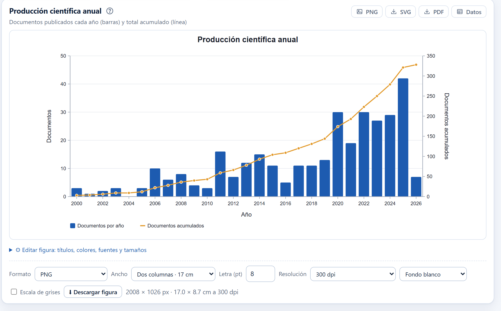
12345
Figura 5.3. La producción anual del ejemplo: de 3 documentos en 2000 a 42 en 2025, y 328 acumulados.
1Subtítulo: qué son las barras y qué es la línea.
2Descarga de la figura en PNG, SVG o PDF, y de los datos de la tabla.
3Leyenda: las barras usan el eje izquierdo y la línea, el derecho.
4Editar figura: títulos, colores, tipografías y tamaños.
5Formato, ancho de columna, tamaño de letra y resolución de la descarga.
▸Ejemplo · veintisiete años de producción
La serie del ejemplo empieza con 3 documentos en 2000 y 1 en 2001, se mantiene por debajo de 10 hasta 2005, tiene un primer salto en 2006 (10) y otro en 2011 (16), y despega a partir de 2020: 30, 19, 30, 27, 29 y 42 en 2025, el año más productivo. El último dato, 2026 con 7 documentos, corresponde a un año que apenas iba a la mitad cuando se descargaron los archivos. En total, 328 documentos acumulados. La serie completa se comprobó contando los años de los seis archivos fuera de la app.
La tasa de crecimiento y su trampa
La tarjeta Tasa de crecimiento anual resume la serie en un número: el crecimiento compuesto que llevaría de los documentos del primer año a los del último. Con el ejemplo completo, de 3 documentos en 2000 a 7 en 2026 en 27 años, da 3.31 %. Pero la fórmula solo mira los dos extremos, y el extremo derecho casi siempre está incompleto: si se filtra el periodo a 2020–2026, la misma fórmula va de 30 documentos a 7 y da −21.54 %, como si el tema se estuviera apagando, cuando en realidad 2025 fue su mejor año.
✓Regla de decisión · cómo informar el crecimiento
Situación
Qué hacer
El último año del periodo es el año en curso
Filtra hasta el año anterior y vuelve a leer la tasa; dilo así en métodos: «TCA 2000–2025».
El primer año tiene uno o dos documentos
La tasa se dispara por el denominador pequeño. Empieza el periodo en el primer año con producción estable y dilo.
La serie tiene altibajos grandes
Acompaña la tasa con la figura: un número no describe una serie irregular.
Quieres comparar dos temas
Usa el mismo periodo en los dos y verifica que las dos búsquedas se hicieron el mismo día.
La app no corrige el año incompleto por ti: la decisión es metodológica y debe quedar escrita.
5.4Citas promedio por año
La segunda figura mira las citas desde el año de publicación. Las barras dan las citas promedio por documento publicado ese año; la línea las divide entre los años citables (los años transcurridos desde la publicación hasta el año de referencia, contando el de publicación), para poder comparar años lejanos con años recientes.
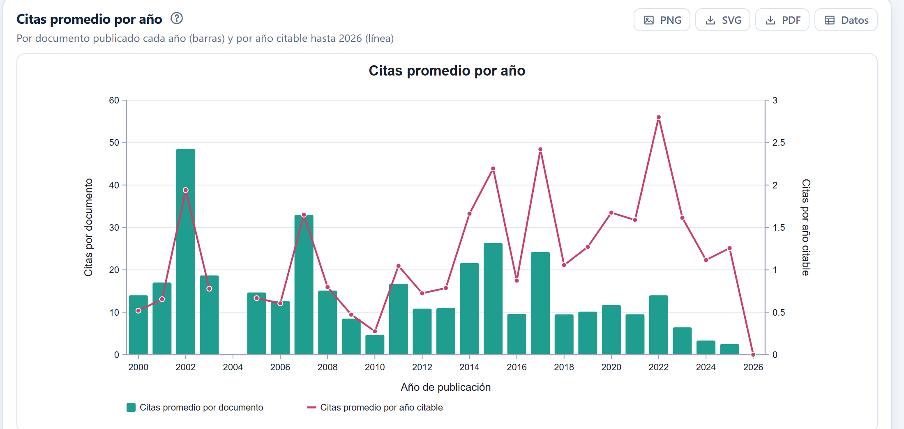
123
Figura 5.4. Citas promedio por año del ejemplo, con el año de referencia en 2026.
1Las barras usan el eje izquierdo (citas por documento) y la línea el derecho (citas por año citable).
2Un año con pocos documentos muy citados dispara el promedio: 2002 tiene 2 documentos con 97 citas, es decir 48.5 por documento.
3La línea corrige el efecto del tiempo y deja ver los años recientes con buena acogida.
θTeoría en breve · por qué un documento viejo parece mejor
Las citas se acumulan: un artículo de 2002 lleva veinticinco años recibiéndolas y uno de 2024 apenas dos. Por eso las barras de la izquierda casi siempre son más altas, y por eso no sirven para decidir qué año «produjo mejor ciencia». Dividir entre los años citables pone a todos los años en la misma escala de citas por año, que es lo que compara la línea. Aun así, quedan dos efectos que ninguna corrección arregla: los años con muy pocos documentos tienen promedios inestables (basta un artículo muy citado) y las citas siguen llegando después de la descarga, así que toda la figura es una fotografía de una fecha concreta.
!Importante · de dónde salen las citas
El número de citas es el que informa cada base de datos al exportar, no un conteo propio de la app: cada índice cuenta las citas que ve en su propia cobertura, así que el mismo documento puede traer números distintos según el archivo. Al fusionar duplicados (capítulo 4) se conserva el mayor. Los documentos sin conteo no entran en ningún promedio, y en el ejemplo son 27 de 328: casi todos del índice biomédico y de los RIS sin ese campo. Si necesitas citas comparables, usa una sola base o declara cuál aportó los conteos. El capítulo 8 ofrece una alternativa que no depende de las bases: las citas locales, las que recibe un documento dentro del propio conjunto.
5.5Tipos de documento
La tabla del final agrupa los documentos por tipo, con su porcentaje, sus citas promedio y las etiquetas originales que traían las bases. Esa última columna es la que permite auditar el agrupamiento: cada base escribe los tipos a su manera («Article», «Journal Article», «Conference paper», «Book chapter»), y la app los reduce a un conjunto común.
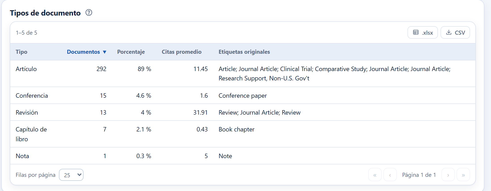
123
Figura 5.5. Los cinco tipos de documento del ejemplo, ordenados por número de documentos.
1Se ordena por cualquier columna y se descarga en hoja de cálculo o CSV.
2Porcentaje sobre los documentos del conjunto y citas promedio del tipo.
3Etiquetas originales de las bases que se agruparon en ese tipo.
▸Ejemplo · las revisiones se citan casi tres veces más
En el conjunto de las seis exportaciones, los artículos son el 89 % (292 documentos) con 11.45 citas promedio, y las revisiones, apenas el 4 % (13 documentos), promedian 31.91 citas. Es un patrón conocido de la bibliometría: las revisiones acumulan más citas que los artículos originales, así que unas pocas pueden mover el promedio general del conjunto. Las 15 ponencias de congreso (1.6 citas) y los 7 capítulos de libro (0.43) tiran del promedio hacia abajo. Si tu estudio compara impacto, conviene analizar los tipos por separado o dejar solo los artículos con el filtro de tipo de documento (capítulo 4).
iNota · qué tipos reconoce la app
Los tipos comunes son artículo, revisión, conferencia, capítulo de libro, libro, carta, editorial, fe de erratas, nota, tesis, informe, datos, preprint y retractado; lo que no encaja queda como Otro, con su etiqueta original a la vista. Un documento retractado que siga contando como artículo en tu conjunto es un problema de la exportación, no de la app: búscalo por su etiqueta original en esta tabla.
5.6Cuando hay filtros o faltan datos
Con filtros activos, la pantalla avisa arriba de las tarjetas cuántos documentos está usando y todos los indicadores se recalculan. Es la mejor manera de ver el efecto de una decisión: filtra, mira las tarjetas, quita el filtro y compara.
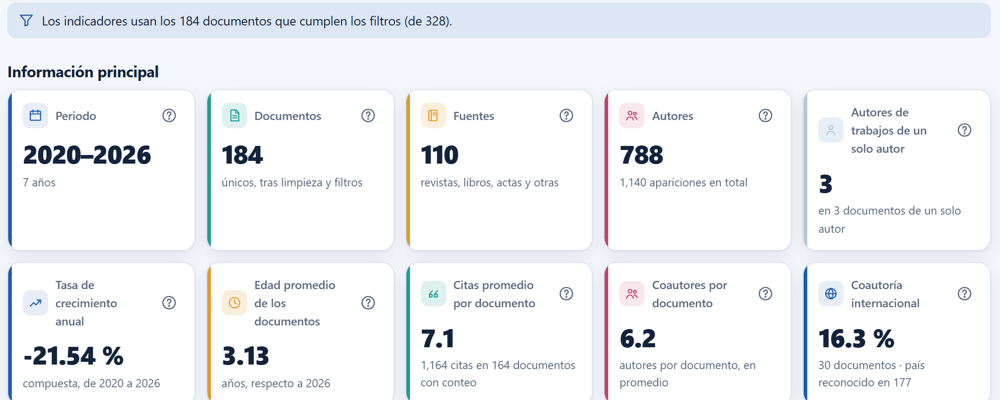
123
Figura 5.6. El mismo conjunto con el filtro «de 2020 en adelante»: 184 documentos.
1Aviso: los indicadores usan solo los documentos que cumplen los filtros.
2El periodo se ajusta al filtro y con él la edad promedio (3.13 años).
3La tasa se vuelve negativa porque el último año del periodo está incompleto.
Tabla 5.2. Indicadores que salen raros y qué los explica.
Lo que ves
Causa habitual
Qué hacer
Tasa de crecimiento negativa en un tema que crece
El último año del periodo está incompleto.
Filtrar hasta el año anterior (sección 5.3).
Los registros no traen número de citas
Ninguna exportación trae ese campo.
Volver a exportar de un índice de citas, o usar las citas locales del capítulo 8.
Coautoría internacional del 0 %
Los registros no traen afiliaciones, o no se reconoció el país.
Revisar la pestaña Instituciones y países (sección 4.5).
Muchos más autores de los esperados
Variantes de nombre sin unir.
Revisar la pestaña Autores (sección 4.4).
Más fuentes que documentos por revista
Es un tema disperso, o hay nombres de fuente escritos de varias formas.
Ver la tabla completa de fuentes (capítulo 6).
Un año con citas promedio altísimas
Pocos documentos y uno muy citado.
Mirar el número de documentos de ese año en la figura anterior.
Ningún documento cumple los filtros
Los filtros globales dejaron el conjunto vacío.
Pulsar Revisar los filtros, que lleva directo a la pestaña.
5.7Llevarse la figura y los datos
Las dos figuras de esta pantalla —y todas las de la app— traen la misma barra de herramientas. PNG, SVG y PDF descargan la imagen; Datos descarga la tabla que la alimenta, para revisarla o rehacer la figura en otro programa. Debajo, Editar figura despliega los títulos, los colores, la tipografía y los tamaños, y la última fila fija el formato de la descarga: ancho de una o dos columnas en centímetros, tamaño de letra en puntos, resolución en dpi, fondo blanco o transparente y escala de grises. El capítulo 13 explica esa barra a fondo y cómo preparar las figuras para una revista.
Tabla 5.3. Columnas que descarga Datos en cada figura.
Figura
Columnas
Producción científica anual
Año · Documentos · Documentos acumulados.
Citas promedio por año
Año · Documentos · Documentos con número de citas · Citas · Citas promedio por documento · Años citables · Citas promedio por año citable.
iNota · lo que el informe escribe solo
No hace falta copiar estos números a mano: el informe del capítulo 13 arma la tabla de información principal con las trece tarjetas, incrusta las dos figuras y redacta el párrafo de métodos con el periodo, el número de documentos, las bases consultadas y los filtros aplicados. Las tarjetas de esta pantalla son, además, las que más se citan en el resumen de un artículo bibliométrico.
El panorama dice cuánto hay y a qué ritmo; los capítulos siguientes dicen dónde está. El próximo abre las Fuentes: las revistas más productivas, la ley de Bradford y el impacto de cada una.
6
Capítulo seis
Fuentes
Dónde se publica el tema: las revistas, libros y actas más productivas, el núcleo de Bradford que concentra un tercio de la literatura, el impacto de cada fuente dentro del conjunto con los índices h, g y m, y la dinámica que muestra qué revistas siguen activas y cuáles dejaron el tema.
6.1La pantalla Fuentes y sus tarjetas
6.2Las fuentes más productivas
6.3La ley de Bradford
6.4Impacto por fuente
6.5Dinámica de producción
6.6La tabla completa
Saber cuántos documentos hay es el principio; saber dónde están cambia decisiones concretas: en qué revistas buscar lo que falta, cuáles conviene vigilar, dónde tiene sentido enviar tu propio trabajo y qué fuentes citar como referencia del campo. La pantalla Fuentes responde eso con cinco pestañas que van de lo descriptivo a lo analítico.
6.1La pantalla Fuentes y sus tarjetas
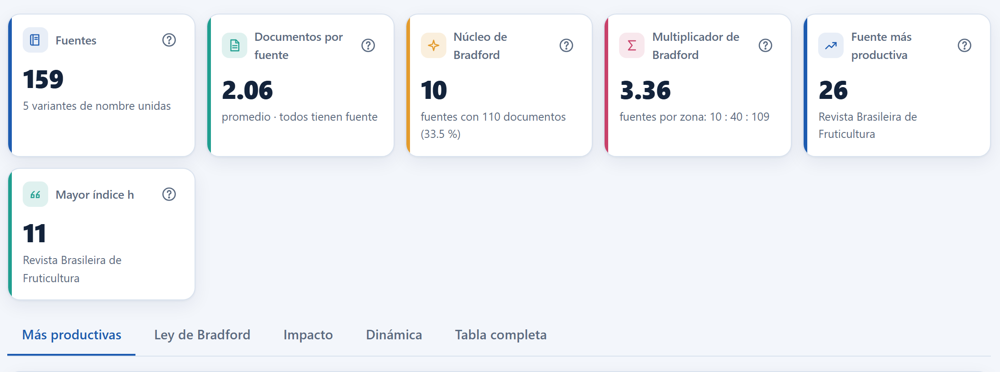
123456
Figura 6.1. Las tarjetas de la pantalla Fuentes con los 328 documentos del ejemplo.
1Fuentes distintas y cuántas variantes de nombre se unieron.
2Documentos por fuente, en promedio.
3Núcleo de Bradford: las fuentes que publican el primer tercio.
4Multiplicador de Bradford y fuentes de cada zona.
5Fuente con el mayor índice h dentro del conjunto.
6Las cinco pestañas de la pantalla.
Tabla 6.1. Las seis tarjetas de Fuentes.
Tarjeta
Qué mide
Ejemplo
Fuentes
Revistas, libros y actas distintas, ya unificadas.
159 · 5 variantes unidas
Documentos por fuente
Promedio de documentos por fuente; cerca de 1 indica un tema muy disperso.
2.06
Núcleo de Bradford
Fuentes de la zona 1: publican cerca de un tercio de los documentos.
10 fuentes · 110 documentos (33.5 %)
Multiplicador de Bradford
Cuántas veces crece el número de fuentes de una zona a la siguiente.
3.36 · zonas 10 : 40 : 109
Fuente más productiva
La fuente con más documentos del conjunto.
26 · Revista Brasileira de Fruticultura
Mayor índice h
La fuente con más impacto dentro del conjunto.
11 · la misma revista
iNota · cuándo dos nombres son la misma fuente
Los nombres se comparan sin mayúsculas, acentos ni puntuación, y «&» cuenta como «and»: Revista Brasileira de Engenharia Agrícola e Ambiental y …Agricola e Ambiental son la misma. Además, dos escrituras que comparten un ISSN se unen aunque se llamen distinto, que es como Plants y Plants (Basel, Switzerland) quedan juntas. En el ejemplo se unieron 5 variantes; la pestaña Tabla completa muestra cuáles (sección 6.6). Lo que la app no puede unir sola es una abreviatura sin ISSN («Rev. Bras. Frutic.») con el nombre completo: aparecerían como dos fuentes.
6.2Las fuentes más productivas
La primera pestaña ordena las fuentes por número de documentos y las dibuja en barras horizontales, coloreadas por su zona de Bradford. El control de arriba elige cuántas entran en la figura, de 5 a 50.
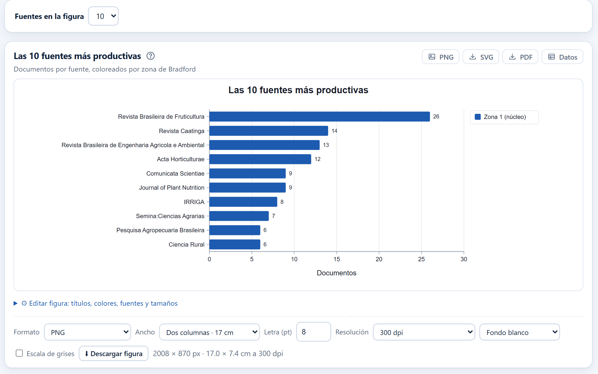
1234
Figura 6.2. Las diez fuentes más productivas del ejemplo; todas pertenecen a la zona núcleo.
1Cuántas fuentes entran en la figura.
2Subtítulo: las barras se colorean por zona de Bradford.
3Descarga de la figura y de los datos que la alimentan.
4Leyenda de zonas; aquí solo aparece la zona 1 porque las diez primeras son el núcleo.
▸Ejemplo · una literatura repartida entre 159 revistas
Las diez fuentes más productivas del ejemplo publican entre 26 y 6 documentos: Revista Brasileira de Fruticultura 26 (el 7.9 % del conjunto), Revista Caatinga 14, Revista Brasileira de Engenharia Agrícola e Ambiental 13, Acta Horticulturae 12, Comunicata Scientiae y Journal of Plant Nutrition 9, IRRIGA 8, Semina: Ciências Agrárias 7, y Pesquisa Agropecuária Brasileira y Ciência Rural 6. Del otro lado, 111 de las 159 fuentes aportan un solo documento: el tema está muy repartido y la revista más productiva apenas concentra uno de cada trece documentos. Todas estas cifras se comprobaron agrupando las fuentes fuera de la app.
6.3La ley de Bradford
θTeoría en breve · el núcleo y las tres zonas
Bradford (1934) observó que, si se ordenan las revistas de la más a la menos productiva sobre un tema y se parten los documentos en tres montones iguales, el primer tercio sale de un puñado de revistas, el segundo necesita bastantes más y el tercero, muchísimas. El número de fuentes de cada zona crece en progresión casi geométrica, 1 : k : k², y ese k es el multiplicador de Bradford.
La app parte las zonas donde el acumulado se acerca más a un tercio y a dos tercios de los documentos, estima k como el promedio de las dos razones entre zonas consecutivas, y dibuja el acumulado contra el rango en escala logarítmica: si la colección sigue la ley, esa curva se ve casi recta en su parte central. La zona 1 es el núcleo: las revistas que más conviene revisar, vigilar y considerar para publicar.
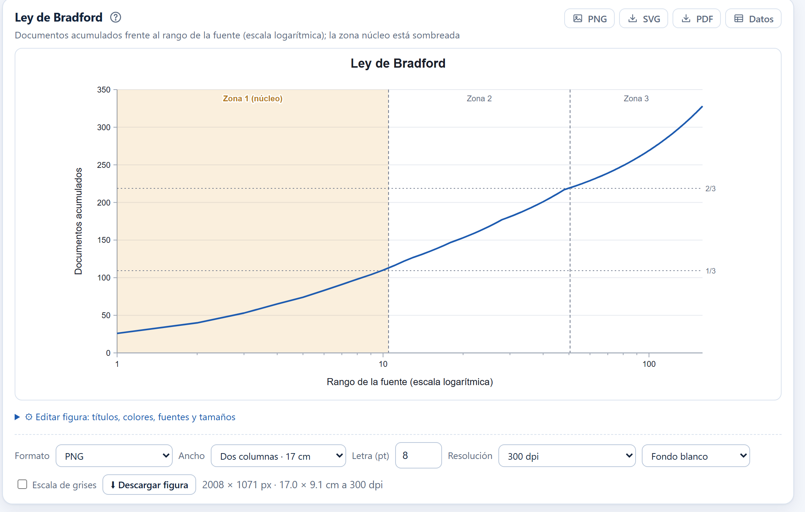
1234
Figura 6.3. La curva de Bradford del ejemplo, con la zona núcleo sombreada y los cortes en un tercio y dos tercios.
1Subtítulo: la zona núcleo está sombreada.
2Zona 1: las fuentes que publican el primer tercio de los documentos.
3Líneas de referencia en un tercio y dos tercios del total.
4El eje del rango es logarítmico: por eso la curva de una colección que sigue la ley se ve casi recta.
Debajo de la figura, dos tablas ponen números a las zonas: cuántas fuentes y cuántos documentos hay en cada una, con sus porcentajes y la razón entre zonas consecutivas, y después la lista de fuentes con su zona, su rango y su acumulado.
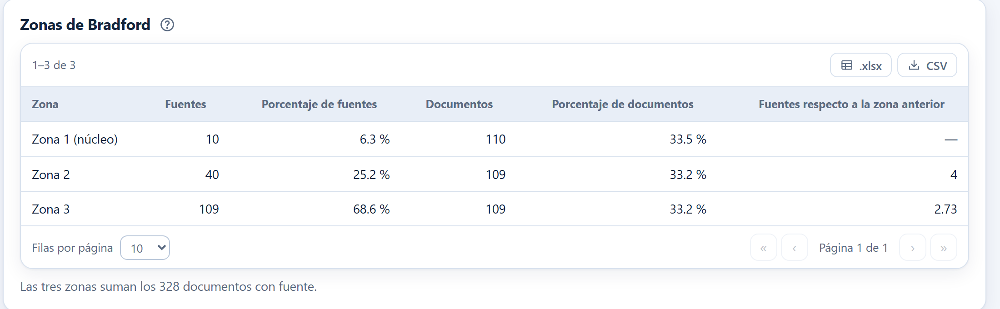
12
Figura 6.4. Las tres zonas del ejemplo: 10, 40 y 109 fuentes para un tercio de los documentos cada una.
1Fuentes y documentos de cada zona, con sus porcentajes.
2Las tres zonas suman todos los documentos que tienen fuente.
▸Ejemplo · diez revistas para un tercio de la literatura
En el conjunto de las seis exportaciones, 10 fuentes (el 6.3 %) publican 110 documentos, el 33.5 %; las 40 de la zona 2 publican otros 109 y las 109 de la zona 3, los 109 restantes. Las razones entre zonas son 40 ÷ 10 = 4.00 y 109 ÷ 40 = 2.73, así que el multiplicador estimado es 3.36. Que las dos razones no sean iguales indica que la colección se ajusta solo a grandes rasgos a la ley, algo esperable con 159 fuentes y muchas de un solo documento. Las tres zonas y sus conteos se reprodujeron fuera de la app aplicando la misma regla de corte.
✓Regla de decisión · qué hacer con el núcleo
Si tu objetivo es…
usa el núcleo así…
no perderte literatura del tema
revisa a mano los índices de esas revistas y activa alertas en ellas; es donde caerá lo nuevo.
elegir dónde enviar tu artículo
mira el núcleo junto con el impacto (sección 6.4) y con la dinámica (6.5): una revista del núcleo que dejó de publicar del tema ya no es la mejor opción.
describir el campo en un artículo
informa las tres zonas, el multiplicador y el porcentaje de documentos del núcleo, citando a Bradford (1934).
comparar dos temas o dos periodos
compara el tamaño del núcleo en porcentaje de fuentes, no en número: depende de cuántas fuentes haya en total.
Los cortes son discretos: con pocas fuentes, mover un documento de lugar puede cambiar el tamaño del núcleo.
6.4Impacto por fuente
Publicar mucho no es publicar lo que más se cita. La pestaña Impacto calcula, para cada fuente y solo con los documentos del conjunto, cuatro medidas: los índices h, g y m y las citas totales. El selector de arriba elige cuál se dibuja, cuántas fuentes entran y el año de referencia del índice m, que es el mismo del panorama general.
Tabla 6.2. Las cuatro medidas de impacto de la pestaña.
Medida
Qué es
Qué aporta
Índice h
El mayor número h tal que h documentos de la fuente tienen al menos h citas cada uno (Hirsch, 2005).
Resume productividad e impacto en un número; no se deja llevar por un solo artículo muy citado.
Índice g
El mayor g tal que los g documentos más citados suman al menos g² citas (Egghe, 2006).
Sí premia los artículos muy citados: siempre es mayor o igual que el h.
Índice m
El índice h dividido entre los años transcurridos desde el primer documento de la fuente en el conjunto.
Compara fuentes que llevan tiempos distintos en el tema.
Citas totales
Suma de las citas de los documentos de la fuente.
Tamaño bruto del impacto; lo domina la fuente con más documentos.
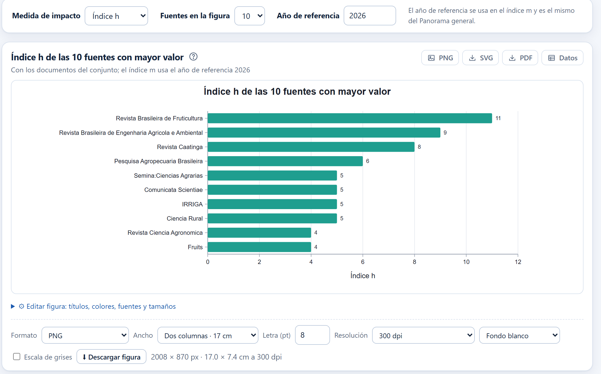
1234
Figura 6.5. Índice h de las diez fuentes con mayor valor en el conjunto del ejemplo.
1La barra de controles: medida de impacto, cuántas fuentes entran y año de referencia del índice m.
2Subtítulo: los índices se calculan con los documentos del conjunto.
3La fuente más productiva es también la de mayor índice h (11).
4Una revista con 6 documentos alcanza un índice h de 6: todos sus documentos están bien citados.
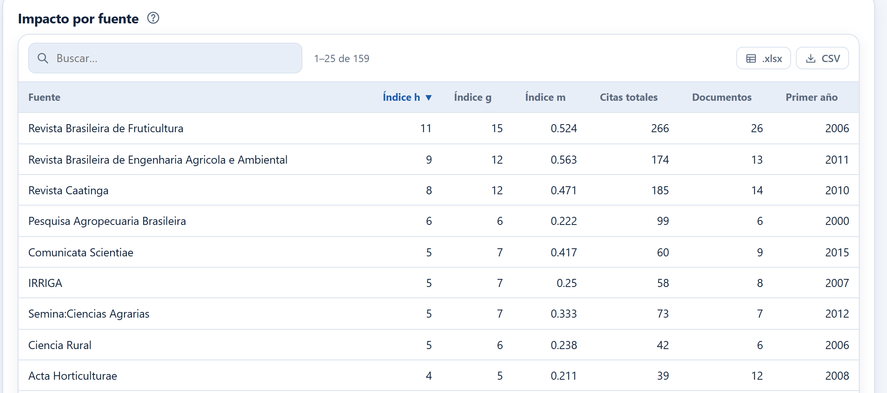
12
Figura 6.6. La tabla de impacto, ordenada por índice h.
1Cada fuente con sus tres índices, sus citas totales, sus documentos y su primer año en el conjunto.
2Se ordena por cualquier columna y se descarga completa.
▸Ejemplo · productividad no es impacto
Revista Brasileira de Fruticultura encabeza las dos listas: 26 documentos, 266 citas, índice h de 11 y g de 15. Pero enseguida el orden cambia. Revista Brasileira de Engenharia Agrícola e Ambiental, tercera en documentos (13), es segunda en impacto (h 9, 174 citas) y tiene el mayor índice m del grupo, 0.563, porque lleva menos tiempo en el tema. Pesquisa Agropecuária Brasileira aporta solo 6 documentos y alcanza un índice h de 6: todos sus artículos del conjunto se citan bien. En el otro extremo, Acta Horticulturae es la cuarta en documentos (12) pero su índice h es 4 y suma 39 citas: son actas de congreso, que se citan poco (capítulo 5, tabla de tipos). Los tres índices de las diez primeras fuentes se recalcularon fuera de la app con las mismas definiciones y coinciden.
!Importante · qué significan estos índices y qué no
El índice h que ves aquí es el de la revista dentro de tu conjunto: se calcula solo con los documentos de tu búsqueda y con las citas que informan tus archivos. No es el índice h de la revista completa, ni su factor de impacto, ni sustituye a los indicadores oficiales de las bases de datos. Dicho así es útil y honesto: «en esta colección de 328 documentos, tal revista tiene un índice h de 11». Además, las fuentes cuyos documentos no traen conteo de citas no aparecen en esta pestaña; si ninguna lo trae, la app lo avisa y la pestaña queda vacía.
6.5Dinámica de producción
Las tarjetas y las barras son fotografías; esta pestaña es la película. Dibuja, para las fuentes más productivas, cuántos documentos llevan acumulados cada año: una línea que sube con pendiente constante es una revista que publica del tema con regularidad, una que se dispara indica un número especial y una que se aplana es una revista que dejó el tema.
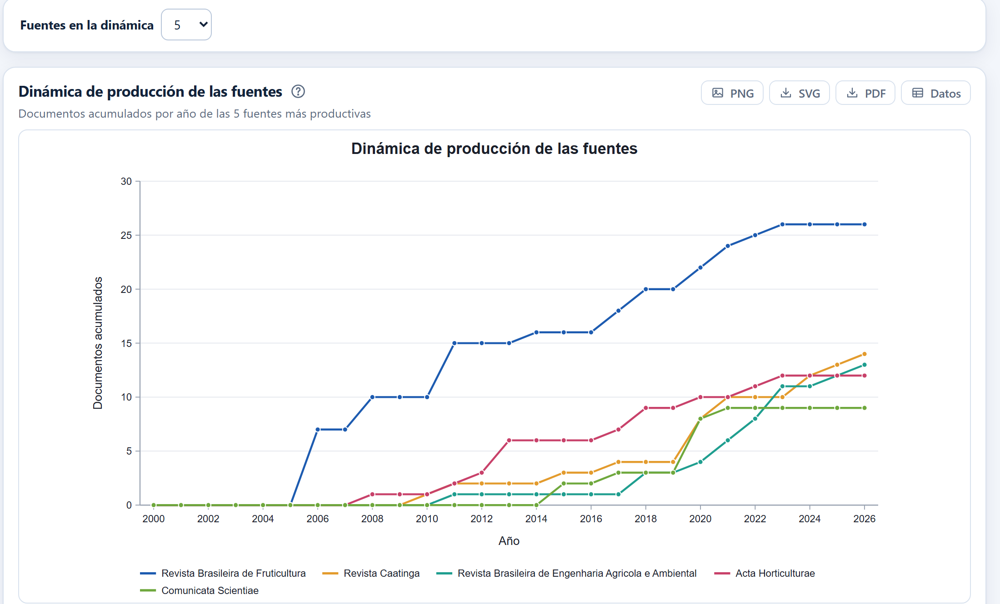
123
Figura 6.7. Documentos acumulados por año de las cinco fuentes más productivas del ejemplo.
1Cuántas fuentes entran en la figura (de 5 a 10).
2Cada línea es el acumulado de una fuente sobre los años de todo el conjunto.
3Una línea que se aplana: esa fuente dejó de publicar sobre el tema.
▸Ejemplo · la revista más productiva se detuvo en 2023
La línea de Revista Brasileira de Fruticultura sube con fuerza desde 2006, llega a 26 documentos y se aplana: su último documento del conjunto es de 2023. Mientras tanto, Revista Caatinga (2010–2026) y Revista Brasileira de Engenharia Agrícola e Ambiental (2011–2026) siguen subiendo hasta el final del periodo. Si el objetivo fuera elegir dónde enviar un artículo hoy, la lista de «más productivas» apuntaría a una revista que ya no publica del tema y la dinámica lo corrige. Los años primero y último de cada fuente se comprobaron fuera de la app.
6.6La tabla completa
La última pestaña reúne todo en una sola tabla: una fila por fuente y dieciséis columnas con su identidad, su producción, su zona y su impacto. Se ordena por cualquier columna, se busca por nombre y se descarga entera en hoja de cálculo o en CSV. Como es más ancha que la pantalla, se desplaza a lo largo.
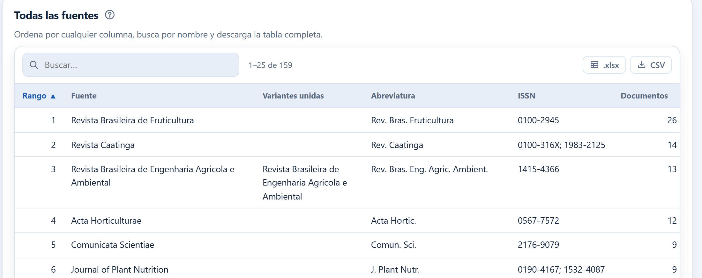
123
Figura 6.8. Las primeras filas de la tabla completa; a la derecha continúan las columnas de producción e impacto.
1159 fuentes, de 25 en 25.
2Las variantes de nombre que se unieron en esa fuente.
3Abreviatura e ISSN, cuando la exportación los trae.
Tabla 6.3. Las columnas de la tabla completa.
Columnas
Qué traen
Rango · Fuente · Variantes unidas · Abreviatura · ISSN
Identidad de la fuente: su posición por documentos, el nombre preferido, las otras escrituras que se unieron y los identificadores que traían los archivos.
Documentos · Porcentaje · Porcentaje acumulado · Zona
Producción y lugar en las zonas de Bradford.
Citas totales · Citas promedio · Índice h · Índice g · Índice m
Impacto dentro del conjunto; quedan vacías si la fuente no trae conteo de citas.
Primer año · Último año
Periodo en que esa fuente publicó del tema; la diferencia con el año en curso es la señal de la sección 6.5.
iNota · tres usos prácticos de esta tabla
Buscar una revista concreta. Escribe parte del nombre en el buscador para ver cuántos documentos aporta, en qué zona está y desde cuándo publica del tema.
Auditar la unificación. Ordena por Variantes unidas para ver qué escrituras se juntaron, y por Documentos ascendente para detectar fuentes con un solo documento que en realidad son variantes sin ISSN de otra.
Llevarla al artículo. La descarga en hoja de cálculo conserva las dieciséis columnas; casi siempre basta con las diez primeras fuentes y las columnas de documentos, porcentaje, zona, citas e índice h.
Con las fuentes ya sabes dónde se publica el tema. El capítulo siguiente pregunta quién lo publica: los autores más productivos y más citados, la ley de Lotka, sus índices de impacto y los países e instituciones desde donde trabajan.
7
Capítulo siete
Autores
Quién produce la literatura: los autores más productivos con conteo completo y fraccionado, su trayectoria en el tiempo, la ley de Lotka con su prueba de bondad de ajuste, el impacto de cada autor dentro del conjunto y las instituciones y países desde donde se publica, con su colaboración internacional y su mapa.
7.1La pantalla Autores y sus tarjetas
7.2Los autores más productivos
7.3Producción en el tiempo
7.4La ley de Lotka
7.5Impacto por autor
7.6Instituciones
7.7Países y colaboración internacional
La pantalla Autores pasa de las revistas a las personas. Sus seis pestañas responden a preguntas que cualquier estudio bibliométrico acaba haciendo: quién publica más, desde cuándo, si la productividad se reparte como en otros campos, quién tiene más impacto y desde qué instituciones y países se hace la investigación.
iNota · los datos de este capítulo
Las figuras de este capítulo se tomaron con los datos de ejemplo: 300 documentos sobre la nutrición mineral del maracuyá, del catálogo bibliográfico abierto, que traen autores con afiliación y conteo de citas. Puedes cargarlos con un clic desde la portada (Inicio›Cargar datos de ejemplo) y reproducir cada pantalla. Todas las cifras que se citan se comprobaron leyendo ese archivo fuera de la app.
7.1La pantalla Autores y sus tarjetas
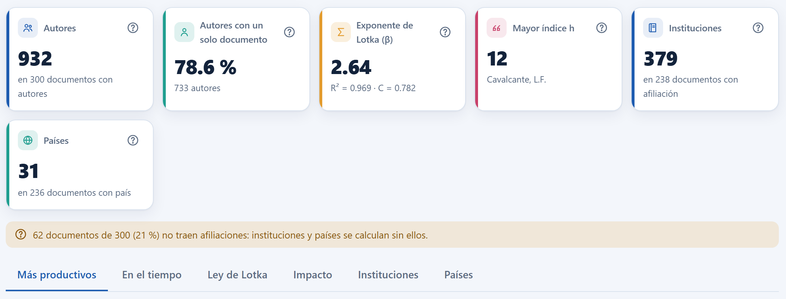
123456
Figura 7.1. Las tarjetas de Autores con los datos de ejemplo.
1Autores distintos, identificados por apellido e iniciales.
2Proporción de autores que firman un solo documento.
3Exponente de Lotka estimado, con su ajuste (sección 7.4).
4El autor con mayor índice h dentro del conjunto.
5Aviso cuando una parte de los documentos no trae afiliaciones.
6Las seis pestañas de la pantalla.
Tabla 7.1. Las seis tarjetas de Autores.
Tarjeta
Qué mide
Ejemplo
Autores
Autores distintos en los documentos que traen autores.
932 en 300 documentos
Autores con un solo documento
Qué parte de los autores aparece una sola vez; la base de la ley de Lotka.
78.6 % (733 autores)
Exponente de Lotka (β)
Qué tan rápido cae la proporción de autores al aumentar su número de documentos.
2.64 · R² = 0.969
Mayor índice h
El autor con más impacto dentro del conjunto.
12 · Cavalcante, L.F.
Instituciones
Instituciones distintas en las afiliaciones.
379 en 238 documentos
Países
Países distintos de autores y afiliaciones.
31 en 236 documentos
!Importante · el aviso de afiliaciones
Cuando al menos una quinta parte de los documentos no trae afiliaciones, la pantalla lo dice arriba de las pestañas: en el ejemplo, 62 de 300 documentos (21 %). Las pestañas de autores, Lotka e impacto no se ven afectadas, pero las de instituciones y países se calculan sin esos documentos. Si tu estudio compara países, completa las afiliaciones con otra exportación antes de sacar conclusiones (capítulo 3).
7.2Los autores más productivos
La primera pestaña ordena a los autores por número de documentos y dibuja los primeros. El selector Conteo cambia entre dos maneras de contar, y cambia la lista.
θTeoría en breve · conteo completo y conteo fraccionado
En el conteo completo, cada autor suma 1 por cada documento que firma, sin importar cuántos coautores tenga. Es el más intuitivo y el más usado, pero premia a quien firma en equipos grandes: un artículo de diez autores reparte diez documentos. En el conteo fraccionado, cada documento reparte exactamente 1 entre sus autores: con tres autores, cada uno suma 1/3. La suma de todos los autores da el número de documentos, y la lista favorece a quien publica con pocos coautores.
conteo fraccionado del autor a = Σd 1 ⁄ nd
donde la suma recorre los documentos d que firma el autor y nd es el número de autores de cada uno.
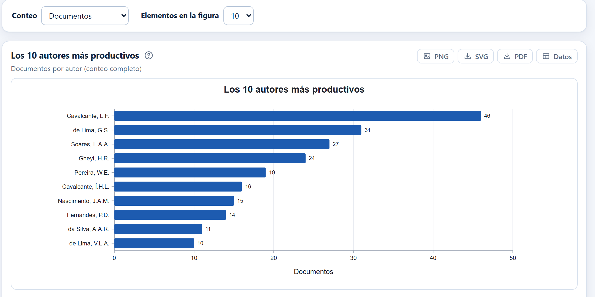
123
Figura 7.2. Los diez autores más productivos del ejemplo, con conteo completo.
1Tipo de conteo y cuántos autores entran en la figura.
2Subtítulo: indica el conteo en uso.
3El autor más productivo firma 46 de los 300 documentos.
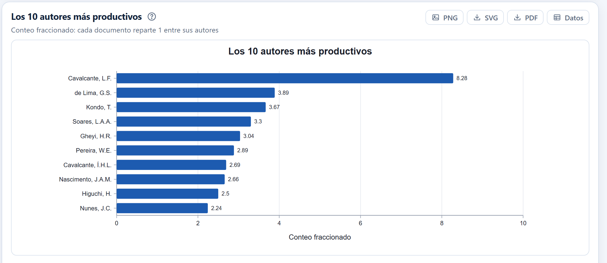
12
Figura 7.3. La misma figura con conteo fraccionado: la lista cambia.
1Subtítulo: cada documento reparte 1 entre sus autores.
2Un autor con solo 8 documentos sube al tercer lugar porque publica con pocos coautores.
▸Ejemplo · dos listas, dos lecturas
Con conteo completo, la lista la encabeza Cavalcante, L.F. con 46 documentos, seguido de de Lima, G.S. (31), Soares, L.A.A. (27), Gheyi, H.R. (24) y Pereira, W.E. (19): un grupo brasileño que publica en equipos grandes. Con conteo fraccionado, el primero sigue siéndolo (8.28), pero en tercer lugar aparece Kondo, T., que con solo 8 documentos suma 3.67 porque firma con uno o dos coautores. Ninguna de las dos listas es «la correcta»: la primera mide participación y la segunda, aporte individual. Las dos se reprodujeron fuera de la app con los mismos valores.
iNota · un autor es su apellido y sus iniciales
La app identifica a cada autor por su apellido y sus iniciales, con las variantes que uniste en Limpieza y filtros (sección 4.4). Es la única regla que funciona con todas las bases, porque la mayoría no trae identificadores de autor. Tiene dos consecuencias: dos personas con el mismo apellido e iniciales cuentan como una, y una persona escrita de dos formas cuenta como dos hasta que las unes. En el ejemplo, el catálogo abierto reparte a Cavalcante, L.F. entre tres identificadores propios: uno con 45 documentos, otro con 1 y un tercero con 3 en el que el nombre viene invertido, «Ferreira Cavalcante Lourival». Por nombre, la app reúne los dos primeros en 46 documentos; el tercero queda aparte como Lourival, F.C., porque ningún programa puede saber que ese «apellido» es un nombre de pila. Si un autor clave parece tener menos documentos de los esperados, busca sus variantes en la tabla de abajo. Debajo de la figura, la tabla Todos los autores lista a cada autor con sus documentos, su conteo fraccionado, sus citas, su primer y su último año, y su institución y su país más frecuentes.
7.3Producción en el tiempo
La segunda pestaña dibuja la trayectoria de los autores más productivos: una fila por autor y una burbuja por cada año en que publicó. El tamaño de la burbuja es el número de documentos de ese año y el color, las citas por año que recibieron esos documentos hasta el año de referencia; una línea gris une el primer y el último año de cada autor.
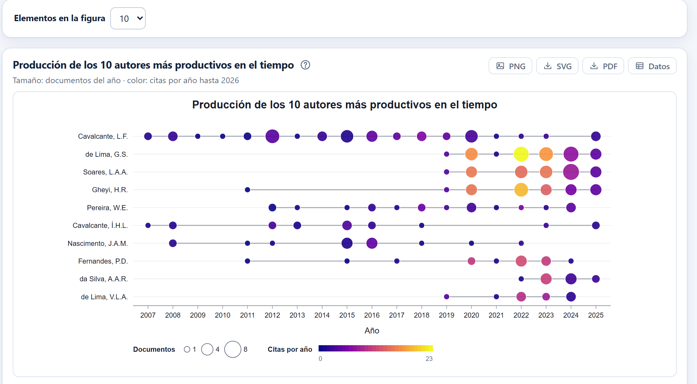
123
Figura 7.4. Trayectorias de los diez autores más productivos del ejemplo entre 2007 y 2025.
1Cuántos autores entran en la figura.
2Subtítulo: el tamaño son documentos y el color, citas por año.
3Escalas de tamaño y de color; los colores claros son los años más citados.
▸Ejemplo · un veterano y un grupo que llegó en 2019
La figura separa dos generaciones. Cavalcante, L.F. publica sin interrupción desde 2007: su fila es larga y de colores oscuros, porque la mayoría de sus documentos lleva años acumulando citas a un ritmo moderado. de Lima, G.S., Soares, L.A.A. y Gheyi, H.R. aparecen juntos a partir de 2019, casi siempre en los mismos años, y sus burbujas de 2020 a 2023 son las más claras de la figura: en poco tiempo sus documentos se citan más por año que los del autor más veterano. Esa lectura se confirma en la sección 7.5 con el índice m.
7.4La ley de Lotka
θTeoría en breve · muchos publican una vez, pocos publican mucho
Lotka (1926) observó que la proporción de autores con x documentos cae como una potencia de x:
f(x) = C ⁄ xβ
En su forma clásica, β = 2 y C = 6/π² ≈ 0.6079: alrededor del 61 % de los autores publica un solo documento, la cuarta parte de esa cifra publica dos, la novena parte publica tres, y así. La app estima β y C por mínimos cuadrados sobre los logaritmos, usando x = 1, 2, 3… hasta el primer valor sin autores, porque más allá de ese punto los pocos autores muy productivos aparecen de uno en uno y aplanan la recta (Clauset, Shalizi y Newman, 2009). Después compara la distribución observada con la ley clásica mediante la prueba de Kolmogorov-Smirnov: si la diferencia máxima entre las proporciones acumuladas, D, supera el valor crítico 1.36/√N, la colección no sigue la ley con β = 2 al 5 %. La constante del ajuste se calcula como propone Pao (1985).
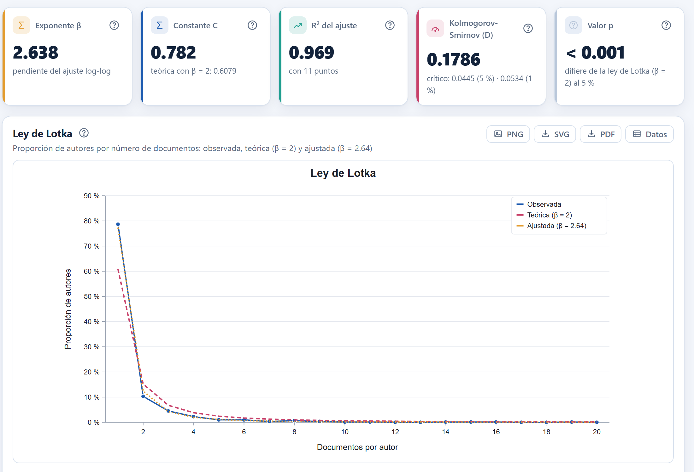
123
Figura 7.5. La ley de Lotka en los datos de ejemplo: 932 autores. Las cinco tarjetas de arriba se describen en la tabla 7.2.
1Las tres curvas: observada, teórica con β = 2 y ajustada.
2La ajustada se superpone casi por completo a la observada.
3El 78.6 % de los autores firma un solo documento; la ley clásica esperaba el 60.8 %.
Tabla 7.2. Las cinco tarjetas de la ley de Lotka.
Tarjeta
Qué es
Ejemplo
Exponente β
Pendiente del ajuste; mayor que 2 indica todavía más autores ocasionales que en la ley clásica.
2.638
Constante C
Proporción ajustada de autores con un documento; la clásica es 0.6079.
0.782
R² del ajuste
Qué tan bien se alinean los puntos en escala logarítmica, y con cuántos.
0.969 con 11
Kolmogorov-Smirnov (D)
Diferencia máxima entre las acumuladas observada y teórica, con sus valores críticos.
0.1786 (crítico 0.0445)
Valor p
Probabilidad de una diferencia así si la ley clásica fuera cierta, con su veredicto.
< 0.001
▸Ejemplo · una literatura con más autores ocasionales de lo esperado
De los 932 autores del ejemplo, 733 firman un solo documento (78.6 %), 96 firman dos y 42 firman tres; la ley clásica esperaba el 60.8 %, el 15.2 % y el 6.8 %. El ajuste da β = 2.638 con R² = 0.969 sobre los once primeros valores, y la prueba de Kolmogorov-Smirnov rechaza la ley clásica: D = 0.1786, cuatro veces el valor crítico al 5 % (0.0445). En cambio, la ley con el exponente ajustado describe muy bien los datos: en la figura, su curva se confunde con la observada. La lectura es que el tema atrae a muchos participantes que publican una vez —estudiantes, colaboradores de un solo proyecto— alrededor de un núcleo pequeño muy productivo. El número de autores por documento, β, C, R² y D se reprodujeron fuera de la app con el mismo resultado.
✓Regla de decisión · cómo informar la ley de Lotka
Si el resultado es…
escribe…
D menor que el crítico (no se rechaza β = 2)
«La productividad de los autores se ajusta a la ley de Lotka (D = …, p = …)».
D mayor que el crítico, pero R² alto
«La distribución sigue una ley de potencia con β = … (R² = …), más pronunciada que la de Lotka (D = …, p < …)».
R² bajo o menos de cuatro puntos en el ajuste
No informes β como resultado: la colección es pequeña o irregular para estimarlo.
35 autores o menos
La app avisa que los valores críticos no son confiables; describe la distribución sin la prueba.
Con muchos autores la prueba rechaza casi siempre la forma clásica: β = 2 es una referencia, no una ley física. Lo informativo es el valor de β y su comparación con otros campos.
7.5Impacto por autor
La pestaña Impacto funciona igual que la de fuentes (sección 6.4): los índices h, g y m y las citas totales de cada autor, calculados solo con sus documentos del conjunto, con un selector de medida, el número de autores y el año de referencia del índice m. Debajo, la tabla trae los cuatro valores de todos los autores.
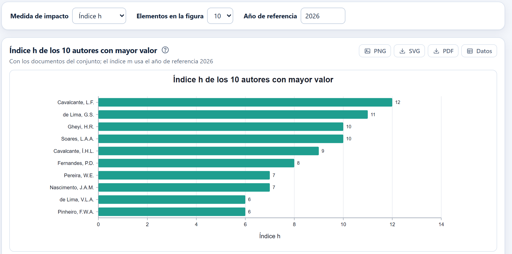
123
Figura 7.6. Índice h de los diez autores con mayor valor en el conjunto de ejemplo.
1Medida de impacto, número de autores y año de referencia del índice m.
2Los índices se calculan con los documentos del conjunto.
3El autor más productivo tiene también el mayor índice h: 12.
▸Ejemplo · el índice m separa a las generaciones
Cavalcante, L.F. tiene el mayor índice h (12, con 402 citas), pero lo construyó desde 2007: su índice m es 12 ÷ 20 años = 0.600. de Lima, G.S. tiene un h de 11 conseguido desde 2019, y su índice m es 11 ÷ 8 = 1.375, más del doble. Soares, L.A.A., con h de 10 desde 2019, llega a 1.250. Es lo que anticipaban las burbujas claras de la figura 7.4. Los índices h, g y m de los diez autores más productivos se recalcularon fuera de la app y coinciden.
!Importante · el índice h de un autor aquí no es su índice h
El índice que calcula esta pestaña usa solo los documentos del autor que están en tu conjunto, con las citas que informan tus archivos. Un investigador con un índice h de 40 en toda su carrera puede tener aquí 3, si solo tres de sus artículos tratan tu tema. Informa estos valores como «índice h dentro de la colección» y no los compares con los de los perfiles públicos de los autores.
7.6Instituciones
La pestaña Instituciones cuenta las organizaciones de las afiliaciones, ya unificadas en Limpieza y filtros (sección 4.5), con el mismo criterio y los mismos números que la tabla de esa pantalla. El selector Conteo elige entre dos medidas: documentos en los que aparece la institución, o apariciones, que cuentan cada autor de esa institución en cada documento.
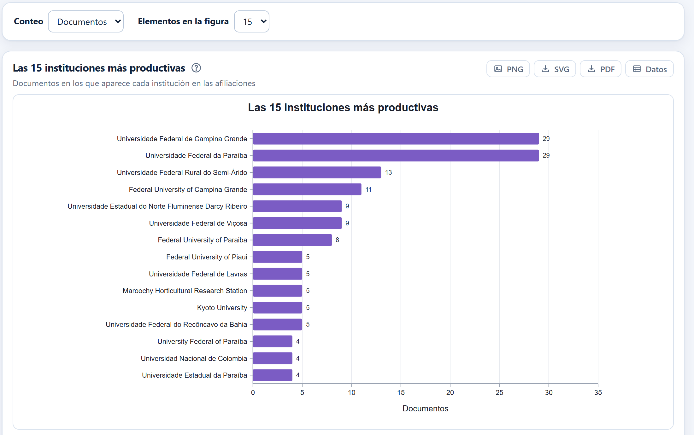
123
Figura 7.7. Las quince instituciones más productivas del ejemplo, por número de documentos.
1Conteo por documentos o por apariciones, y cuántas instituciones entran.
2Subtítulo: qué se está contando.
3La misma universidad escrita en inglés sigue aparte hasta que se une con un alias (sección 4.5).
▸Ejemplo · documentos frente a apariciones
Universidade Federal de Campina Grande y Universidade Federal da Paraíba aparecen en 29 documentos cada una: empatadas. Por apariciones, la primera suma 149 y la segunda 84, porque sus artículos llevan más autores de la misma universidad. La primera medida dice en cuántos trabajos participa una institución; la segunda, cuánta gente suya firma. Para un ranking, usa documentos; para medir el tamaño de un grupo de investigación, apariciones.
7.7Países y colaboración internacional
Contar países tiene una dificultad: un documento con autores de tres países, ¿de qué país es? La pestaña Países responde de dos maneras, con dos figuras distintas.
Tabla 7.3. Cómo se asigna un país a cada documento, en este orden.
Orden
Criterio
Documentos del ejemplo
1
El país del autor de correspondencia, si la base lo indica.
68
2
Si no, el del primer autor que tenga país.
168
3
Si no, el de la primera afiliación con país reconocido.
0
—
Sin país: ningún autor ni afiliación permite saberlo.
64
θTeoría en breve · SCP y MCP
Con el país asignado, cada documento se clasifica en SCP (single country publication, publicación de un solo país) si todos sus autores son del mismo país, o MCP (multiple country publication) si hay autores de más de uno. La proporción MCP de un país mide su colaboración internacional: un país con MCP alto publica sobre todo con socios extranjeros; uno con MCP bajo, con sus propios grupos. El mapa, en cambio, no asigna un país por documento: cuenta cada firma de cada autor en su país, o cada documento en todos sus países.
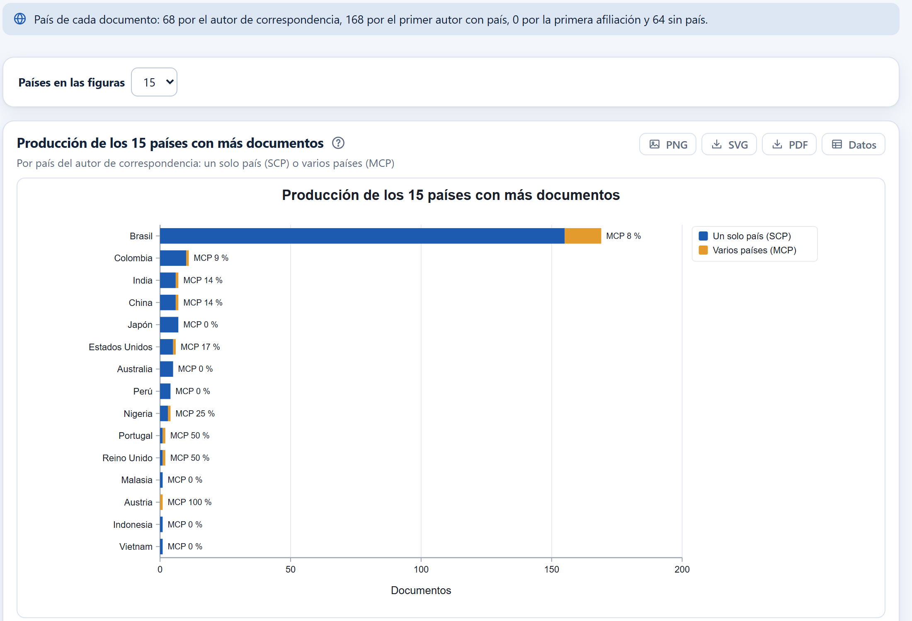
1234
Figura 7.8. Los quince países con más documentos del ejemplo, divididos en SCP y MCP.
1Cuántos documentos obtuvieron su país por cada criterio de la tabla 7.3.
2Cuántos países entran en las figuras.
3Subtítulo: el país es el del autor de correspondencia (o el siguiente criterio).
4Un solo país (SCP) y varios países (MCP); la etiqueta de cada barra da el porcentaje MCP.
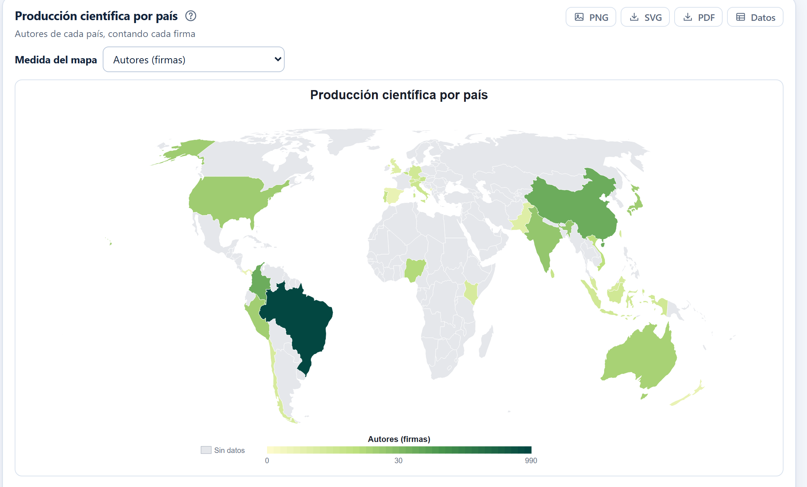
1234
Figura 7.9. Producción científica por país en el ejemplo, contando cada firma de autor.
1Subtítulo: qué mide el color.
2Medida del mapa: firmas de autores o documentos.
3Brasil concentra 990 firmas de autores.
4Escala de color; los países sin datos quedan en gris.
▸Ejemplo · un tema brasileño con poca colaboración internacional
Brasil tiene 169 de los 236 documentos con país, y solo el 8 % de ellos es MCP: la investigación sobre la nutrición del maracuyá se hace sobre todo en grupos brasileños. En el mapa, Brasil suma 990 firmas de autores, más de veinte veces las de Colombia y China (47 cada una). Los países pequeños en número tienen porcentajes MCP extremos —Portugal y el Reino Unido, 2 documentos y 50 %—, que no conviene leer como tendencia. La tabla de la pestaña agrega las citas por país: los dos documentos de Portugal promedian 80 citas, un recordatorio de que con pocos documentos un solo artículo muy citado lo cambia todo.
!Importante · el país sale de la afiliación, y la afiliación puede fallar
El país de un autor sale del código que trae la base o, si no lo trae, del final del texto de su afiliación. Las dos fuentes pueden fallar. En el ejemplo, el catálogo enlazó a un autor de un instituto de Sri Lanka con un instituto chino de nombre parecido; el resto de sus coautores no trae código, pero su afiliación termina en «Sri Lanka», y la app asigna el documento a Sri Lanka por su primer autor. Son casos raros, pero existen en cualquier base: si un país pequeño aparece donde no lo esperas, búscalo en la tabla y revisa sus documentos, y corrige con un alias de país en Limpieza y filtros (sección 4.5).
Con las fuentes y los autores ya sabes dónde y quién. El capítulo siguiente pasa a qué: los documentos más citados, las citas locales dentro del conjunto, las referencias más citadas, la espectroscopía de años de referencia y los temas en tendencia.
8
Capítulo ocho
Documentos
Qué se publica y qué se cita: los documentos más citados con tres medidas distintas, las citas locales que se hacen los documentos entre sí, las referencias más citadas, la espectroscopía de años de referencia que revela los trabajos fundacionales del campo, y las palabras, su crecimiento y los temas en tendencia.
8.1La pantalla Documentos y sus tarjetas
8.2Documentos más citados
8.3Citas locales
8.4Referencias más citadas
8.5Espectroscopía de años de referencia (RPYS)
8.6Palabras
8.7Crecimiento y temas en tendencia
Después de las fuentes y los autores, la pantalla Documentos mira los trabajos mismos: cuáles han recibido más atención, cuáles son la base común del campo y de qué hablan. Sus siete pestañas se dividen en dos familias: las cuatro primeras trabajan con citas y referencias; las tres últimas, con las palabras del campo de términos que elegiste en Limpieza y filtros.
iNota · los datos de este capítulo
Las figuras usan los datos de ejemplo del maracuyá (300 documentos del catálogo abierto), salvo las de la RPYS. Las referencias de ese catálogo llegan como identificadores de obras, sin año, y sin año no hay RPYS: para la sección 8.5 se usó un conjunto público de 147 artículos sobre análisis de cocitación y acoplamiento bibliográfico (1985–2015), exportado con sus referencias completas del índice de citas multidisciplinario B. Todas las cifras que se citan se comprobaron leyendo los archivos fuera de la app.
8.1La pantalla Documentos y sus tarjetas
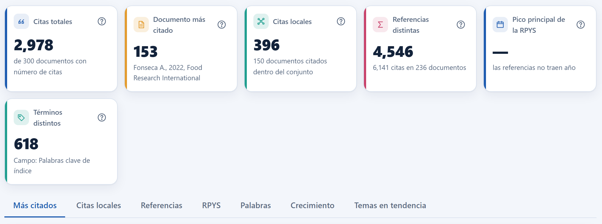
1234567
Figura 8.1. Las tarjetas de Documentos con los datos de ejemplo.
1Citas totales que informan las bases.
2El documento más citado.
3Citas locales: veces que un documento del conjunto cita a otro del conjunto.
4Referencias distintas en las bibliografías.
5Pico principal de la RPYS; aquí las referencias no traen año.
6Términos distintos del campo elegido en Limpieza.
7Las siete pestañas de la pantalla.
Tabla 8.1. Las seis tarjetas de Documentos.
Tarjeta
Qué mide
Ejemplo
Citas totales
Suma de las citas que informan las bases, de toda su cobertura.
2,978 en 300 documentos
Documento más citado
El documento con más citas globales.
153 · Fonseca A., 2022
Citas locales
Enlaces de cita dentro del conjunto (sección 8.3).
396 · 150 documentos citados
Referencias distintas
Obras distintas en las listas de referencias, ya unificadas.
4,546 · 6,141 citas en 236 documentos
Pico principal de la RPYS
Año de referencia con la mayor desviación positiva (sección 8.5).
— · las referencias no traen año
Términos distintos
Términos del campo de análisis, con sinónimos y palabras vacías aplicados.
618 · palabras clave de índice
iNota · el cálculo de las referencias
Las citas locales, las referencias más citadas y la RPYS dependen de emparejar miles de referencias entre sí y con los documentos del conjunto. Con pocas referencias el cálculo es inmediato; con más de 25,000 corre en segundo plano, con una barra de progreso y un botón Cancelar, y la pantalla dice mientras tanto Calculando las citas locales y las referencias citadas de este conjunto…. Si cancelas, aparece Calcular de nuevo. El resultado se comparte con el panorama general y con la estructura intelectual, así que no se repite al cambiar de pantalla.
8.2Documentos más citados
La primera pestaña ordena los documentos por sus citas. El selector Medida de impacto ofrece tres maneras de contarlas, porque «el más citado» depende de cuánto tiempo ha tenido cada documento para ser citado.
Tabla 8.2. Las tres medidas de citas por documento.
Medida
Cómo se calcula
Qué corrige
Citas totales
Las citas que informa la base.
Nada: premia a los documentos antiguos.
Citas por año
Citas ÷ años transcurridos desde la publicación hasta el año de referencia, contando el de publicación.
La edad del documento.
Citas normalizadas
Citas ÷ promedio de citas de los documentos del conjunto publicados el mismo año.
La edad y el ritmo de citación de cada año; 1 es el promedio de su año.
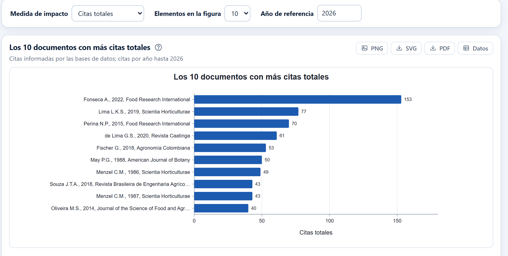
123
Figura 8.2. Los diez documentos con más citas totales en los datos de ejemplo.
1Medida de impacto, número de documentos y año de referencia.
2Las citas vienen de las bases; las citas por año, hasta el año de referencia.
3El documento más citado acumula 153 citas desde 2022.
▸Ejemplo · tres medidas, tres primeros lugares
Por citas totales gana una revisión de 2022 publicada en Food Research International, con 153 citas. Por citas por año gana la misma, con 30.6 citas anuales, pero la lista cambia más abajo: un artículo de 1988 con 50 citas, séptimo en totales, promedia apenas 1.28 al año. Por citas normalizadas el primer lugar pasa a un artículo de 2015 con 70 citas, 9.13 veces el promedio de los documentos de su año, por encima de la revisión de 2022 (8.80). Las tres medidas, con los mismos valores, se reprodujeron fuera de la app. Debajo de la figura, la tabla trae las tres medidas de todos los documentos que tienen conteo de citas.
8.3Citas locales
θTeoría en breve · citas globales y citas locales
Las citas que informa una base de datos son globales: cuentan todos los documentos de la base que citan al tuyo, sean o no del tema. Las citas locales cuentan solo las que vienen de otros documentos de tu conjunto (Garfield, Pudovkin e Istomin, 2003). Un documento con muchas citas globales y pocas locales es influyente fuera del tema; uno con muchas locales es un trabajo de referencia dentro de él, aunque su conteo global sea modesto. Para calcularlas, la app empareja cada referencia de cada documento con los documentos del conjunto, en este orden: por DOI, por identificador del catálogo abierto y, si no, por primer autor y año con la fuente, las páginas o el título. Las referencias que coinciden con más de un documento se descartan como ambiguas.
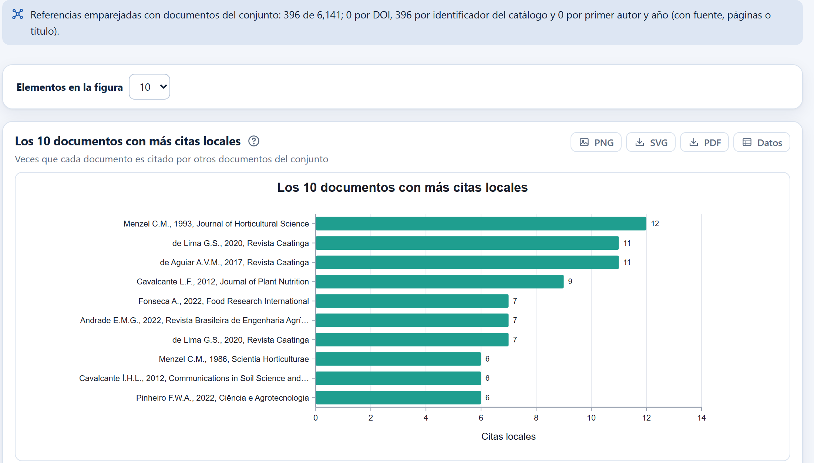
1234
Figura 8.3. Los diez documentos con más citas locales en los datos de ejemplo.
1Cuántas referencias se emparejaron con documentos del conjunto, y por qué vía.
2Cuántos documentos entran en la figura.
3Subtítulo: veces que otros documentos del conjunto citan a cada uno.
4El documento con más citas locales: 12.
▸Ejemplo · el más citado del mundo no es el más citado del tema
En los datos de ejemplo se emparejaron 396 de las 6,141 referencias, todas por identificador del catálogo: 150 documentos del conjunto son citados por algún otro, desde 151 documentos que citan. El primer lugar lo ocupa un artículo de 1993 en Journal of Horticultural Science, con 12 citas locales de 38 globales. En cambio, la revisión de 2022 con 153 citas globales —la más citada del conjunto— tiene solo 7 locales: la citan sobre todo trabajos de fuera del tema, como los de la ciencia de los alimentos a la que pertenece su revista, y pocos de la nutrición del cultivo. La tabla de la pestaña trae la razón entre citas locales y globales de cada documento, y marca con ▲ los que tienen más citas locales que globales, lo que indica un conteo global que viene de otra base o un emparejamiento dudoso. Las 396 citas locales y los primeros lugares se reprodujeron fuera de la app.
!Importante · sin referencias no hay citas locales
Las citas locales, las referencias más citadas y la RPYS necesitan exportaciones que incluyan la lista de referencias de cada documento. Si tus archivos no la traen, estas tres pestañas lo dicen en lugar de mostrar ceros. Es el mismo aviso de la pantalla Importar (capítulo 3): vuelve a exportar con la opción de referencias antes de sacar conclusiones.
8.4Referencias más citadas
La pestaña Referencias cuenta cuántos documentos del conjunto citan cada obra, esté o no en el conjunto. Es la base intelectual compartida del campo: las obras que casi todos citan. Antes de contar, la app une las referencias que son la misma obra escrita de distintas formas: las que comparten DOI o identificador, las que tienen el mismo primer autor, año, volumen y primera página, las que coinciden en su texto sin mayúsculas, acentos ni puntuación, y las que apuntan al mismo documento del conjunto.
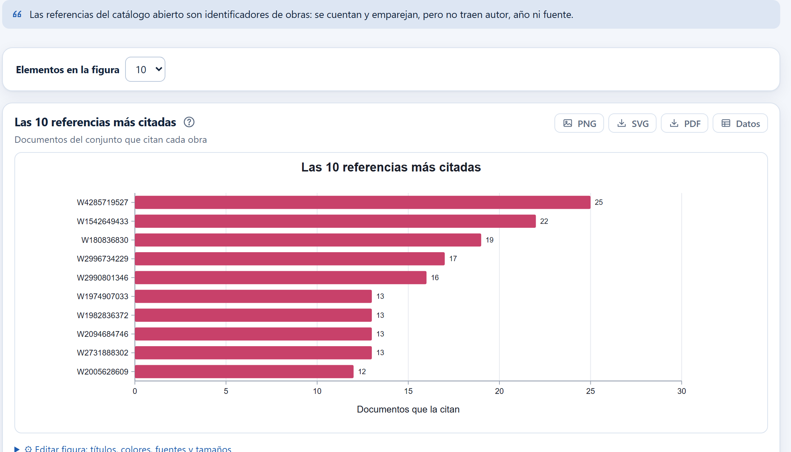
123
Figura 8.4. Las diez referencias más citadas en los datos de ejemplo.
1Aviso: las referencias del catálogo abierto son identificadores de obras.
2Subtítulo: documentos del conjunto que citan cada obra.
3La obra más citada aparece en las referencias de 25 documentos.
▸Ejemplo · 6,141 referencias, 4,546 obras
Los 300 documentos del ejemplo traen referencias en 236 casos: 6,141 en total, que corresponden a 4,546 obras distintas. La más citada aparece en 25 documentos y no forma parte del conjunto: es un trabajo que el tema usa, pero que no trata de la nutrición del maracuyá. Como el catálogo abierto entrega sus referencias como códigos, la figura muestra el código de cada obra; la tabla de la pestaña los lista todos y los que están en el conjunto se marcan en la columna En el conjunto. Con las exportaciones de los índices de citas, las etiquetas son legibles («SMALL H, 1973, J AM SOC INFORM SCI»), como en la sección 8.5.
8.5Espectroscopía de años de referencia (RPYS)
θTeoría en breve · cómo encontrar las raíces de un campo
La RPYS (Marx, Bornmann, Barth y Leydesdorff, 2014) cuenta cuántas referencias citadas se publicaron cada año, sin importar quién las cite. Si un año tiene muchas más referencias que sus vecinos, casi siempre es porque en ese año se publicó una obra que todo el campo cita: un trabajo fundacional. Para ver esos años sobre el crecimiento general de la literatura, se resta a cada año la mediana de su ventana de cinco años:
Dt = NCRt − mediana(NCRt−2, …, NCRt+2)
donde NCRt es el número de referencias citadas publicadas en el año t. Un pico es un año con desviación positiva mayor que la del año anterior y no menor que la del siguiente. La app los ordena por desviación y muestra las referencias más citadas de cada uno.
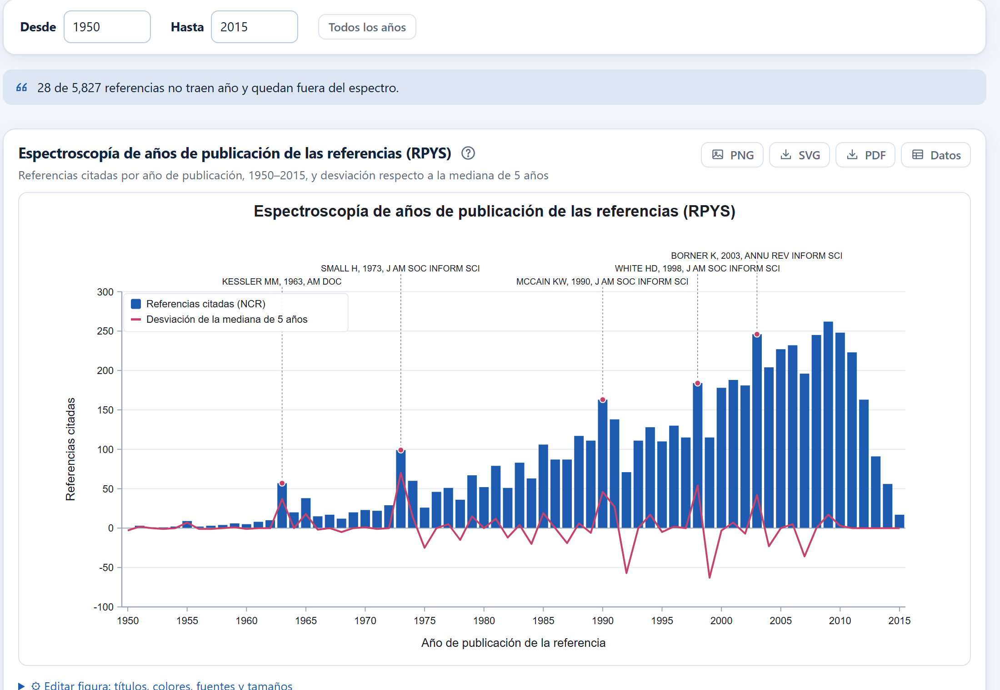
12345
Figura 8.5. La RPYS de 147 artículos sobre cocitación y acoplamiento bibliográfico, entre 1950 y 2015.
1Intervalo de años; Todos los años lo restablece.
2Referencias sin año, que quedan fuera del espectro.
3Subtítulo: intervalo y desviación respecto a la mediana de 5 años.
4El pico de 1973, con su referencia más citada.
5La desviación: los picos son sus máximos locales.
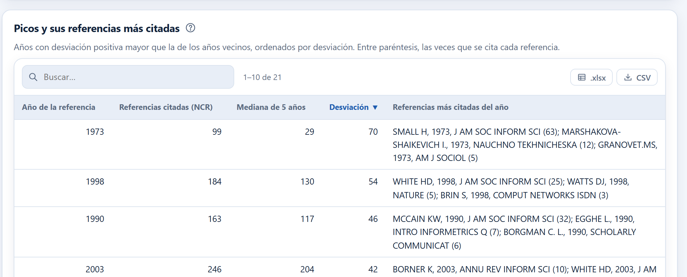
12
Figura 8.6. Los picos ordenados por desviación, con las tres referencias más citadas de cada año.
1Picos encontrados en el intervalo elegido.
2Cada pico con su número de referencias, la mediana de su ventana y la desviación.
▸Ejemplo · la RPYS encuentra a los fundadores
El pico más alto es 1973: 99 referencias frente a una mediana de 29, desviación de 70. Lo forman el artículo de Small de 1973 en el Journal of the American Society for Information Science, citado 63 veces, y el de Marshakova-Shaikevich del mismo año, citado 12: los dos trabajos que propusieron, cada uno por su lado, el análisis de cocitación. El pico de 1963 (desviación de 37) es el artículo de Kessler que definió el acoplamiento bibliográfico, citado 35 veces. Los de 1990 y 1998 corresponden a los trabajos de McCain y de White y McCain que llevaron la cocitación al mapeo de autores y de disciplinas. En otras palabras, sin leer un solo documento, la RPYS reconstruye la historia intelectual del tema. Los picos, su orden y sus conteos por año se reprodujeron fuera de la app leyendo las referencias del archivo; solo difiere una referencia de 1998 (184 frente a 183).
iNota · cuándo no hay RPYS
La RPYS necesita el año de cada referencia. Las exportaciones de los índices de citas lo traen; las del catálogo abierto, no, porque sus referencias son identificadores. Con los datos de ejemplo la pestaña dice Las referencias no traen año de publicación, así que no se puede calcular la RPYS y la tarjeta del pico queda en «—». Cuando solo una parte de las referencias trae año, la pestaña lo avisa arriba del espectro, como el aviso de 28 referencias sin año de la figura 8.5.
8.6Palabras
La pestaña Palabras cuenta en cuántos documentos aparece cada término del campo de análisis (palabras clave de autor o de índice, o pares de palabras de títulos o resúmenes), con los sinónimos y las palabras vacías que definiste en el capítulo 4. El selector Campo de términos es el mismo de Limpieza y filtros: cambiarlo aquí lo cambia en toda la app. El selector Figura ofrece tres vistas: barras, nube de palabras y mapa de árbol.
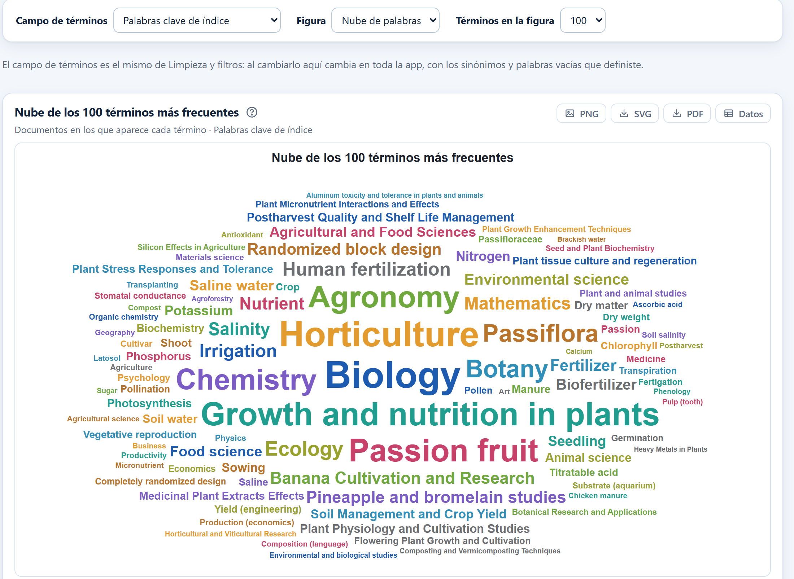
12
Figura 8.7. La nube de los 100 términos más frecuentes del ejemplo; el tamaño de cada palabra es su número de documentos.
1Campo de términos, tipo de figura y número de términos.
2Subtítulo: documentos en los que aparece cada término, y el campo usado.
▸Ejemplo · 618 términos y algunos intrusos
Las palabras clave de índice del ejemplo suman 618 términos distintos. Los más frecuentes son Biology (288 documentos), Horticulture (259), Growth and nutrition in plants (213), Passion fruit (201) y Agronomy (188). La nube también deja ver términos que el catálogo asignó mal: Human fertilization aparece en 68 documentos que tratan de la fertilización del cultivo, y hay otros como Psychology, Medicine o Pulp (tooth). No son errores de la app sino de la clasificación automática del catálogo, y se corrigen mandándolos a palabras vacías (sección 4.6). Los conteos se reprodujeron fuera de la app a partir de las palabras clave, temas y conceptos de cada obra.
✓Regla de decisión · qué vista de palabras usar
Vista
Úsala para…
Barras
un artículo: se lee con precisión y compara valores; con 10 a 20 términos.
Nube de palabras
una presentación o una primera exploración; no permite leer valores, solo órdenes de magnitud.
Mapa de árbol
ver la proporción de cada término sobre el total con muchos términos a la vez; las áreas se comparan mejor que los tamaños de letra.
Las tres vistas usan los mismos datos, que se descargan con Datos o desde la tabla de la pestaña.
8.7Crecimiento y temas en tendencia
Las dos últimas pestañas añaden el tiempo a las palabras. Crecimiento dibuja, para los términos más frecuentes, cuántos documentos los usan cada año o de forma acumulada. Temas en tendencia resume la vida de cada término en tres años: el primer cuartil, la mediana y el tercer cuartil de los años de los documentos que lo usan.
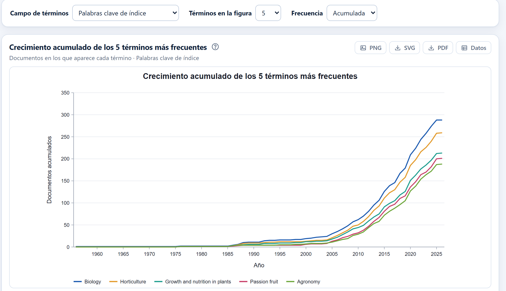
123
Figura 8.8. Crecimiento acumulado de los cinco términos más frecuentes del ejemplo.
1Campo, número de términos y frecuencia acumulada o por año.
2Subtítulo: documentos en los que aparece cada término.
3Las curvas se separan a partir de 2005: el tema despega.
θTeoría en breve · la mediana de los años de un término
Para cada término con al menos la frecuencia mínima elegida, la app ordena los años de los documentos que lo usan y calcula tres cuantiles de tipo 7 (Hyndman y Fan, 1996): el primer cuartil (Q1), la mediana y el tercer cuartil (Q3). El segmento de la figura va de Q1 a Q3 y el punto marca la mediana, con tamaño proporcional a la frecuencia. Los términos se ordenan por su año mediano, y de cada año se muestran los más frecuentes, hasta el número que elijas en Términos por año. Leído de arriba abajo, el gráfico es una cronología del vocabulario del tema: arriba los términos antiguos, abajo los recientes.
1234
Figura 8.9. Temas en tendencia del ejemplo con frecuencia mínima de 15 documentos y dos términos por año.
1Frecuencia mínima y términos por año.
2Subtítulo: el segmento es Q1–Q3 y el punto, la mediana.
3Uno de los temas más recientes: la fotosíntesis, con mediana en 2022.
4El tamaño del punto es el número de documentos del término.
▸Ejemplo · del fósforo a la salinidad
La cronología del ejemplo empieza con la biología floral y la polinización, pasa por la nutrición con fósforo y los biofertilizantes (mediana en 2015; la mitad central de sus 40 documentos, entre 2012 y 2017) y llega a los temas recientes: el agua salina (mediana en 2019), la calidad poscosecha y la fotosíntesis, con mediana en 2022 y la mitad central de sus 23 documentos entre 2020 y 2022.5. La lectura para una tesis es directa: el estrés salino y la fisiología bajo riego con agua salina son el frente activo del tema. Los cuartiles de estos términos se recalcularon fuera de la app con la misma regla y coinciden.
!Importante · qué no dicen los temas en tendencia
Un término reciente no es necesariamente un término en auge: puede aparecer en pocos documentos recientes y desaparecer. Por eso conviene subir la frecuencia mínima hasta que queden términos con suficientes documentos, y mirar la pestaña Crecimiento en modo Por año para confirmar que su uso aumenta. Para ver cómo se agrupan y evolucionan los temas, el capítulo 9 ofrece el mapa temático y la evolución temática.
Con los documentos termina la parte descriptiva del análisis. Los tres capítulos siguientes pasan a las redes: la estructura conceptual (de qué habla el campo), la intelectual (sobre qué se apoya) y la social (quién colabora con quién).
9
Capítulo nueve
Estructura conceptual
De qué habla el campo: la red de palabras que aparecen juntas en los mismos documentos, los temas que forman y su lugar en el mapa temático, cómo cambian esos temas de un periodo a otro y el mapa factorial que ordena las palabras en un plano.
9.1La pantalla y sus cuatro pestañas
9.2Red de coocurrencia
9.3La ficha de un término
9.4Mapa temático
9.5Evolución temática
9.6Análisis factorial
Con este capítulo empiezan las redes. La estructura conceptual estudia las palabras: dos términos están relacionados cuando aparecen en los mismos documentos, y los grupos de términos muy relacionados entre sí son los temas del campo. La pantalla Conceptual, en el grupo Estructuras de la barra lateral, ofrece cuatro maneras de verlos.
9.1La pantalla y sus cuatro pestañas
Las cuatro pestañas trabajan con el mismo campo de términos: el que elegiste en Limpieza y filtros (capítulo 4), con sus sinónimos y palabras vacías. Cada pestaña tiene a la izquierda un panel de parámetros; al cambiar un valor, la pestaña se vuelve a calcular. El selector Campo de términos del panel es el mismo de Limpieza: si lo cambias aquí, cambia en toda la app.
Tabla 9.1. Las cuatro pestañas de la estructura conceptual.
Pestaña
Qué muestra
Pregunta que responde
Red de coocurrencia
Los términos más frecuentes unidos cuando aparecen en los mismos documentos, coloreados por comunidad.
¿Qué palabras van juntas?
Mapa temático
Los temas (grupos de palabras) ubicados según su centralidad y su densidad, en cuatro cuadrantes.
¿Qué temas son centrales y cuáles están maduros?
Evolución temática
Un mapa temático por periodo y las bandas que unen los temas que comparten palabras.
¿De dónde viene cada tema y hacia dónde va?
Análisis factorial
Las palabras en un plano por análisis de correspondencias, agrupadas con k-means.
¿Qué palabras se parecen por los documentos en que aparecen?
iNota · los datos de este capítulo
Las figuras usan los datos de ejemplo del maracuyá (300 documentos del catálogo abierto) con el campo Palabras clave de índice, el único que trae ese catálogo. El catálogo asigna a casi todos los documentos áreas generales de la ciencia —Biology aparece en 288 de los 300, Chemistry en 170, Mathematics en 60— y algunas asignaciones erróneas por palabras parecidas: Human fertilization en 68 documentos que hablan de fertilización del cultivo, Pulp (tooth) en 8 que hablan de la pulpa del fruto. Esos términos ocuparían el centro de todas las redes sin decir nada del tema, así que para este capítulo se agregaron 14 palabras vacías a la lista en inglés: Biology, Chemistry, Mathematics, Physics, Psychology, Medicine, Economics, Business, Geography, Art, Materials science, Human fertilization, Pulp (tooth) y Composition (language). Para reproducir las figuras, escríbelas en Limpieza y filtros › Palabras clave, en la lista de palabras vacías en inglés, y pulsa Guardar listas (sección 4.6). Con ellas quedan 604 términos distintos, 258 de ellos en dos documentos o más. Todas las cifras que se citan se comprobaron fuera de la app.
9.2Red de coocurrencia
θTeoría en breve · coocurrencia y fuerza de asociación
Dos términos coocurren cuando aparecen en el mismo documento; el conteo cij es el número de documentos que los tienen a los dos. Los conteos favorecen a los términos frecuentes, que coocurren con casi todo solo por ser frecuentes. Por eso la app normaliza por omisión con la fuerza de asociación (van Eck y Waltman, 2009), que divide el conteo entre lo que se esperaría por azar dada la frecuencia de cada término:
ASij = cij / (ci · cj)
donde ci y cj son los documentos de cada término. Sobre esa red, el algoritmo de Louvain (Blondel y colaboradores, 2008) forma comunidades: grupos de términos más unidos entre sí que con el resto, medidos por la modularidadQ. La resolución γ regula su tamaño: con γ mayor que 1 salen más comunidades y más pequeñas.
Tabla 9.2. Parámetros de la red de coocurrencia y sus valores por omisión.
Parámetro
Qué hace
Por omisión
Frecuencia mínima (documentos)
Deja fuera los términos que aparecen en menos documentos.
2
Número máximo de nodos
Cuántos términos entran, del más frecuente hacia abajo (hasta 500).
50
Coocurrencias mínimas por arista
Une dos términos solo si comparten al menos ese número de documentos. Se aplica al conteo, antes de normalizar.
1
Quitar nodos aislados
Oculta los términos que se quedan sin aristas.
Sí
Normalización
Ninguna (conteos), fuerza de asociación, coseno de Salton, Jaccard, índice de inclusión o índice de equivalencia.
Fuerza de asociación
Algoritmo
Louvain o fast greedy (Clauset, Newman y Moore, 2004).
Louvain
Resolución (γ)
Tamaño de las comunidades: mayor γ, más comunidades.
1
Diseño
ForceAtlas2 (los términos unidos se atraen) o circular.
ForceAtlas2
Tamaño de los nodos
Frecuencia, grado, fuerza, intermediación o PageRank.
Frecuencia
Etiquetas visibles
Cuántos nombres se escriben, de los nodos mayores; al acercar aparecen más.
20
123456789
Figura 9.1. La red de coocurrencia de los 50 términos más frecuentes del ejemplo, con los parámetros por omisión.
1Selección: campo de términos, frecuencia mínima, número de nodos y coocurrencias mínimas.
2Pesos de las aristas: la normalización.
3Comunidades: algoritmo y resolución γ.
4Presentación: diseño, tamaño de los nodos y etiquetas visibles.
5Modularidad de la partición en comunidades.
6Densidad: proporción de las aristas posibles que existen.
7Subtítulo: campo, normalización y significado del color.
8Buscar un término, acercar, alejar y encuadrar la red.
9La comunidad naranja: salinidad, riego, agua salina y ecología.
Las seis tarjetas resumen la red. La red se calcula en segundo plano; si tarda más de un instante aparece una ventana de progreso (Midiendo la red, Acomodando los nodos) y un botón Cancelar; cambiar el algoritmo, la resolución o la presentación vuelve a colorear el mismo dibujo sin repetir el cálculo.
Tabla 9.3. Las tarjetas de la red y sus valores en el ejemplo.
Tarjeta
Qué mide
Ejemplo
Nodos
Términos en la red y aristas entre ellos.
50 · 944 aristas
Comunidades
Grupos que formó el algoritmo.
3 · Louvain
Modularidad (Q)
Qué tan separadas están las comunidades: de 0 (nada) a cerca de 1. Con γ distinto de 1 se informa también Qγ.
0.215
Densidad
Aristas que existen ÷ aristas posibles, n(n − 1)/2.
0.771 (944 de 1,225)
Transitividad
Probabilidad de que dos vecinos de un término también estén unidos (3 × triángulos ÷ tripletas).
0.84 · 10,191 triángulos
Diámetro
El mayor número de pasos entre dos términos, y cuántas piezas tiene la red.
2 · 1 componente conexo
▸Ejemplo · una red muy densa con tres comunidades
Los 50 términos más frecuentes del ejemplo forman una red casi completa: existen 944 de las 1,225 aristas posibles (densidad 0.771) y cualquier término llega a cualquier otro en dos pasos como máximo. Es lo esperable en un conjunto de un solo tema, donde los términos principales aparecen juntos una y otra vez. Aun así, Louvain distingue tres comunidades: la azul, la mayor, con el núcleo agronómico (Horticulture, Growth and nutrition in plants, Passion fruit, Agronomy, Fertilizer); la naranja, con el estrés salino y el riego (Salinity, Saline water, Irrigation, Ecology); y la verde, con la botánica del género (Botany, Passiflora). La modularidad baja (0.215) advierte que las fronteras entre ellas son tenues. Los conteos de las 944 aristas, la densidad y los vecinos de cada término se reprodujeron fuera de la app.
!Importante · las comunidades dependen de los parámetros
La partición en comunidades no es un hecho de los datos: cambia con la normalización, la resolución y el número de términos. Antes de nombrar las comunidades en un artículo, prueba dos o tres resoluciones (por ejemplo 0.8, 1 y 1.2) y quédate con los grupos que se mantienen. Si la red es muy densa, sube las Coocurrencias mínimas por arista a 2 o 3 para ver solo los vínculos repetidos. Y recuerda que, con fuerza de asociación, los términos más frecuentes quedan en la periferia del dibujo: coocurren con todo, pero con pesos bajos.
Debajo de la red interactiva están la Red de coocurrencia de términos lista para publicar (con su barra de edición y exportación, como todas las figuras) y tres tablas: nodos con sus métricas, comunidades con sus términos y aristas con su conteo y su peso. La tarjeta de exportación descarga la red en los formatos de los programas de análisis de redes (capítulo 13).
9.3La ficha de un término
Al hacer clic en un nodo, o al buscarlo, la red resalta sus aristas y aparece debajo una ficha con sus métricas, sus vecinos y los documentos donde aparece.
Escribe el término en Buscar un término… y elígelo de la lista, o haz clic en su nodo.
Lee la ficha debajo de la red. Cada vecino de la lista es un botón: al pulsarlo, la ficha pasa a ese término.
Pulsa Quitar selección o la tecla Esc para volver a la red completa.
Tabla 9.4. Las métricas de un nodo.
Métrica
Qué mide
Salinity
Frecuencia
Documentos en que aparece el término.
58
Grado
Términos con los que coocurre.
45 de 49 posibles
Fuerza
Suma de los pesos de sus aristas.
0.2147
Intermediación
Fracción de los caminos más cortos entre otros dos términos que pasan por él (Brandes, 2001), de 0 a 1.
0.0066
Cercanía
Inverso de la distancia media a los demás términos (Freeman, 1979), de 0 a 1.
0.9245
PageRank
Importancia heredada de la de sus vecinos (Brin y Page, 1998); suma 1 en toda la red.
0.0242
La intermediación y la cercanía cuentan pasos, no pesos: en una red tan densa como la del ejemplo casi todos los términos están a uno o dos pasos, así que la intermediación es pequeña y la cercanía alta para todos. Para comparar términos en redes densas, la fuerza y el PageRank discriminan mejor.
1234567
Figura 9.2. La ficha del término Salinity.
1Búsqueda del término.
2El nodo elegido lleva un borde y sus aristas se resaltan.
3Quitar selección.
4La comunidad, con el nombre de su término más frecuente.
5Las métricas del nodo (tabla 9.4).
6Los ocho vecinos con más coocurrencias; cada uno abre su ficha.
7Documentos donde aparece, los ocho más citados.
▸Ejemplo · la salinidad
Salinity aparece en 58 documentos y coocurre con 45 de los otros 49 términos. Su vecino más fuerte es Horticulture, en 57 de sus 58 documentos: el catálogo asigna esa área a casi todo el conjunto. Los vecinos que dicen algo del tema vienen después: Irrigation (43), Saline water (39). Entre sus documentos más citados están un estudio de 2019 sobre las respuestas de dos especies de maracuyá y su híbrido a la salinidad (77 citas) y uno de 2020 sobre agua salina y fertilización potásica (61 citas). La ficha es un buen punto de partida para leer: lleva de un término a los trabajos más influyentes que lo usan.
9.4Mapa temático
θTeoría en breve · centralidad y densidad de Callon
El mapa temático (Cobo y colaboradores, 2011) parte de una red de coocurrencia más grande —250 palabras por omisión, con fuerza de asociación— y toma cada comunidad de Louvain como un tema. Cada tema se mide con dos números de Callon, Courtial y Laville (1991):
centralidad = 10 × Σ pesos de las aristas que salen del tema · densidad = 100 × Σ pesos de las aristas internas / palabras del tema
La centralidad mide cuánto se relaciona el tema con los demás (su relevancia para el campo); la densidad, qué tan unidas están sus palabras (su grado de desarrollo). Los ejes del mapa pasan por las medianas de las dos medidas y lo dividen en cuatro cuadrantes.
Tabla 9.5. Cómo leer los cuatro cuadrantes.
Cuadrante
Posición
Lectura
Temas motores
Arriba a la derecha: centralidad y densidad altas.
Desarrollados e importantes; mueven el campo.
Temas nicho
Arriba a la izquierda: densidad alta, centralidad baja.
Muy desarrollados pero aislados; especializados.
Temas emergentes o en declive
Abajo a la izquierda: las dos bajas.
Poco desarrollados y marginales; la evolución temática dice si nacen o se apagan.
Temas básicos
Abajo a la derecha: centralidad alta, densidad baja.
Transversales y generales; la base común del campo.
El panel Parámetros del mapa tiene la selección de palabras (campo, frecuencia mínima 2, Número de palabras 250 y coocurrencias mínimas 1) y los parámetros de los temas: resolución 1, Palabras mínimas por tema 2 (los grupos más pequeños no se dibujan, aunque sus aristas cuentan para la centralidad de los demás) y Palabras en la etiqueta 3. Debajo del mapa, la tabla Temas trae todas las palabras, la frecuencia, la centralidad y la densidad de cada tema, con las dos medianas, y la tabla Documentos de cada tema asigna cada documento al tema con más palabras suyas.
Tabla 9.6. Los nueve temas del ejemplo, de mayor a menor centralidad. Medianas: centralidad 76.99 y densidad 38.58.
Cuadrante
Palabras principales
Palabras
Centralidad
Densidad
Básico
Horticulture, Growth and nutrition in plants, Passion fruit
76
209.39
20.13
Motor
Food science, Titratable acid, Botanical Research and Applications
33
154.44
45.47
Motor
Plant Stress Responses and Tolerance, Biochemistry, Plant Micronutrient…
22
102.15
38.58
Motor
Medicinal Plant Extracts Effects, Plant and soil sciences, Inoculation
17
85.63
82.36
Básico
Botany, Passiflora, Plant tissue culture and regeneration
27
76.99
38.01
Nicho
Passion, Saline, Silicon Effects in Agriculture
18
74.46
45.90
Emergente o en declive
Nutrient, Nitrogen, Phosphorus
16
68.40
35.62
Nicho
Agricultural and Food Sciences, Production (economics), Agriculture
29
58.00
42.05
Emergente o en declive
Cultivar, Composting and Vermicomposting Techniques, Leaf Properties…
12
46.74
29.18
✓Regla · un tema sobre el eje
Con un número impar de temas, la mediana es el valor de uno de ellos, y ese tema queda exactamente sobre un eje. La app lo pone del lado alto: un tema con centralidad igual o mayor que la mediana es central, y uno con densidad igual o mayor que la mediana es denso. En el ejemplo pasa dos veces: el tema de botánica y Passiflora está sobre el eje vertical (centralidad 76.99, la mediana) y cuenta como básico; el de estrés y micronutrientes está sobre el eje horizontal (densidad 38.58, la mediana) y cuenta como motor. Al comentar estos temas en un artículo, conviene decir que están en la frontera.
▸Ejemplo · qué dice el mapa del maracuyá
Los 300 documentos quedan en 9 temas. El tema básico dominante es el general —horticultura, crecimiento y nutrición del maracuyá, 76 palabras—: está unido a todo, pero es poco cohesivo. Los motores son la calidad del fruto (ciencia de los alimentos, acidez titulable), la respuesta al estrés con los micronutrientes, y los extractos de plantas medicinales con la inoculación, el tema más denso de todos. En los nichos están el estrés salino con el silicio y la economía de la producción. Los emergentes o en declive son la nutrición con nitrógeno y fósforo, y los cultivares con el composteo: la evolución temática de la sección siguiente dice cuál de las dos cosas son. La centralidad y la densidad de los nueve temas, las medianas y los cuadrantes se recalcularon fuera de la app y coinciden.
1234567
Figura 9.3. El mapa temático del ejemplo, con los parámetros por omisión.
1Temas y palabras de la red.
2Documentos que quedan en algún tema.
3Una tarjeta por cuadrante, con las palabras del tema más frecuente.
4Subtítulo: el tamaño de la burbuja es la frecuencia del tema.
5El tema más denso: extractos de plantas medicinales.
6El eje vertical pasa por la mediana de la centralidad; el horizontal, por la de la densidad.
7El tema básico mayor: horticultura, nutrición y maracuyá.
9.5Evolución temática
La evolución temática divide los documentos en periodos, calcula un mapa temático en cada uno con los mismos parámetros y une los temas de periodos consecutivos que comparten palabras. En el grupo Periodos del panel Parámetros de la evolución escribe hasta cuatro años de corte, de Año de corte 1 a Año de corte 4: cada periodo termina en un año de corte y el último llega al año más reciente. Sin años de corte, la app usa el año mediano, así que los dos periodos tienen casi los mismos documentos.
12345
Figura 9.4. La evolución temática del ejemplo, con el corte por omisión en el año mediano.
1Los periodos, con sus documentos y sus temas.
2Subtítulo: el grosor es el índice de inclusión y el color, el cuadrante.
3Una columna por periodo; la altura de cada bloque es la frecuencia del tema.
4El tema básico del segundo periodo recibe bandas de casi todos los temas anteriores.
5La biología floral: motor antes de 2018, emergente o en declive después.
θTeoría en breve · el índice de inclusión
Dos temas de periodos consecutivos se unen cuando comparten al menos una palabra. El grosor de la banda es el índice de inclusión (Cobo y colaboradores, 2011):
inclusión = palabras compartidas / palabras del tema más pequeño
Vale 1 cuando el tema pequeño está contenido por completo en el otro. Un tema que recibe bandas de varios temas anteriores es una fusión; uno que reparte sus palabras entre varios temas posteriores es una división; uno sin bandas nace o desaparece en ese periodo.
Al pasar el ratón sobre una banda aparecen su índice de inclusión y las palabras compartidas. Debajo del diagrama están el Mapa temático de cada periodo (un mapa pequeño por periodo, con la misma escala de burbujas para poder compararlos) y las tablas Enlaces entre temas y Temas de cada periodo. El control Índice de inclusión mínimo oculta las bandas débiles, útil cuando hay muchas.
▸Ejemplo · la biología floral se apaga y la nutrición se concentra
El año mediano del ejemplo es 2017: 151 documentos de 1956 a 2017 forman 6 temas y 149 de 2018 a 2026 forman 8, unidos por 31 bandas. La más gruesa (inclusión 0.75) une el tema motor de biología floral del primer periodo —botánica, polinización, polen, 20 palabras— con un tema emergente o en declive del segundo que conserva 6 de sus 8 palabras: el tema no nace, se apaga. La economía de la producción sigue como nicho en los dos periodos (inclusión 0.50). La nutrición, en cambio, se concentra: el tema motor del segundo periodo (Nutrient, Seedling, Nitrogen) reúne nitrógeno, fósforo y brotes del tema básico anterior y el término Nutrient del tema emergente anterior. Los documentos y palabras de cada periodo, la centralidad, la densidad y el cuadrante de los 14 temas y el índice de inclusión de las 31 bandas se reprodujeron fuera de la app.
!Importante · periodos con sentido
El corte en el año mediano sirve para empezar, pero los periodos de un artículo deben responder a la historia del campo: un cambio de política, la aparición de una técnica, una década. Cuida también que cada periodo tenga suficientes documentos; con pocos, los temas salen de unas cuantas palabras y cambian mucho con cualquier parámetro. El índice de inclusión cuenta palabras, no apariciones: una banda gruesa entre dos temas pequeños puede venir de dos o tres palabras compartidas, que conviene revisar en la tabla de enlaces.
9.6Análisis factorial
El análisis factorial acomoda las palabras en un plano de modo que las palabras que aparecen en los mismos documentos queden cerca. Por omisión usa el análisis de correspondencias múltiples (ACM) de la tabla documentos × palabras, con cada palabra como una variable de dos categorías, presente o ausente; la otra opción, Análisis de correspondencias, trabaja con la tabla de presencias directamente. Después agrupa las palabras con k-means sobre las dos primeras dimensiones; con Automático (silueta) prueba de 2 a 8 grupos y se queda con el de mayor silueta media (Rousseeuw, 1987).
12345678
Figura 9.5. El mapa factorial de las 50 palabras más frecuentes del ejemplo.
1Método: correspondencias múltiples o simples.
2Número de grupos: por la silueta o de 2 a 8.
3Muestra el dendrograma de Ward debajo del mapa.
4Dimensión 1: inercia ajustada de Benzécri.
5El número de grupos que sugiere la silueta.
6Subtítulo: palabras y grupos.
7Leyenda de los grupos, con sus tres primeras palabras.
8Grupo 2: la biología floral, lejos del resto.
θTeoría en breve · por qué la inercia del ACM se ajusta
En el ACM, cada dimensión explica una parte de la inercia total, la variación de la tabla. Con muchas variables de dos categorías esos porcentajes salen siempre pequeños —en el ejemplo, 9.81 % la primera dimensión—, porque la tabla de presencias y ausencias infla la inercia con variación que no es asociación entre palabras. La corrección de Benzécri (1979) quita esa parte: solo cuentan los valores propios λ mayores que 1/Q, con Q el número de palabras, y cada uno se transforma así:
λajustado = [ Q / (Q − 1) · (λ − 1/Q) ]²
Los porcentajes ajustados se calculan sobre la suma de los λ ajustados. Son los que conviene informar para el ACM (Greenacre, 2007); la tabla de valores propios trae los dos.
1234
Figura 9.6. Valores propios y silueta por número de grupos del ejemplo.
1La dimensión 1 explica 9.81 % de la inercia sin ajustar…
2… y 51.53 % con el ajuste de Benzécri; las dos primeras suman 73.3 %.
3Dos grupos tienen la silueta media más alta (0.623): es el k sugerido.
4La suma de cuadrados siempre baja al subir k; por sí sola no sirve para elegirlo.
▸Ejemplo · la biología floral aparte
Las 50 palabras aparecen en 299 de los 300 documentos. La primera dimensión (51.5 % ajustada) separa un grupo pequeño —polinización, polen, Passifloraceae, biología floral, extractos medicinales— del resto del vocabulario; la segunda (21.8 %) ordena ese resto: la fotosíntesis, la salinidad y el estrés arriba; el rendimiento, el peso seco y los fertilizantes abajo. La silueta sugiere dos grupos, de 6 y 44 palabras. Valores propios, porcentajes, coordenadas, grupos, siluetas y alturas de Ward se reprodujeron con otro programa estadístico.
Si marcas Mostrar el dendrograma, debajo del mapa aparece el agrupamiento jerárquico de Ward (1963) sobre las mismas coordenadas, con las hojas coloreadas por el grupo de k-means. La tabla Coordenadas de las palabras trae, para cada palabra, su frecuencia, su grupo, sus dos coordenadas, su contribución a cada dimensión y su calidad de representación en el plano (cos²).
1234
Figura 9.7. El dendrograma de las palabras del ejemplo.
1La figura para publicar: Ward sobre las coordenadas del mapa; el color es el grupo de k-means.
2La primera división separa cuatro palabras de la polinización (altura 8.61).
3Dos palabras del grupo 2 de k-means quedan en otra rama del árbol.
4Altura de Ward: cuánto crece la variación dentro de los grupos al unir dos ramas.
!Importante · k-means y Ward no tienen por qué coincidir
Los dos métodos agrupan las mismas coordenadas con criterios distintos: k-means busca la partición con menor suma de cuadrados para un k dado; Ward une paso a paso los grupos más parecidos y no puede deshacer una unión. En el ejemplo coinciden en lo esencial —la polinización queda aparte—, pero las dos palabras del grupo 2 más cercanas al centro del mapa (Medicinal Plant Extracts Effects y Flowering Plant Growth and Cultivation) se unen en el árbol a la rama de la botánica. Las palabras que los dos métodos ponen juntas forman un grupo sólido; las que cambian de grupo están en la frontera y conviene no darles mucho peso al interpretar. Recuerda además que el plano muestra solo dos dimensiones: dos palabras cercanas en el mapa pueden estar lejos en la tercera.
iNota · para ir más lejos
El análisis factorial de SciMetricsPro es una vista exploratoria de las palabras, como en la literatura bibliométrica. Para un análisis multivariado completo —más dimensiones, variables suplementarias, otros métodos de agrupamiento y su validación—, la app lo indica en su aviso: exporta la tabla de coordenadas o el conjunto limpio y analízalo con las apps de análisis factorial y de agrupamientos de la misma familia.
La estructura conceptual mira las palabras de los documentos. El capítulo 10 mira sus referencias: qué obras se citan juntas, qué documentos comparten bibliografía y cómo se encadenan las citas dentro del conjunto.
10
Capítulo diez
Estructura intelectual
Sobre qué se apoya el campo: las obras, los autores y las revistas que se citan juntos, los documentos que comparten bibliografía, los grupos que forman según su centralidad y su impacto, y la cadena de citas directas entre los documentos del conjunto.
10.1La pantalla y sus cuatro pestañas
10.2Cocitación
10.3Acoplamiento bibliográfico
10.4Mapa de acoplamiento
10.5Historiografía
La estructura conceptual del capítulo 9 mira las palabras; la estructura intelectual mira las referencias. Lo que un documento cita dice en qué trabajos se apoya, y cuando muchos documentos citan las mismas obras aparece la base común del campo: sus clásicos, sus escuelas y sus frentes de investigación. La pantalla Intelectual, en el grupo Estructuras, reúne cuatro análisis de citas.
10.1La pantalla y sus cuatro pestañas
Los cuatro análisis parten de las referencias de cada documento, unificadas como en Documentos › Referencias citadas (capítulo 8): las apariciones de una misma obra con el mismo DOI, el mismo autor, año, volumen y página, o el mismo texto cuentan como una sola obra. Las pestañas de red usan el panel de parámetros del capítulo 9, con las unidades y los mínimos propios de cada análisis.
Tabla 10.1. Las cuatro pestañas de la estructura intelectual.
Pestaña
Qué une
Pregunta que responde
Cocitación
Dos obras, autores o fuentes citados por un mismo documento del conjunto.
¿Qué trabajos forman la base del campo?
Acoplamiento bibliográfico
Dos documentos, autores o fuentes del conjunto que citan las mismas obras.
¿Qué documentos trabajan en lo mismo?
Mapa de acoplamiento
Los grupos del acoplamiento, ubicados por su centralidad y su impacto.
¿Qué líneas de trabajo son centrales y cuáles se citan más?
Historiografía
Las citas directas entre los documentos del conjunto, ordenadas por año.
¿Cómo se encadenan los trabajos en el tiempo?
iNota · los datos de este capítulo
Las referencias del catálogo abierto llegan como identificadores de obras, sin autor, año ni revista. Sirven para el acoplamiento, el mapa de acoplamiento y la historiografía, que solo necesitan saber qué obras cita cada documento, y para la cocitación de referencias, aunque con nombres como «W2996734229» cuando la obra citada no es un documento del conjunto. Por eso las secciones 10.3 a 10.5 usan los datos de ejemplo del maracuyá, con las 14 palabras vacías del capítulo 9, y la sección 10.2 usa el conjunto público de 147 artículos sobre análisis de cocitación y acoplamiento que se presentó en el capítulo 8, con sus referencias completas. Todas las cifras que se citan se comprobaron leyendo los archivos fuera de la app.
!Importante · sin referencias no hay estructura intelectual
Si ningún documento trae referencias —por ejemplo, con una exportación del índice biomédico—, la pantalla muestra en lugar de las pestañas el aviso Los documentos no traen referencias citadas, explica cómo volver a exportar cada tipo de archivo con sus referencias y ofrece el botón Ver en Importar cómo exportar cada base, que abre las instrucciones de la pantalla de importación. Mientras las referencias de un conjunto grande se calculan en segundo plano, la pantalla lo indica y espera.
10.2Cocitación
θTeoría en breve · dos obras citadas juntas
Dos obras están cocitadas cuando un mismo documento las cita a las dos (Small, 1973; Marshakova, 1973). Cuantos más documentos las citan juntas, más relacionadas las perciben los autores del campo, aunque ellas mismas no se citen entre sí. La cocitación mira hacia atrás: une lo que el campo considera su fundamento, y cambia con el tiempo, a medida que se publican documentos nuevos que citan. La misma idea se aplica a los autores citados (White y Griffith, 1981) y a las fuentes citadas (McCain, 1991). La red se construye como la de coocurrencia del capítulo 9: las obras más citadas son los nodos, el conteo de cocitaciones es el peso de cada arista y la normalización por omisión es la fuerza de asociación.
12345
Figura 10.1. La red de cocitación de las 50 referencias más citadas del conjunto de cienciometría.
1Unidad: referencias, autores o fuentes citadas.
2Las tarjetas de la red (tabla 9.3).
3Buscar una referencia.
4Dos obras de Small (1985): con volumen y página.
5La más citada: Small 1973 (63 documentos).
Tabla 10.2. Las tres unidades de la cocitación y las más citadas del conjunto de cienciometría.
Unidad
Qué es un nodo
Las más citadas
Referencias
Una obra citada, con sus apariciones unificadas. Si la obra es un documento del conjunto, se nombra como ese documento.
Small 1973 (63), Kessler 1963 (35), White y Griffith 1981 (27), Small 1974 (25)
Autores citados
El primer autor de las obras citadas, por apellido e inicial. Cuenta los documentos que citan alguna de sus obras.
Small H (95), Leydesdorff L (46), White HD (46), Garfield E (41)
Fuentes citadas
La revista o el libro de las obras citadas. Las abreviaturas se unen al título completo cuando no hay ambigüedad.
Scientometrics (131), la revista de la sociedad estadounidense de ciencias de la información (112)
El panel cambia dos nombres respecto a la red de palabras: Citas mínimas (documentos que la citan), en lugar de la frecuencia mínima, y Cocitaciones mínimas por arista. Al elegir un nodo, la ficha muestra la referencia completa con su enlace DOI, las obras cocitadas con más frecuencia y los documentos del conjunto que la citan, empezando por los más citados.
1234
Figura 10.2. La red de cocitación de autores citados, lista para publicar, del conjunto de cienciometría.
1Cada comunidad, con su autor más citado.
2Leydesdorff: redes e indicadores.
3White: la cocitación de autores.
4Small (95 documentos): los fundadores.
▸Ejemplo · los clásicos del análisis de citas
En los 147 artículos sobre análisis de cocitación y acoplamiento, la obra más citada es el artículo con que Small propuso la cocitación en 1973 (63 documentos), seguida del de Kessler que propuso el acoplamiento en 1963 (35) y del de White y Griffith que llevó la cocitación a los autores en 1981 (27): el conjunto cita a sus propios fundadores. Con autores, la red separa tres comunidades: la de Small, con Garfield, Kessler y Glänzel; la de White, con McCain y Chen; y la de Leydesdorff, con Newman y Boyack. Las citas de las 50 referencias y de los 30 autores más citados, y las cocitaciones de 598 de las 610 aristas, se reprodujeron leyendo el campo de referencias del archivo sin la app. Las demás diferencias vienen de dos referencias que la app une con razón («SMALL HG» y «SMALL H», con el mismo volumen y página) o porque apuntan al mismo documento del conjunto.
iNota · nombres que se parecen
Una obra se nombra con su primer autor, año y fuente. Cuando dos obras distintas tendrían el mismo nombre —dos artículos del mismo autor en la misma revista y el mismo año—, la app añade su volumen y su primera página («SMALL H, 1985, SCIENTOMETRICS, 7:391» y «…, 8:321»), o su DOI si no los tiene. Lo mismo vale en Documentos › Referencias citadas y en los picos de la RPYS.
10.3Acoplamiento bibliográfico
θTeoría en breve · dos documentos con bibliografía común
Dos documentos están acoplados cuando citan las mismas obras (Kessler, 1963); la fuerza del acoplamiento es el número de referencias que comparten. A diferencia de la cocitación, el acoplamiento une los documentos que citan y queda fijo en cuanto se publican: dos artículos recientes que comparten bibliografía trabajan en el mismo frente de investigación, aunque todavía nadie los cite. Como un documento con muchas referencias comparte más por simple tamaño, la app normaliza por omisión con el coseno de Salton:
cosij = cij / √(ni · nj)
donde cij son las referencias compartidas y ni, nj las referencias distintas de cada documento. Vale 1 si las dos bibliografías son iguales. El acoplamiento de autores y de fuentes une todas las referencias de los documentos de cada autor o revista (Zhao y Strotmann, 2008).
123456
Figura 10.3. La red de acoplamiento de los 50 documentos más citados del ejemplo.
1Unidad: documentos, autores o fuentes.
245 de los 50 documentos tienen aristas.
3Pesos con el coseno de Salton.
4Naranja: riego con agua salina.
5Tamaño de los nodos: citas totales.
6Azul: composición del fruto y nutrición.
Tabla 10.3. Los parámetros propios del acoplamiento y sus valores por omisión. Los demás son los de la tabla 9.2, con el coseno de Salton y el tamaño por citas totales.
Parámetro
Qué hace
Por omisión
Documentos mínimos por unidad
Solo autores y fuentes: documentos que deben tener.
1
Número máximo de unidades (las más citadas)
Cuántas unidades entran, de la más citada hacia abajo.
50
Referencias compartidas mínimas por arista
Obras en común necesarias para unir dos unidades.
1
▸Ejemplo · dos artículos gemelos y cuatro frentes
De los 50 documentos más citados del ejemplo, 45 comparten alguna referencia; los otros cinco —entre ellos un estudio de botánica de 1988 y otro de una revista de farmacia de 1992— quedan fuera como nodos aislados. El par más fuerte son dos artículos de 2012 sobre biofertilizantes en maracuyá amarillo, con primer autor del mismo apellido y publicados en revistas distintas, que comparten 29 referencias (coseno 0.744). Louvain distingue cuatro comunidades: la naranja, con el riego con agua salina y el estrés salino; la azul, con la composición del fruto, las revisiones del género y la nutrición mineral; la verde, con los biofertilizantes, los abonos orgánicos y los sustratos; y la roja, con los estudios clásicos de Menzel sobre agua, temperatura y nutrición, y los trabajos que los siguen. Los 50 documentos, las 208 aristas, las referencias compartidas de cada una y su coseno se reprodujeron fuera de la app, sin ninguna diferencia.
10.4Mapa de acoplamiento
θTeoría en breve · centralidad e impacto de cada grupo
El mapa de acoplamiento (Aria, Misuraca y Spano, 2020) hace con los documentos lo que el mapa temático hace con las palabras. Parte de una red de acoplamiento más grande —hasta 250 documentos, con coseno de Salton—, toma cada comunidad de Louvain como un grupo y lo ubica con dos medidas: la centralidad de Callon, 10 × la suma de los pesos de las aristas que salen del grupo (qué tan conectado está con los demás), y el impacto, el promedio de las citas normalizadas de sus documentos. La cita normalizada de un documento es su número de citas entre el promedio de citas de los documentos del conjunto publicados el mismo año, así que 1 es el promedio de su año. Los ejes pasan por las medianas.
Tabla 10.4. Los cuatro cuadrantes del mapa de acoplamiento.
Cuadrante
Posición
Lectura
Centrales y de alto impacto
Arriba a la derecha.
Líneas conectadas con el resto y muy citadas: el núcleo del campo.
Periféricos de alto impacto
Arriba a la izquierda.
Líneas aisladas pero muy citadas: especialidades influyentes.
Periféricos de bajo impacto
Abajo a la izquierda.
Líneas marginales y poco citadas: nacientes o en retirada.
Centrales de bajo impacto
Abajo a la derecha.
Líneas conectadas pero poco citadas: temas de apoyo.
Cada grupo se nombra con los términos más propios de sus documentos, del campo de términos elegido: los que combinan frecuencia en el grupo y exclusividad (frecuencia × documentos del grupo que lo usan ÷ documentos del conjunto que lo usan). El panel Parámetros del mapa tiene la unidad, el número de unidades (250) y las referencias compartidas mínimas; en Grupos, la Medida de impacto (citas totales o citas locales normalizadas), la resolución y las Unidades mínimas por grupo (2); y en Etiquetas, el campo de términos y los Términos en la etiqueta (3). Debajo del mapa, la tabla Grupos del mapa de acoplamiento da las medianas, los documentos, la centralidad, el impacto y los términos de cada grupo, y la tabla Documentos de cada grupo da la cita normalizada de cada documento.
Tabla 10.5. Los ocho grupos del ejemplo. Medianas: centralidad 127.30 e impacto 0.921.
Horticulture, Growth and nutrition in plants, Passion fruit
42
270.63
1.262
Central, alto
Horticulture, Passion fruit, Pineapple and bromelain studies
37
259.55
0.947
Periférico, bajo
Nitrogen fertilizer, Plant Physiology and Cultivation Studies, Cutting
17
69.28
0.720
Periférico, bajo
Biofertilizer, Soil salinity, Saline water
4
26.65
0.894
Periférico, bajo
Economic growth, Agricultural economics, Economic and Environmental Valuation
4
1.32
0.329
Periférico, bajo
Biofertilizer, Nutrient, Agronomy
3
3.75
0.868
▸Ejemplo · el centro y la orilla del maracuyá
De los 250 documentos más citados, 236 tienen referencias y 221 comparten alguna con otro; forman 8 grupos. En este conjunto la centralidad y el impacto van juntos: los cuatro grupos grandes (193 documentos) son centrales y de alto impacto, y los cuatro pequeños son periféricos y poco citados; los otros dos cuadrantes quedan vacíos. El grupo de mayor impacto reúne los extractos de plantas medicinales y la botánica del género (1.47 veces el promedio de su año); el más apartado, la economía agrícola, con centralidad 1.3 y un tercio del impacto promedio. La centralidad, el impacto, las medianas y los cuadrantes de los 8 grupos se recalcularon fuera de la app y coinciden en todos sus dígitos.
123456
Figura 10.4. El mapa de acoplamiento de los documentos del ejemplo.
1Grupos y documentos en la red.
2Una tarjeta por cuadrante.
3Subtítulo: grupos y medida de impacto.
4Mayor impacto: extractos medicinales.
5Los ejes pasan por las medianas.
6Menor impacto: economía agrícola.
10.5Historiografía
θTeoría en breve · el árbol genealógico de un tema
La historiografía (Garfield, 2004) dibuja las citas directas entre los documentos del conjunto con más citas locales, las que reciben de otros documentos del conjunto (Garfield, Pudovkin e Istomin, 2003). Cada columna es un año con documentos —los años sin documentos no ocupan lugar— y cada flecha va del documento citado, más antiguo, al que lo cita. Las cadenas de flechas muestran cómo un trabajo inspiró al siguiente; los grupos de documentos unidos por citas son familias, cada una con su color. Dentro de cada año los documentos se ordenan para reducir los cruces (Sugiyama, Tagawa y Toda, 1981).
Tabla 10.6. Los parámetros de la historiografía.
Parámetro
Qué hace
Por omisión
Número de documentos (los más citados localmente)
Cuántos documentos entran (hasta 200); en empate, los que citan a otros del conjunto y luego los de más citas totales.
30
Citas locales mínimas
Con 0 entran también los documentos que solo citan, útil en conjuntos pequeños.
1
Quitar documentos sin citas dibujadas
Deja solo los documentos unidos por alguna flecha.
No
Nombre de los documentos
Primer autor y año, o el inicio del título.
Primer autor y año
Al hacer clic en un documento, o al elegirlo con el teclado y Enter, aparece su ficha: título, autores, fuente, DOI con enlace, citas locales y totales, y dos listas, Cita a y Citado por, cuyos elementos llevan a la ficha de cada documento. Debajo están las tablas Documentos de la historiografía y Citas entre los documentos de la historiografía; esta última dice, para cada cita, si se dibujó o por qué no.
▸Ejemplo · dos genealogías del maracuyá
Los 30 documentos con más citas locales van de 1986 a 2023 y se unen por 33 citas en tres familias. La naranja es la línea de Menzel: sus estudios de 1986 y 1987 sobre agua y temperatura llevan a su propuesta de concentraciones foliares de 1993, el documento más citado dentro del conjunto (12 citas locales), que después citan trabajos de 2011 y 2018. La azul, la más grande (20 documentos, de 2002 a 2023), es la línea de la fertilización y el riego con agua salina: pasa por dos artículos de 2020 del mismo primer autor y llega a un artículo de 2023 sobre el estrés salino que cita a ocho documentos de la figura. La tercera, en verde, une dos artículos de 2012 y 2016 sobre abonos orgánicos. Tres documentos quedan en gris: tienen citas locales, pero de documentos que no entraron entre los 30. Los 30 documentos, su orden y las 33 citas entre ellos se reprodujeron fuera de la app.
12345678
Figura 10.5. La historiografía de los 30 documentos con más citas locales del ejemplo.
1Documentos elegidos (de 150 citados).
2Citas dibujadas (de 396 locales).
3Familias de citas.
4Citas no dibujadas (aquí, ninguna).
5Menzel 1993: el más citado localmente.
6En gris: sin citas dibujadas.
7Un artículo de 2023 que cita a ocho.
8Una columna por año con documentos.
!Importante · citas que no se dibujan
Una cita a un documento con año posterior al del que cita no se dibuja: pasa cuando una base usa el año de la versión en línea y otra el de la versión impresa, o cuando un capítulo o una tesis tienen una fecha tardía. Tampoco se dibujan las citas entre documentos del mismo año que cerrarían un ciclo. La tarjeta Citas no dibujadas y un aviso encima de la figura las cuentan, y la tabla de citas dice cuáles son. Recuerda también que la historiografía solo ve las citas dentro del conjunto: un clásico que no está entre tus documentos no aparece, aunque todos lo citen (para eso está la cocitación).
Las palabras y las referencias describen de qué trata el campo y en qué se apoya. El capítulo 11 pasa a las personas: quién escribe con quién, qué instituciones y países colaboran y cómo cambia la colaboración con los años.
11
Capítulo once
Estructura social
Quién trabaja con quién: la red de coautoría de autores, instituciones y países, el mapa mundial de la colaboración internacional con sus arcos entre países, y la cronología que muestra cómo cambia la colaboración con los años.
11.1La pantalla y sus tres pestañas
11.2Red de colaboración
11.3Mapa mundial de colaboración
11.4Cronología de la colaboración
Después de las palabras (capítulo 9) y las referencias (capítulo 10), la estructura social mira a las personas y a los lugares. Dos autores, dos instituciones o dos países están unidos cuando firman un documento juntos. La pantalla Social, en el grupo Estructuras, ofrece tres vistas de esa colaboración.
11.1La pantalla y sus tres pestañas
La estructura social usa los autores, las instituciones y los países tal como quedaron en Limpieza y filtros (capítulo 4): las variantes de autores que uniste, las equivalencias de instituciones y los alias de países. Por eso conviene revisar esas pestañas de Limpieza antes de dibujar una red de colaboración.
Tabla 11.1. Las tres pestañas de la estructura social.
Pestaña
Qué muestra
Pregunta que responde
Red de colaboración
Autores, instituciones o países unidos por los documentos que firman juntos.
¿Quién trabaja con quién?
Mapa mundial de colaboración
Los países coloreados por su producción y arcos entre los que firman juntos.
¿Con qué países colabora cada país?
Cronología de la colaboración
Autores, instituciones y países por documento, año por año, y el porcentaje de documentos internacionales.
¿La colaboración crece con el tiempo?
iNota · los datos de este capítulo
Las figuras usan los datos de ejemplo del maracuyá (300 documentos del catálogo abierto), sin ningún cambio en Limpieza: la estructura social no depende del campo de términos, así que las 14 palabras vacías de los capítulos 9 y 10 no cambian nada aquí. De los 300 documentos, 62 no traen afiliaciones y 236 tienen al menos un país reconocido. Las redes de autores y de países, el mapa y la cronología se comprobaron leyendo el archivo del ejemplo fuera de la app.
11.2Red de colaboración
θTeoría en breve · la coautoría como huella de la colaboración
La red de coautoría (Newman, 2001) une dos autores por el número de documentos que firman juntos; con instituciones o países, dos unidades se unen por los documentos con autores de ambas, y cada documento cuenta una vez para cada par. Se construye como la red de coocurrencia del capítulo 9, con los mismos pesos, comunidades y métricas: una comunidad es un grupo de investigación o una red de instituciones que publica junta con más frecuencia que con el resto. Firmar juntos es una medida parcial de la colaboración (Katz y Martin, 1997): deja fuera el trabajo que no termina en un artículo común, y cuenta igual a quien dirigió un estudio y a quien aportó una muestra.
Tabla 11.2. Las tres unidades de la red y los documentos mínimos que la app propone para cada una.
Unidad
Qué es un nodo
Documentos mínimos
Autores
Un autor, con las variantes unidas en Limpieza (apellido e iniciales).
2
Instituciones
La organización de cada afiliación, con las equivalencias de Limpieza.
2
Países
Un país de las afiliaciones, reconocido por su nombre o por un alias.
1
Al cambiar la Unidad de análisis, la app pone los documentos mínimos de la tabla; puedes cambiarlos después. Los demás parámetros son los de la tabla 9.2, con Documentos en coautoría mínimos en lugar de las coocurrencias mínimas. Si algunos documentos no traen la información de la unidad elegida, un aviso dice cuántos quedan fuera de la red.
123456
Figura 11.1. La red de colaboración de los autores del ejemplo con dos documentos o más.
1Unidad: autores, instituciones o países.
2Documentos mínimos de cada unidad.
3Coautorías mínimas por arista y nodos aislados.
4La red tiene cuatro piezas separadas.
5Una pieza pequeña, junto a la principal.
6Naranja: el grupo del riego con agua salina.
▸Ejemplo · dos grupos brasileños unidos por pocos puentes
De los 300 documentos, 289 tienen dos autores o más. Los 49 autores con al menos dos documentos que firman con alguien forman 226 aristas en 7 comunidades, con modularidad 0.555: grupos bien definidos. Los dos mayores son brasileños. El azul gira alrededor del autor más productivo del conjunto (46 documentos) y trabaja con biofertilizantes y nutrición; el naranja es el grupo del riego con agua salina, cuyos tres autores principales firman juntos más que ningún otro par: 25, 23 y 20 documentos. Entre ambos grupos, unos cuantos autores hacen de puente (en rojo). Tres parejas quedan aparte, sin coautores en los grupos brasileños: una japonesa, otra brasileña y la de Menzel y Simpson, los autores australianos de los estudios clásicos del capítulo 10. Los 49 autores, sus documentos y las 226 aristas con sus documentos en coautoría se reprodujeron fuera de la app, sin ninguna diferencia.
iNota · las piezas de una red
Cuando la red tiene varias piezas sin conexión entre sí, la app dibuja cada una con su propia disposición y las acomoda juntas, con la mayor al centro, en lugar de dejar que las pequeñas se alejen y encojan el dibujo. La tarjeta Diámetro dice cuántas piezas hay (componentes conexos). En el visor, una etiqueta que no cabe a la derecha de su nodo se escribe a su izquierda.
Al hacer clic en un nodo aparece su ficha, como en el capítulo 9: métricas, Colaboradores más frecuentes con sus documentos en coautoría, y los documentos del autor, la institución o el país, empezando por los más citados. Debajo del visor están la figura para publicar, las tablas de nodos, comunidades y aristas, y la tarjeta que guarda la red para otros programas (capítulo 13).
!Importante · la red de instituciones depende de Limpieza
La red de instituciones es tan buena como el reconocimiento de las instituciones. En el ejemplo, la misma universidad aparece en portugués y en inglés (Universidade Federal de Campina Grande y Federal University of Campina Grande) y la red las dibuja como dos nodos que ni siquiera se tocan: la versión en inglés forma su propio grupo con las otras universidades escritas en inglés (Federal University of Paraiba, Federal Rural University of the Semi-Arid), un reflejo del grupo en portugués. Antes de interpretar una red de instituciones, revisa las primeras filas de Limpieza y filtros › Instituciones y países y une con equivalencias las que sean la misma (sección 4.5). Con los países pasa algo parecido: las afiliaciones que no terminan en un país reconocible no entran en la red hasta que les asignas un alias.
123
Figura 11.2. La red de colaboración entre países del ejemplo, lista para publicar.
1Brasil, en 173 documentos: el centro.
2Cada comunidad, con su país mayor.
3Japón e India, en la comunidad de Estados Unidos.
11.3Mapa mundial de colaboración
θTeoría en breve · documentos internacionales y pares de países
Un documento es internacional cuando sus autores traen afiliaciones de dos países o más (Glänzel y Schubert, 2004). Cada documento internacional suma 1 a cada par de sus países: un artículo con autores de Brasil, Colombia y España cuenta para los pares Brasil–Colombia, Brasil–España y Colombia–España (conteo completo). El mapa dibuja un arco por par, con grosor proporcional a sus documentos en coautoría, sobre los países coloreados por la medida que elijas: documentos, documentos internacionales o número de países colaboradores.
12345678
Figura 11.3. El mapa mundial de colaboración del ejemplo.
1Documentos en coautoría mínimos por arco.
2Número máximo de arcos (los más fuertes).
3Medida que colorea los países.
4Documentos que traen algún país.
5El par más fuerte: Brasil–Estados Unidos, 5.
6El arco más grueso del mapa.
7Escala de color de los países.
8Grosor de los arcos.
Tabla 11.3. Las tarjetas del mapa y sus valores en el ejemplo.
Tarjeta
Qué mide
Ejemplo
Países
Países en las afiliaciones y cuántos colaboran con otro país.
31 · 25 con colaboración
Colaboración internacional
Documentos internacionales y su porcentaje entre los documentos con país.
27 · 11.4 % de 236
Pares de países
Pares que firman al menos un documento juntos, y arcos dibujados.
39 pares y 39 arcos
Colaboración más fuerte
El par con más documentos en coautoría.
5 · Brasil–Estados Unidos
Más países colaboradores
El país que colabora con más países distintos.
16 · Brasil
Debajo del mapa, la tabla Colaboración entre países lista los pares de países del más al menos frecuente, y la tabla Países y sus colaboradores da, para cada país, sus documentos, los internacionales y su porcentaje, sus colaboradores, el principal y la lista completa con los documentos de cada uno.
▸Ejemplo · una literatura nacional con puentes al exterior
Brasil aparece en 173 de los 236 documentos con país: el maracuyá es sobre todo un tema brasileño. Solo 27 documentos (11.4 %) son internacionales, pero Brasil colabora con 16 países; sus socios más frecuentes son Estados Unidos (5 documentos), Bélgica y Colombia (3 cada uno), Chile e Indonesia (2). Fuera de Brasil, Colombia, Estados Unidos, China, India y Japón completan los países con más documentos. Los documentos, los documentos internacionales y los colaboradores de 29 de los 30 países, y los 38 pares de países, se reprodujeron fuera de la app con los códigos de país del catálogo. La única diferencia es a favor de la app: un documento cuyo autor el catálogo asigna a un instituto chino trae en el texto de su afiliación una universidad de Sri Lanka, que la app reconoce, y agrega el par China–Sri Lanka.
!Importante · lo que el mapa simplifica
Los arcos no dan la vuelta al mundo: un arco entre México y Japón cruza el Atlántico en lugar del Pacífico. Los países pequeños que no aparecen en el contorno del mapa se dibujan con un punto aproximado en su capital, y si un país no tiene ubicación, un aviso lo dice y sus pares siguen en las tablas. El mapa cuenta documentos, no autores: un artículo con diez autores brasileños y uno estadounidense suma lo mismo que uno con un autor de cada país.
11.4Cronología de la colaboración
La tercera pestaña sigue la colaboración en el tiempo. Sus cuatro tarjetas dan los promedios de todo el conjunto; las dos figuras, los promedios de cada año. Cada promedio usa solo los documentos que traen esa información, así que un año sin afiliaciones queda vacío y la línea se corta, en lugar de caer a cero.
iNota · cuidado con los años de pocos documentos
Un porcentaje de un año con uno o dos documentos puede saltar de 0 a 100 %: en 1976 hay un solo documento con país, y es internacional. La tabla Colaboración por año, debajo de las figuras, trae para cada año los documentos, los que tienen institución y país, y los promedios, así que puedes ver en cuántos documentos se apoya cada punto. Para comparar periodos, junta años o usa los filtros de Limpieza.
123456
Figura 11.4. Tarjetas de la cronología y países e instituciones por documento en cada año del ejemplo.
1Autores por documento, en los que traen autores.
2Instituciones, en los que traen afiliación.
3Países, en los que traen país.
4Porcentaje de documentos internacionales.
5Un año aislado con datos: se marca con un punto.
6Años sin afiliaciones: la línea se corta.
123
Figura 11.5. Documentos en colaboración internacional por año en el ejemplo.
11976: un solo documento, internacional.
22005 a 2007: la mitad de los documentos.
32019: el máximo reciente, 25 %.
▸Ejemplo · más autores, pocos países
Los documentos del ejemplo tienen en promedio 5.17 autores, 2.5 instituciones y 1.16 países. Las instituciones por documento suben de 1 o 2 a finales de los años ochenta a entre 2.5 y 3 en la última década, mientras los países por documento se quedan cerca de 1: la colaboración crece entre instituciones de un mismo país, no entre países. La colaboración internacional tuvo un pico entre 2005 y 2007, cuando la mitad de los pocos documentos con país eran internacionales, y desde 2010 oscila entre 0 y 25 %. Los valores de 32 de los 33 años con país se reprodujeron fuera de la app; el que difiere, 2019, es el del documento con Sri Lanka de la sección anterior.
Con la estructura social terminan los análisis bibliométricos. El capítulo 12 pasa a la revisión sistemática: el cribado de los documentos uno por uno y el diagrama de flujo PRISMA 2020.
12
Capítulo doce
Revisión sistemática PRISMA 2020
Del conjunto de documentos a los estudios de una revisión: el cribado documento por documento con atajos de teclado, los motivos de exclusión, el diagrama de flujo PRISMA 2020 que se llena solo, y la opción de analizar con todos los módulos únicamente los estudios incluidos.
12.1La revisión sistemática en la app
12.2Cribado
12.3Diagrama de flujo
12.4Motivos de exclusión
12.5Analizar solo los incluidos
Un análisis bibliométrico describe todo lo que se publicó sobre un tema; una revisión sistemática elige, con criterios explícitos, los estudios que responden a una pregunta. La pantalla PRISMA, en el grupo Revisión sistemática de la barra lateral, lleva ese proceso dentro de la app: decides documento por documento, anotas por qué excluyes cada uno y la app dibuja el diagrama de flujo que piden las revistas.
12.1La revisión sistemática en la app
θTeoría en breve · la declaración PRISMA 2020
PRISMA (Preferred Reporting Items for Systematic reviews and Meta-Analyses) es la guía que usan las revistas para informar una revisión sistemática (Page y colaboradores, 2021). Su diagrama de flujo cuenta los registros en cada etapa: cuántos se identificaron en cada base de datos, cuántos se eliminaron antes de revisarlos (duplicados y otras razones), cuántos se cribaron por título y resumen, cuántas publicaciones se buscaron y se evaluaron en texto completo, por qué se excluyó cada una y cuántos estudios quedaron incluidos. El diagrama hace la revisión reproducible: cualquiera puede comprobar que los números cuadran.
La app arma el diagrama con información de tres lugares: los registros de cada archivo importado (capítulo 3), los duplicados y los filtros de Limpieza y filtros (capítulo 4) y las decisiones que tomes en la pestaña Cribado. Solo unos pocos números no los puede saber, y se escriben a mano en el panel del diagrama.
Tabla 12.1. De dónde sale cada caja del diagrama PRISMA 2020.
Caja
Cómo se calcula
Registros identificados
Registros de cada archivo importado, más los registros de estudios escritos a mano.
Eliminados antes del cribado
Duplicados unidos en Limpieza + marcados por herramientas de automatización (a mano) + otras razones: los que quitan los filtros de Limpieza más los escritos a mano.
Registros cribados
Identificados − eliminados antes del cribado: los documentos de la pestaña Cribado.
Registros excluidos
Documentos excluidos sin motivo: descartados por título y resumen.
Publicaciones buscadas
Cribados − excluidos por título y resumen.
Publicaciones no recuperadas
Excluidos con el motivo Texto completo no recuperado.
Publicaciones evaluadas
Buscadas − no recuperadas.
Publicaciones excluidas
Excluidos con cualquier otro motivo, una línea por motivo.
Estudios incluidos
Documentos incluidos, y aparte los que siguen pendientes (sin decidir o dudosos).
iNota · el ejemplo de este capítulo
Las figuras usan los datos de ejemplo del maracuyá (300 documentos del catálogo abierto). Para simular una revisión se hicieron dos cosas: en Limpieza y filtros › Filtros se dejaron solo los artículos (282 de 300; los otros 18 —tesis, actas, capítulos y una revisión— cuentan como eliminados por otras razones), y se cribaron los 20 primeros documentos con el teclado: 5 incluidos, 8 excluidos por título y resumen, 5 excluidos en texto completo con su motivo, 1 no recuperado y 1 dudoso. Cada caja del diagrama se comprobó a mano a partir de esas 20 decisiones.
12.2Cribado
La pestaña Cribado muestra un documento a la vez, en el orden del conjunto (en el ejemplo, del más al menos citado), con lo necesario para decidir: título, autores, año, fuente, DOI con enlace, resumen y palabras clave. Arriba están la barra de herramientas y el progreso; abajo, los botones de decisión.
123456789
Figura 12.1. La ficha de cribado del ejemplo, después de 20 decisiones.
1Analizar solo los incluidos (sección 12.5).
2Términos que se resaltan en la ficha.
3Qué documentos mostrar.
4Pasar al siguiente al decidir.
5Exportar o borrar las decisiones.
6Progreso: decididos y cada estado.
7Un término resaltado en el título.
8Incluir, excluir, dudoso, quitar decisión.
9Motivo de la exclusión.
Con el teclado el cribado es rápido: I incluye, E excluye con el motivo elegido, D marca como dudoso, U quita la decisión y ←→ pasan al documento anterior y al siguiente. Las teclas funcionan en cualquier parte de la pestaña, salvo mientras escribes en un campo, y la app las recuerda debajo de la ficha.
✓Regla · el motivo decide la etapa
Si excluyes con…
el documento cuenta en…
Sin motivo (cribado de título y resumen)
Registros excluidos, en la etapa de cribado.
Texto completo no recuperado
Publicaciones no recuperadas.
Cualquier otro motivo (población, diseño, intervención…)
Publicaciones excluidas, en la línea de ese motivo.
El selector conserva el último motivo elegido: vuelve a Sin motivo cuando regreses a cribar por título y resumen.
El selector Mostrar tiene cinco vistas: Pendientes (sin decidir y dudosos), la que se usa para cribar, donde cada documento decidido sale de la lista y aparece el siguiente; Todos; y una vista por estado —incluidos, excluidos y dudosos— para revisar lo decidido. Las decisiones se guardan en esta computadora al momento y viajan dentro del proyecto (capítulo 2); cada documento se identifica por su DOI o, si no lo tiene, por su título y año, así que las decisiones se conservan aunque importes de nuevo los archivos. Exportar decisiones (.xlsx) descarga una hoja de cálculo con cada documento, su decisión, la etapa, el motivo y la fecha, y otra hoja con los números del diagrama.
12.3Diagrama de flujo
La pestaña Diagrama de flujo tiene a la izquierda el panel Parámetros del diagrama. Su primer grupo, Bases de datos, pide un nombre para cada archivo importado: por omisión es el nombre del archivo, y conviene cambiarlo por el nombre de la base y la fecha de la búsqueda, como se informará en el artículo. El segundo grupo, Números que no calcula la app, recibe los registros identificados en registros de estudios, los marcados por herramientas de automatización y los eliminados por otras razones que no sean los filtros.
1234
Figura 12.2. El panel del diagrama y sus tarjetas en el ejemplo.
1Nombre de la base para cada archivo.
2Números que se escriben a mano.
3Documentos que siguen pendientes.
4Las tarjetas resumen el diagrama.
1234567
Figura 12.3. El diagrama de flujo PRISMA 2020 del ejemplo.
1Las tres fases: identificación, cribado, incluidos.
2El nombre escrito en el panel.
3Los 18 que quitó el filtro de tipos.
4Excluidos por título y resumen.
5Texto completo no recuperado.
6Excluidos en texto completo, por motivo.
7Incluidos y pendientes.
▸Ejemplo · veinte decisiones en el diagrama
Los 300 registros del catálogo se identifican en una base, con el nombre que se le dio en el panel. No hay duplicados; el filtro de artículos quita 18 registros, que aparecen como eliminados por otras razones, y quedan 282 cribados. De los 20 decididos, 8 se excluyeron sin motivo por título y resumen, así que se buscan 274 publicaciones; una no se recuperó y se evalúan 273. En texto completo se excluyeron 5: una por población, una por diseño, dos por intervención y una por resultados. Quedan 5 estudios incluidos y 263 pendientes (262 sin decidir y 1 dudoso). Las cuentas cierran: 273 evaluadas − 5 excluidas = 5 incluidos + 263 pendientes.
Mientras queden documentos sin decidir, un aviso lo dice y el diagrama los muestra en la caja final como pendientes; con todos decididos, el diagrama queda completo. Si los números no cuadraran —por ejemplo, porque cambiaste los archivos después de cribar—, un aviso señala la diferencia. Desde Editar figura se cambian los textos del encabezado, los colores, el tamaño de letra y si se muestran los pendientes; la figura se exporta como cualquier otra (capítulo 13).
12.4Motivos de exclusión
Debajo del diagrama está la lista de motivos para excluir textos completos. La app trae seis de uso común; cámbiales el texto o agrega los de tu protocolo, para que el diagrama diga exactamente los criterios de tu revisión.
123
Figura 12.4. El editor de motivos de exclusión del ejemplo.
1El texto se cambia en el campo.
2Solo se borran los que no se usan.
3Agregar un motivo nuevo.
Cambiar el texto de un motivo lo cambia en la ficha de cribado, en el diagrama y en la hoja exportada, también para los documentos ya excluidos con él. Un motivo que ya se usó no se puede borrar: primero hay que quitar o cambiar esas decisiones, para que ninguna exclusión quede sin explicación.
12.5Analizar solo los incluidos
Al terminar el cribado, la casilla Analizar solo los incluidos, arriba de las pestañas, hace que todos los módulos —panorama, fuentes, autores, documentos, las tres estructuras y la exportación— usen solo los documentos incluidos. Así, el análisis bibliométrico de una revisión sistemática describe los estudios que la revisión eligió, no todo lo que devolvió la búsqueda. El contador del encabezado lo recuerda en todas las pantallas.
▸Ejemplo · el panorama de cinco estudios
Con la casilla marcada, el panorama del ejemplo pasa de 300 documentos a los 5 incluidos: se publicaron entre 2014 y 2022 en 3 revistas, los firman 20 autores distintos (25 firmas en total, 5 por documento) y tienen 42.4 citas en promedio. Esos números se comprobaron a mano con las cinco fichas: tres estudios sobre riego con agua salina y fertilización potásica u organomineral, uno sobre biofertilizantes y uno sobre hongos micorrícicos y vermicomposta, con 61, 43, 35, 33 y 40 citas. Una inclusión nueva llega al instante a todos los módulos.
1234
Figura 12.5. El panorama general del ejemplo con solo los cinco estudios incluidos.
1El contador avisa que solo cuentan los incluidos.
2Los indicadores usan 5 de los 300 documentos.
3Los cinco estudios incluidos.
4Sus 20 autores distintos.
!Importante · lo que el módulo PRISMA no hace
La app sigue la plantilla PRISMA 2020 para revisiones nuevas con búsquedas en bases de datos y registros; no dibuja la columna de «otros métodos» (búsqueda de citas, sitios web, organizaciones) ni la plantilla para actualizar una revisión. Registra las decisiones de una sola persona: el doble cribado independiente y el acuerdo entre revisores se hacen fuera, por ejemplo comparando las hojas exportadas de cada revisor. Y cuenta un estudio por documento: si varias publicaciones informan el mismo estudio, anótalo en el artículo. Los números escritos a mano en el panel no se ligan a documentos concretos.
Con el cribado terminado y el diagrama completo, queda llevar los resultados al artículo. El capítulo 13 explica cómo exportar las figuras, las tablas y las redes, y cómo generar el informe con su texto metodológico.
13
Capítulo trece
Exportar y reporte
Del análisis al artículo: figuras redibujadas al ancho de una o dos columnas con la letra y la resolución que pide la revista, tablas en hoja de cálculo, redes para otros programas, el conjunto limpio en CSV y BibTeX, un paquete ZIP con todo ordenado y un informe con el texto metodológico escrito con tus datos.
13.1Figuras a tamaño de revista
13.2Tablas, redes y datos
13.3El paquete ZIP
13.4El informe con el texto metodológico
Cada resultado de SciMetricsPro se puede llevar fuera de la app. Lo que ves en pantalla —una figura, una tabla, una red— se descarga desde su propia tarjeta; la pantalla Exportar y reporte, al final de la barra lateral, reúne todo en un solo archivo ZIP y redacta un informe con la metodología, las figuras, las tablas y las referencias de los métodos. Nada sale de tu computadora: los archivos se generan en el navegador.
Tabla 13.1. Qué se descarga y desde dónde.
Quieres…
Dónde
Formatos
Una figura
La barra de la figura
PNG, TIFF, PDF, SVG, JPG o WEBP.
Los datos de una figura
El botón Datos de la figura
Hoja de cálculo (.xlsx).
Una tabla
Los botones de la tabla
Hoja de cálculo (.xlsx) o CSV.
Una red
La tarjeta debajo de cada red
GraphML, GEXF, texto .net y CSV.
El conjunto limpio
Exportar y reporte›Archivos
CSV, BibTeX y el diccionario de sinónimos.
Todo junto
Exportar y reporte›Archivos
Un ZIP con carpetas y un índice.
El informe
Exportar y reporte›Informe
Documento (.docx), PDF o página (.html).
13.1Figuras a tamaño de revista
Todas las figuras de la app tienen la misma tarjeta. Arriba a la derecha, los botones rápidos PNG, SVG y PDF descargan la figura con el formato de impresión elegido, y Datos descarga la tabla que la alimenta. Debajo del dibujo, Editar figura abre el editor y la barra de descarga fija el formato del archivo.
1234
Figura 13.1. Una figura del ejemplo con su barra de descarga, en Fuentes›Más productivas.
1Descarga rápida y datos de la figura.
2Editor: títulos, colores, letra y tamaños.
3Formato, ancho, letra, resolución y fondo.
4Tamaño del archivo que se descargará.
La barra tiene seis controles. Formato elige el tipo de archivo (tabla 13.2). Ancho ofrece Una columna · 8.5 cm, Dos columnas · 17 cm —los anchos más comunes en las revistas—, un ancho personalizado de 2 a 60 cm y Tamaño en pantalla. Letra (pt) es el tamaño de la letra base de la figura impresa, de 5 a 16 puntos; Resolución es de 300, 600 o 1200 dpi; el fondo puede ser blanco o transparente (solo en PNG); y Escala de grises cambia cada color por el gris de la misma luminosidad. Descargar figura baja el archivo y la línea de la derecha dice cuánto medirá. Estas preferencias valen para todas las figuras y para los botones rápidos, y se guardan en el proyecto.
Tabla 13.2. Los formatos de figura y para qué sirve cada uno.
Formato
Qué es
Úsalo para
PNG
Imagen sin pérdida, con la resolución dentro del archivo.
Documentos, presentaciones y la mayoría de las revistas.
TIFF
Imagen sin compresión, con la resolución dentro del archivo.
Revistas que la piden para el envío. Pesa mucho más: en el ejemplo, 6.2 MB contra 0.18 MB del PNG a 17 cm y 300 dpi.
PDF
Vectorial, con el texto como texto.
Imprimir a cualquier tamaño sin perder nitidez.
SVG
Vectorial y editable.
Retocar la figura en un programa de dibujo vectorial.
JPG
Imagen comprimida con pérdida.
Vistas rápidas; evítalo en figuras con texto fino.
WEBP
Imagen comprimida.
Páginas web.
θTeoría en breve · la figura se dibuja de nuevo para su ancho
Ampliar o reducir una captura de pantalla cambia también el tamaño de la letra: una figura pensada para una pantalla ancha, reducida a una columna, queda con letras ilegibles. Por eso la app no reduce la figura: la vuelve a dibujar con el ancho y la letra que elegiste. La letra base de las figuras mide 11 unidades de dibujo; para que se imprima a p puntos en un ancho de w centímetros, el dibujo se hace con un ancho de w / 2.54 × 72 / (p / 11) unidades, y las etiquetas, los márgenes y la leyenda se acomodan a ese espacio. Después, el archivo recibe su tamaño físico: en PNG y TIFF, w / 2.54 × dpi píxeles con la resolución escrita dentro, así que el procesador de textos lo inserta con el ancho exacto; en SVG, el ancho en centímetros; en PDF, una página de ese tamaño. A 300 dpi, una figura de 17 cm mide 2008 píxeles de ancho y una de 8.5 cm, 1004.
8.5 cm · 1004 × 837 px17 cm · 2008 × 1027 px
Figura 13.2. La figura de producción científica anual del ejemplo descargada en PNG a una y a dos columnas, a la misma escala. La letra mide 8 pt en las dos; en la angosta cambian la cantidad de años del eje, los renglones de la leyenda y la proporción.
▸Ejemplo · los archivos medidos fuera de la app
Los archivos de la figura 13.1 se leyeron con programas independientes. A dos columnas, el PNG mide 2008 × 869 píxeles y trae 300 dpi escritos dentro, exactamente lo que anuncia la línea de información; a una columna, 1004 × 710 píxeles, con la letra a 8.0 pt. El PDF de la producción anual a 17 cm tiene una página de 481.89 puntos de ancho (17 cm), y el SVG, width="17.00cm" con la letra base a 7.995 pt. El TIFF de la producción anual lleva sus 300 dpi en las etiquetas de resolución; su versión en escala de grises tiene los tres canales iguales en cada píxel, y la de fondo transparente, 88 % de píxeles transparentes.
Una figura angosta no siempre tiene espacio para todo. La app intenta primero acomodarla: el título largo pasa a dos renglones, la leyenda se reparte en varios, los nombres de las barras horizontales que ocupan más de media figura se cortan con «…» y el eje pone menos números. Si aun así las etiquetas no caben, el dibujo se ensancha y la letra impresa queda más chica que la pedida. En ese caso, la línea de información se pone en color y dice a qué tamaño se imprimirá la letra.
Figura 13.3. El aviso de la red de acoplamiento del ejemplo a una columna: con los nombres de sus comunidades en la leyenda, la letra se imprimiría a 5.7 pt en lugar de 8.
!Importante · cuando las etiquetas no caben
El aviso se atiende de tres formas: acortar los nombres con Largo máximo de los nombres (caracteres) en Editar figura, mover o quitar la leyenda, o usar un ancho mayor. En el ejemplo, 23 de las 34 figuras salen a una columna con la letra exacta y una más a 7.9 pt; las demás son sobre todo mapas y redes con muchas etiquetas o con la leyenda a un lado. Esas figuras se leen mejor a dos columnas. El diagrama PRISMA conserva siempre su acomodo de cajas y, a una columna, se imprime completo con la letra más chica.
iNota · antes de enviar las figuras
Revisa las instrucciones de la revista: casi todas piden 300 dpi para figuras con color o sombras y 600 o 1200 para dibujos de línea, en TIFF, PNG o PDF. Si la revista se imprime en blanco y negro, descarga una versión en escala de grises y comprueba que las series se sigan distinguiendo. El PDF usa las tipografías estándar del formato sin incrustarlas; si la revista exige tipografías incrustadas, envía TIFF o PNG.
Editar figura
Editar figura: títulos, colores, fuentes y tamaños despliega dos pestañas. Contenido y colores es propia de cada figura: título y subtítulo, títulos de los ejes, paleta o color de las barras, posición de la leyenda, largo máximo de los nombres y las opciones de ese tipo de figura (zonas de Bradford, escala logarítmica, marcadores…). Estilo y tipografía es común a todas: tema (el de Revista tiene los ejes en blanco y negro), familia tipográfica, tamaños de letra para títulos, ejes y etiquetas, títulos de ejes en negritas y líneas de cuadrícula. Un cambio de estilo se aplica a todas las figuras, para que el artículo tenga un aspecto uniforme.
13.2Tablas, redes y datos
Tablas. Cada tabla tiene dos botones sobre su encabezado: .xlsx y CSV. Los dos descargan todas las filas de la vista actual, no solo la página visible: con la búsqueda que escribiste aplicada y en el orden que elegiste. La hoja de cálculo trae el encabezado con formato, la primera fila fija, filtros en cada columna y los números como números; el CSV va en UTF-8, para que los acentos se lean bien en cualquier programa.
Redes. Debajo de cada red —coocurrencia, cocitación, acoplamiento y colaboración— la tarjeta Guardar la red para otros programas guarda la red tal como se dibuja: los mismos nodos, sus comunidades con su color, las posiciones del diseño, el peso y el conteo de cada arista y las métricas de cada nodo.
Tabla 13.3. Los cuatro formatos de red.
Botón
Contenido
GraphML (.graphml)
XML con nombre, comunidad, tamaño, posición, color y métricas de cada nodo, y peso y conteo de cada arista; lo abren casi todos los programas de análisis de redes.
GEXF (.gexf)
XML con los mismos atributos y el color, la posición y el tamaño para dibujar.
Texto de red (.net)
Texto plano: *Vertices con nombre y coordenadas de 0 a 1, y *Edges con su peso.
Nodos y aristas (CSV)
Dos archivos: uno con los nodos y sus métricas y otro con las aristas, sus nombres, su conteo y su peso.
▸Ejemplo · las cuatro redes leídas por otro programa
Las cuatro redes del ejemplo —coocurrencia (50 términos, 1,040 aristas), cocitación (50 referencias, 508), acoplamiento (45 documentos, 208) y colaboración de autores (49 autores, 226)— se abrieron con una biblioteca de análisis de redes independiente de la app, en sus tres formatos, con los mismos nodos, aristas y pesos. Esa biblioteca recalculó el grado, la fuerza, la intermediación normalizada, la cercanía y el PageRank de cada nodo, y coincidieron con los que trae el archivo con diferencias menores a 5 × 10−9, que es el redondeo a ocho decimales.
El conjunto limpio. En Exportar y reporte›Archivos, la tarjeta Datos del conjunto limpio descarga los documentos que usan los análisis: con los duplicados unidos, los autores, instituciones y países normalizados, los filtros aplicados y, si activaste la casilla del capítulo 12, solo los incluidos.
12345
Figura 13.4. La pestaña Archivos de Exportar y reporte con los datos de ejemplo, antes de buscar las figuras.
1Formatos de figuras, tablas, redes y datos.
2Ancho, letra, resolución y grises.
3Descargar cada archivo de datos.
4Buscar figuras, tablas y redes.
5Lo que llevará el paquete.
Tabla 13.4. Los archivos del conjunto limpio.
Botón
Contenido
Documentos (CSV)
Una fila por documento con 30 campos: los datos bibliográficos (autores, título, año, fuente, volumen, páginas, DOI, ISSN…), resumen, palabras clave, afiliaciones, instituciones, países, citas, referencias e identificadores. Las listas se separan con «; ».
Documentos (BibTeX)
Una entrada por documento para un gestor de referencias o un documento en LaTeX (artículo, actas, capítulo, libro, tesis o informe) con sus datos, resumen, palabras clave y citas. La clave es el apellido del primer autor, el año y la primera palabra larga del título (con a, b, c… si se repite).
Diccionario de sinónimos (CSV)
Los sinónimos de Limpieza en el formato que la app vuelve a leer (capítulo 4), para usarlos en otro proyecto.
▸Ejemplo · el conjunto limpio comprobado
El CSV del ejemplo tiene 300 filas y 30 columnas; sus citas suman 2,978 y trae 244 DOI distintos, igual que el archivo de ejemplo leído sin la app. El BibTeX se leyó con dos lectores independientes: el primero recuperó las 300 entradas; el más estricto, 281, porque 19 documentos no traen en el catálogo la revista, la institución o la editorial que BibTeX considera obligatorias. Al revisarlo apareció un error: el catálogo tenía una afiliación completa registrada como autor, y sus comas volvían inválido el nombre. Se corrigió: ahora esas partes van entre llaves.
13.3El paquete ZIP
Para llevarte todos los resultados de una vez, la pestaña Archivos arma un solo archivo ZIP con las figuras, tablas y redes de todos los módulos, los datos y un índice.
Elige los formatos en la tarjeta Formatos (figura 13.4): los de figuras, tablas, redes y datos, y el ancho, la letra y la resolución de las figuras, que son los mismos de la barra de cada figura.
Pulsa Buscar figuras y tablas. La app dibuja fuera de la vista cada pestaña de Panorama general, Fuentes, Autores, Documentos, las tres estructuras y PRISMA, con los parámetros que dejaste en cada una; espera a que terminen las redes que se calculan en segundo plano.
Revisa la lista (figura 13.5). Cada grupo es una pestaña de un módulo; al desplegarlo se ven sus figuras, tablas y redes con una casilla cada una. Todo empieza marcado; Desmarcar todo y la casilla de cada grupo ayudan a elegir solo lo que usarás.
Pulsa Descargar ZIP. Debajo del botón aparece el avance y, al final, el número de archivos y el tamaño del paquete.
Los archivos del ZIP llevan nombres ordenados, sin acentos ni espacios, numerados en el orden de los módulos; el índice los describe uno por uno con su número, tipo, módulo, pestaña y título.
Figura 13.5. La lista de resultados del ejemplo después de la búsqueda, con un grupo desplegado, y la tarjeta del paquete.
1Buscar de nuevo, marcar o desmarcar todo.
2Cuántas figuras, tablas y redes hay.
3Un grupo: módulo · pestaña.
4Cada elemento con su tipo.
5Lo que llevará el ZIP.
iNota · el paquete refleja lo que dejaste en cada pantalla
Cada figura del ZIP sale con los parámetros que tenía su pestaña y con el estilo de Editar figura, a los tamaños de la tarjeta Formatos y con fondo blanco. Si después de buscar cambias un filtro o un parámetro, un aviso pide Buscar de nuevo para que el paquete refleje lo que ves.
▸Ejemplo · el paquete completo del ejemplo
La búsqueda encontró 34 figuras, 41 tablas y 4 redes. Con los formatos por omisión —figuras en PNG, tablas en hoja de cálculo, redes en GraphML y CSV, y los tres archivos de datos— el ZIP tiene 91 archivos (15.4 MB): el índice, 34 figuras, 41 tablas, 12 archivos de redes y 3 de datos. Un programa de descompresión independiente comprobó la integridad de cada archivo, y las 41 tablas, leídas con otro lector de hojas de cálculo, tienen las mismas filas, columnas y títulos que en pantalla.
13.4El informe con el texto metodológico
La pestaña Informe redacta un documento con tus resultados: una portada, la metodología escrita con tus datos y los parámetros de cada análisis, los resultados de las secciones elegidas —cada figura y tabla numerada, con un párrafo que da sus cifras—, las referencias de los métodos usados y la forma de citar la app. Es un borrador para adaptar a tu artículo o tesis, no un texto final.
En Contenido del informe se escriben el título (por omisión, «Análisis bibliométrico») y los autores, y se elige el Idioma del informe: español o inglés, sin importar el idioma de la interfaz; las figuras también se dibujan en ese idioma. Tamaño de página es carta o A4; Filas por tabla, de 3 a 50 (por omisión 10), limita las tablas largas a sus primeras filas con una nota; y Figuras en escala de grises sirve para una revista impresa en blanco y negro. Las ocho Secciones corresponden a los módulos de análisis.
La tarjeta Fuentes de datos tiene una línea por archivo importado. La cadena de búsqueda y la fecha de consulta no vienen dentro de las exportaciones: escríbelas aquí tal como las usaste. Las búsquedas hechas en la pestaña Buscar de Importar ya traen las dos (capítulo 3). El nombre de la fuente es el mismo del diagrama PRISMA (capítulo 12); si lo dejas vacío, el texto describe la fuente de forma genérica. Todo lo que escribas entra en el primer párrafo de la metodología.
12345
Figura 13.6. Las opciones del informe con los datos de ejemplo.
1Título, autores e idioma del informe.
2Página, filas por tabla y escala de grises.
3Las secciones que entran.
4Nombre, cadena y fecha de cada archivo.
5Redactar el informe.
Tabla 13.5. Las partes del informe.
Parte
Qué contiene
Portada
Título, número de documentos y periodo, autores, fecha y versión de la app.
Metodología · Datos
Las fuentes con su cadena, fecha y registros; los duplicados y el umbral; la normalización de autores, instituciones y países; el campo de términos, sinónimos y palabras vacías; los filtros; y el conjunto final por tipo de documento.
Metodología · Análisis
Un párrafo por análisis con sus parámetros: número de nodos, frecuencias mínimas, normalización, algoritmo de comunidades, resolución, periodos, número de grupos… cada método con su cita.
Resultados
Por sección, las figuras y tablas principales numeradas, cada una precedida por un párrafo con sus cifras.
Referencias y cita
Solo los métodos citados en el texto, en orden alfabético, más la cita sugerida de SciMetricsPro.
Generar vista previa dibuja las figuras en el idioma del informe y arma el documento en la misma pantalla. En el informe, las figuras miden 16 cm de ancho con letra base de 9 pt; una figura que pasaría de 19 cm de alto conserva su acomodo y se imprime más chica.
123
Figura 13.7. La vista previa del informe del ejemplo con las ocho secciones.
1Figuras, tablas e idioma del informe.
2Documento, PDF por impresión o página.
3El informe tal como se descarga.
La vista previa es el mismo informe que se descarga, en tres formas. Descargar documento (.docx) produce un documento de texto editable, con estilos de título, las figuras como imágenes a 300 dpi, la numeración de figuras y tablas como campos que se actualizan solos y el número de página en el pie. Imprimir o guardar como PDF abre el diálogo de impresión del navegador; ahí se elige guardar como PDF. Descargar página (.html) guarda una página que se abre en cualquier navegador; en la impresión y en la página, las figuras siguen siendo vectoriales.
1234
Figura 13.8. Los resultados de un informe con solo la sección Fuentes.
1Párrafo con las cifras de la figura.
2La figura a 16 cm.
3Pie con número y título.
4Tabla con filete superior e inferior.
▸Ejemplo · el informe del ejemplo comprobado
Con las ocho secciones, el informe del ejemplo tiene 24 figuras y 10 tablas. Sus cifras coinciden con las comprobadas en los capítulos anteriores: 396 citas locales, 8 grupos en el mapa de acoplamiento, 49 autores y 226 enlaces en la red de colaboración. Las que dependen de todo el conjunto se contaron en el archivo de ejemplo sin la app: 141 fuentes y 282 artículos, 9 trabajos de conferencia, 5 tesis, 3 capítulos y 1 revisión. El .docx se abrió como paquete: todas sus partes son XML bien formado, trae 24 imágenes de 1890 píxeles (16 cm a 300 dpi), 10 tablas, 34 campos de numeración —uno por figura y tabla— y página carta. La revisión también encontró una redacción engañosa: la fuente principal tenía «5.3 % del total», pero ese porcentaje se calcula sobre los 282 documentos con fuente. Ahora el texto dice «de los documentos con fuente».
!Importante · el informe describe; tú interpretas
Los párrafos del informe solo dicen cifras; no interpretan ni discuten. Léelos antes de copiarlos. Por ejemplo, el del panorama del ejemplo dice que la tasa de crecimiento anual fue de 0 %: el primer año (1956) y el último (2026) tienen un documento cada uno, y la fórmula solo compara esos dos extremos. Es la trampa que explica el capítulo 5. Revisa también que los parámetros descritos en la metodología sean los que quieres informar: el informe usa los que dejaste en cada pantalla.
Si cambias los documentos después de generar el informe, un aviso pide generarlo de nuevo. Con el informe descargado, los resultados están listos para el artículo. Los apéndices reúnen como consulta rápida los formatos de cada base de datos, las fórmulas de los indicadores con sus referencias, un glosario y la solución de los problemas más comunes.
A–F
Apéndices · material de consulta
Apéndices
Los apéndices no se leen de corrido: se consultan. Aquí están las reglas exactas con que la app reconoce y lee cada archivo, las fórmulas de los indicadores con su referencia, un glosario español–inglés, la solución de los problemas más comunes con los mensajes de la app, las referencias completas de los métodos y los componentes de terceros con sus licencias.
AFormatos de archivo
BIndicadores, fórmulas y referencias
CGlosario español–inglés
DSolución de problemas
EReferencias
FComponentes de terceros
AFormatos de archivo
El capítulo 3 explica qué exportar de cada base (tabla 3.4). Este apéndice reúne las reglas exactas: cómo reconoce la app cada archivo, de qué campo o etiqueta saca cada dato y qué columnas entiende en una tabla cualquiera.
A.1 Cómo reconoce la app un archivo
La app no se fía de la extensión: primero mira el contenido del archivo y solo usa la extensión cuando el contenido no basta. Revisa las reglas de la tabla A.1 en ese orden y se queda con la primera que se cumple; dentro de cada formato, decide de qué base viene por las columnas o los campos que trae.
Tabla A.1. Las reglas para reconocer cada archivo, en el orden en que se revisan.
Formato
Cómo lo reconoce
De qué base viene
Texto etiquetado de cuatro caracteres
Una línea que empieza con PMID- en las primeras líneas, o la extensión .nbib.
Índice biomédico público.
Texto etiquetado de dos letras
Al principio, una línea FN, VR o PT, y etiquetas PT, AU o TI.
Índice de citas multidisciplinario B.
RIS
Una línea TY - en las primeras líneas, o la extensión .ris.
Índice A si al menos la mitad de los registros trae notas N1 con «Export Date:» o «Cited By:»; si no, RIS de origen no reconocido.
BibTeX
Una entrada @tipo{ o la extensión .bib o .bibtex.
Índice A si sus entradas traen author_keywords, abbrev_source_title, publication_stage o una nota «Cited by:»; índice B si traen keywords-plus, times-cited, cited-references, unique-id o research-areas; si no, BibTeX genérico.
Texto delimitado (.csv .tsv .txt .tab) y hojas de cálculo (.xlsx .xls .xlsm .ods)
Una primera línea con comas, tabuladores o puntos y comas. De una hoja de cálculo se lee la primera hoja con datos.
Por los encabezados: índice A si trae «Author full names», «Authors with affiliations» o «EID», y «Source title» o «Title»; índice B tabulado si los encabezados son las etiquetas PT, AU, TI y UT o SO; índice biomédico (resumen) si trae «PMID» y «Citation»; si no, tabla genérica (tabla A.3).
Ninguno de los anteriores
Aviso No se reconoció el formato del archivo.
✓Regla · lo que vale para todos los archivos
Codificación
UTF-8, con o sin marca inicial, o UTF-16 con marca. Si no es UTF-8 válido, se lee como Latin-1 y aparece un aviso para revisar acentos y eñes.
Separador
El que más aparece fuera de comillas en la primera línea, entre coma, tabulador y punto y coma; si empatan, la coma. Las comillas dobles protegen separadores y saltos de línea.
Encabezados
La primera fila; si trae una sola nota («Exportado el …»), la primera de las cinco siguientes con al menos dos columnas. Las columnas se buscan por nombre, sin mayúsculas ni acentos, nunca por posición.
Registros sin título
Se omiten, con el aviso de cuántos fueron.
Archivo repetido
Uno con el mismo nombre y tamaño que otro ya cargado se omite.
A.2 De dónde sale cada dato
La tabla A.2 dice de qué columna, etiqueta o campo lee la app cada dato en los formatos de las bases. Un guion significa que ese formato no lo trae; por eso los avisos de la tabla de archivos (capítulo 3) dicen qué análisis no se podrán hacer.
Tabla A.2. Columnas, etiquetas y campos que lee la app en cada formato.
Dato
CSV del índice A
Etiquetas de dos letras
Etiquetas de cuatro caracteres
RIS
BibTeX
Título
Title
TI
TI, BTI
TI, T1, CT, BT
title
Autores
Author full names (o Authors)
AF (o AU, CA)
FAU (o AU), CN
AU, A1
author
Año
Year
PY (o EY, EA)
DP
PY, Y1, DA, Y2
year, date
Fuente
Source title
SO
JT
T2, JO, JF, JA, T3
journal, booktitle, series, school, institution
DOI
DOI
DI
LID o AID con «[doi]»
DO (o en UR)
doi (o en url)
Resumen
Abstract
AB
AB
AB, N2
abstract
Palabras clave de autor
Author Keywords
DE
OT
KW
Índice A: author_keywords; índice B y genérico: keywords
Palabras clave de índice
Index Keywords
ID
MH (descriptores)
—
Índice A: keywords; índice B: keywords-plus
Afiliaciones
Authors with affiliations, Affiliations
C1
AD
AD, C1
affiliations, affiliation
Autor de correspondencia
Correspondence Address
RP
—
Nota N1 «Correspondence Address:» (índice A)
Índice A: correspondence_address
Referencias citadas
References
CR
—
Nota N1 «References:» (índice A)
Índice A: references; índice B: cited-references
Citas
Cited by (vacío = 0)
TC
—
Nota N1 «Cited By:» (índice A)
Nota «Cited by:» o times-cited
Idioma
Language of Original Document
LA
LA
LA
language, langid
iNota · el catálogo abierto y las otras bases
Las búsquedas del catálogo bibliográfico abierto (sección 3.7) no pasan por un archivo: la app recibe cada obra en formato JSON y toma el título, el año, la fuente, el DOI, el resumen, los autores con sus instituciones y países, las palabras clave y los temas que asigna el catálogo (como palabras clave de índice), las citas y las referencias, que llegan como identificadores del catálogo. El buscador académico abierto, la base de investigación enlazada y el índice regional se leen con las reglas generales de RIS, BibTeX o tabla.
A.3 Una tabla cualquiera
Una tabla CSV o una hoja de cálculo que no viene de una base reconocida se lee como tabla genérica, con el aviso Tabla de origen no reconocido: se leyeron solo las columnas con nombres habituales. La app busca estos encabezados, sin distinguir mayúsculas ni acentos; las demás columnas no se usan.
Tabla A.3. Encabezados que la app entiende en una tabla genérica.
Dato
Encabezados aceptados
Cómo se lee
Título
title, article title, document title, título
Obligatorio: sin título, la fila se omite.
Autores
authors, author, author names, autores
Separados por «;», o por «, » entre nombres del tipo «Apellido, Iniciales», o por « and ».
Año
year, publication year, pubyear, año, date
Un número entre 1500 y 2100, o el año dentro de una fecha.
Fuente
source title, journal, source, publication title, revista
DOI
doi
Resumen
abstract, resumen
Palabras clave
author keywords, keywords, palabras clave
Separadas por «;» o «,»; cuentan como palabras clave de autor.
Citas
cited by, times cited, citations, citation count
Número entero.
Tipo de documento
document type, type, publication type
Idioma
language, idioma
A.4 Archivos propios de la app
Tabla A.4. Archivos que la app escribe y vuelve a leer.
Archivo
Contenido
Proyecto.smp.json
JSON comprimido con los registros importados, la limpieza, los filtros, las decisiones de PRISMA y los parámetros (capítulo 2). Se abre con Abrir; también acepta el JSON sin comprimir.
Diccionario de sinónimos.csv
Dos columnas: el término y su término preferido, con el encabezado term,preferred. Al importarlo, el encabezado es opcional y el separador se detecta solo (capítulo 4).
Figuras, tablas, redes, datos, ZIP e informe
Descritos en el capítulo 13 (tablas 13.2 a 13.5).
BIndicadores, fórmulas y referencias
Cada indicador de la app tiene su ayuda (?) con la fórmula, la interpretación y la referencia. Este apéndice las reúne. Notación: D es el conjunto de documentos y N su número; A(d), Ref(d) y T(d) son los autores, las referencias y los términos del documento d; TCd son sus citas totales; Yd su año y Yref el año de referencia; c(i) son las citas ordenadas de mayor a menor.
Tabla B.1. Panorama general, fuentes y autores.
Indicador
Fórmula
Referencia
Tasa de crecimiento anual
TCA = ((Núltimo / Nprimero)1/(a − 1) − 1) × 100, con a años en el periodo
Aria y Cuccurullo (2017)
Edad promedio
(1/Na) Σd (Yref − Yd)
Aria y Cuccurullo (2017)
Citas promedio por documento
(1/Nc) ΣdTCd, con Nc documentos con número de citas
Aria y Cuccurullo (2017)
Citas por año citable
C̄t / (Yref − t + 1)
Aria y Cuccurullo (2017)
Coautores por documento
(1/NA) Σd |A(d)|
Aria y Cuccurullo (2017)
Coautoría internacional
Nint / N × 100
Aria y Cuccurullo (2017)
Zonas de Bradford
k1 = arg mink |Ck − N/3|, k2 = arg mink > k1 |Ck − 2N/3|, con Ck los documentos acumulados de las k fuentes más productivas
Bradford (1934)
Multiplicador de Bradford
k = ½ (s2/s1 + s3/s2), con sz fuentes de la zona z
Bradford (1934)
Índice h
h = max { i : c(i) ≥ i }
Hirsch (2005)
Índice g
g = max { g : Σi ≤ gc(i) ≥ g2 }
Egghe (2006)
Índice m
m = h / (Yref − Y0 + 1), con Y0 el año del primer documento
D = maxx |Fobs(x) − FLotka(x)|, con β = 2; D0.05 = 1.36 / √N
Pao (1985); Stephens (1970)
Colaboración de un país
MCPratio = MCP / (SCP + MCP)
Firmas por país
np = Σd |{ a ∈ A(d) : país(a) = p }|
Tabla B.2. Documentos y palabras.
Indicador
Fórmula
Referencia
Citas por año
TCd / (Yref − Yd + 1)
Citas normalizadas
NTCd = TCd / TC̄Yd, con el promedio de los documentos del mismo año
Citas locales
LCSd = |{ c ≠ d : d ∈ Ref(c) }|
Garfield y colaboradores (2003)
Referencia más citada
nr = |{ d : r ∈ Ref(d) }|
RPYS: desviación
Dt = NCRt − mediana(NCRt−2, …, NCRt+2)
Marx y colaboradores (2014)
RPYS: pico
Dt > 0, Dt > Dt−1, Dt ≥ Dt+1
Marx y colaboradores (2014)
Frecuencia de un término
nw = |{ d : w ∈ T(d) }|
Mapa de árbol
áreaw = área total · nw / Σvnv
Bruls y colaboradores (2000)
Temas en tendencia
cuartiles de los años: Q(p) = x(j) + (h − j)(x(j+1) − x(j)), h = (n − 1)p + 1, j = ⌊h⌋
Hyndman y Fan (1996)
Tabla B.3. Redes: pesos, comunidades y métricas.
Indicador
Fórmula
Referencia
Coocurrencia
cij = |{ d : i ∈ d, j ∈ d }|, C = ATA
Fuerza de asociación
AS = cij / (cicj)
van Eck y Waltman (2009)
Coseno de Salton
cos = cij / √(cicj)
Salton y McGill (1983)
Índice de Jaccard
J = cij / (ci + cj − cij)
Jaccard (1901)
Índices de inclusión y equivalencia
I = cij / min(ci, cj), E = cij2 / (cicj)
Callon y colaboradores (1991)
Modularidad
Q = (1/2m) Σij [Aij − γ kikj/2m] δ(ci, cj)
Newman y Girvan (2004); Reichardt y Bornholdt (2006)
Comunidades
partición que maximiza Qγ
Blondel y colaboradores (2008); Clauset y colaboradores (2004)
Densidad
D = 2E / [n(n − 1)]
Transitividad
T = 3 × triángulos / tripletas conectadas
Newman (2003)
Intermediación
CB(v) = [2 / (n − 1)(n − 2)] Σs<t σst(v) / σst
Freeman (1979); Brandes (2001)
Cercanía
CC(v) = [(r − 1)/(n − 1)] · (r − 1) / Σud(v, u), con r nodos alcanzables
Freeman (1979); Wasserman y Faust (1994)
PageRank
PRi = (1 − δ)/n + δ Σj (wji/kj) PRj, δ = 0.85
Brin y Page (1998)
Diseño de la red
Fr = kr (grado1 + 1)(grado2 + 1) / d, Fa = w · d
Jacomy y colaboradores (2014)
Tabla B.4. Estructuras conceptual, intelectual y social.
Indicador
Fórmula
Referencia
Centralidad y densidad de Callon
C = 10 · Σi ∈ tema, j ∉ temasij, D = 100 · Σi, j ∈ temasij / w, con w palabras del tema
Callon y colaboradores (1991); Cobo y colaboradores (2011)
Cuadrantes del mapa temático
motores: C ≥ med(C), D ≥ med(D); nicho: C < med, D ≥ med; emergentes: los dos < med; básicos: C ≥ med, D < med
Cobo y colaboradores (2011)
Índice de inclusión
I(A, B) = |A ∩ B| / min(|A|, |B|)
Cobo y colaboradores (2011)
Análisis de correspondencias
Z = Dr−1/2(P − rcT)Dc−1/2 = UΣVT
Greenacre (2007)
Corrección de Benzécri
λ′ = [Q/(Q − 1)]2 (λ − 1/Q)2 para λ > 1/Q
Benzécri (1979)
k-means
min Σg Σi ∈ g ‖xi − μg‖2
Lloyd (1982); Hartigan y Wong (1979); Arthur y Vassilvitskii (2007)
Silueta
s(i) = [b(i) − a(i)] / max(a(i), b(i))
Rousseeuw (1987)
Altura de Ward
√[2nanb / (na + nb)] ‖ca − cb‖
Ward (1963)
Cocitación
cij = |{ d : d cita a i y a j }|
Small (1973); White y Griffith (1981); McCain (1991)
Acoplamiento bibliográfico
buv = |Ru ∩ Rv|, peso buv / √(|Ru| |Rv|)
Kessler (1963); Zhao y Strotmann (2008)
Impacto del mapa de acoplamiento
I = mediad ∈ gcd / c̄y(d)
Aria y colaboradores (2020); Waltman y colaboradores (2011)
Historiografía
flecha d → e si e cita a d y año(d) ≤ año(e)
Garfield (2004); Sugiyama y colaboradores (1981)
Colaboración
cij = documentos firmados por i y j
Newman (2001)
Colaboración internacional
% = 100 · |{ d : |países(d)| ≥ 2 }| / |{ d : |países(d)| ≥ 1 }|
Glänzel y Schubert (2004); Katz y Martin (1997)
Mapa mundial
proyección de igual área
Šavrič y colaboradores (2019)
Diagrama PRISMA
evaluadas − excluidas con motivo = incluidos + pendientes
Page y colaboradores (2021)
CGlosario español–inglés
Los términos del manual con el nombre que usa la interfaz en inglés (capítulo 2) y en la literatura. Entre paréntesis, el capítulo donde se explican.
Tabla C.1. Glosario.
Término
En inglés
Qué es
A
Acoplamiento bibliográfico
Bibliographic coupling
Relación entre dos documentos que citan referencias en común (10).
Afiliación
Affiliation
Dirección institucional de un autor en el registro; de ella salen la institución y el país (4, 7).
Año de referencia
Reference year
Año con que se calculan la edad de los documentos, las citas por año citable y el índice m (5).
Años citables
Citable years
Años desde la publicación hasta el año de referencia, contando el de publicación (5).
Arista
Edge
Línea que une dos nodos de una red; su peso mide la fuerza de la relación (9).
Autor de correspondencia
Corresponding author
Autor de contacto del documento; su país define SCP y MCP (7).
C
Cadena de búsqueda
Search string
Términos combinados con OR y AND que se pegan en un buscador (3).
Campo de términos
Term field
De dónde salen los términos de los análisis de contenido: palabras clave de autor o de índice, título o resumen (4).
Centralidad de Callon
Callon centrality
Fuerza de los enlaces de un tema con los demás: su relevancia (9).
Cercanía
Closeness
Qué tan cerca está un nodo de todos los que puede alcanzar (9).
Citas locales
Local citations
Veces que un documento es citado por otros del mismo conjunto (8).
Citas normalizadas
Normalised citations
Citas de un documento divididas entre el promedio de los de su año (8).
Citas totales
Total citations
Citas que la base de datos atribuye al documento; también llamadas globales (8).
Cocitación
Co-citation
Relación entre dos referencias que un mismo documento cita juntas (10).
Colaboración internacional
International collaboration
Documento con autores de dos o más países (7, 11).
Comunidad
Community
Grupo de nodos más conectados entre sí que con el resto de la red (9).
Conteo completo y fraccionado
Full and fractional counting
Un documento cuenta 1 para cada autor, o reparte 1 entre sus autores (7).
Coocurrencia
Co-occurrence
Aparición de dos términos en un mismo documento (9).
Coseno de Salton
Salton cosine
Normalización de pesos entre 0 y 1 (9, 10).
Cribado
Screening
Decidir documento por documento qué entra a una revisión sistemática (12).
D
Densidad de Callon
Callon density
Fuerza de los enlaces internos de un tema: su desarrollo (9).
Densidad de una red
Density
Proporción de aristas presentes entre todas las posibles (9).
Diagrama de flujo PRISMA
PRISMA flow diagram
Cajas con los registros de cada etapa de una revisión sistemática (12).
Duplicado
Duplicate
Registro del mismo documento que llega en más de un archivo (4).
E – F
Espectroscopía de años de referencia
Reference publication year spectroscopy (RPYS)
Referencias citadas por año de publicación y su desviación de la mediana de cinco años (8).
Evolución temática
Thematic evolution
Temas de periodos consecutivos unidos por las palabras que comparten (9).
Fuente
Source
Revista, libro o actas donde se publicó el documento (6).
Fuerza de asociación
Association strength
Normalización que compara lo observado con lo esperado al azar (9).
G – I
Grado
Degree
Número de vecinos de un nodo (9).
Historiografía
Historiograph
Red de citas directas entre los documentos más citados localmente, ordenada por año (10).
Índice g
g-index
Mayor g tal que los g documentos más citados suman al menos g2 citas (6).
Índice h
h-index
Mayor h tal que h documentos tienen al menos h citas cada uno (6).
Índice m
m-index
Índice h dividido entre los años desde el primer documento (6).
Índice de inclusión
Inclusion index
Palabras compartidas entre el tamaño del tema menor (9).
Intermediación
Betweenness
Proporción de caminos más cortos que pasan por un nodo (9).
L – M
Ley de Bradford
Bradford’s law
Pocas fuentes reúnen un tercio de los documentos y cada vez más fuentes reúnen los otros dos tercios (6).
Ley de Lotka
Lotka’s law
El número de autores con x documentos baja como 1/xβ (7).
Mapa temático
Thematic map
Temas ubicados por su centralidad y su densidad en cuatro cuadrantes (9).
MCP y SCP
Multiple / Single country
Documento del autor de correspondencia con coautores de otros países, o solo de su país (7).
Modularidad
Modularity
Qué tanto más densas son las comunidades que lo esperado al azar (9).
N – P
Nodo
Node
Cada término, referencia, documento, autor, institución o país de una red (9).
Normalización
Normalisation
Corrección de los pesos para que el tamaño de las unidades no domine la red (9).
PageRank
PageRank
Importancia de un nodo según la importancia de sus vecinos (9).
Palabras clave de autor
Author keywords
Las que escriben los autores en el artículo (8).
Palabras clave de índice
Index keywords
Las que asigna la base de datos: descriptores, conceptos o temas (8).
Palabras vacías
Stop words
Términos que se quitan de los análisis por ser demasiado generales (4).
Panorama general
Overview
La pantalla con los indicadores principales del conjunto (5).
Proyecto
Project
Archivo .smp.json con los datos, la limpieza, las decisiones y los parámetros (2).
R – S
Referencias citadas
Cited references
La bibliografía de cada documento; base de la cocitación, el acoplamiento y la historiografía (8, 10).
Registro
Record
Una entrada de un archivo exportado; varios registros pueden ser el mismo documento (3, 4).
Resolución
Resolution (γ)
Parámetro de la modularidad: con valores altos salen más comunidades y más pequeñas (9).
Revisión sistemática
Systematic review
Selección de estudios con criterios explícitos para responder una pregunta (12).
Silueta
Silhouette
Qué tan bien queda cada punto en su grupo, de −1 a 1 (9).
Sinónimo
Synonym
Término que se reemplaza por su término preferido antes de contar (4).
T – Z
Tasa de crecimiento anual
Annual growth rate
Crecimiento compuesto entre el primer y el último año del periodo (5).
Temas en tendencia
Trend topics
Términos ubicados por los cuartiles de los años de sus documentos (8).
Temas motores, nicho, emergentes o en declive, básicos
Motor, niche, emerging or declining, basic themes
Los cuatro cuadrantes del mapa temático (9).
Transitividad
Transitivity
Proporción de tripletas conectadas que cierran un triángulo (9).
Zona núcleo
Zone 1 (core)
Las fuentes más productivas que reúnen el primer tercio de los documentos (6).
DSolución de problemas
Los mensajes de la app, tal como aparecen, con su causa y qué hacer. Los de la búsqueda en el catálogo abierto están en la tabla 3.6, y los avisos de un panorama sospechoso, en la tabla 5.2.
Tabla D.1. Abrir, guardar y datos de ejemplo.
Mensaje o síntoma
Causa
Qué hacer
El archivo no es un proyecto de SciMetricsPro.
Se eligió una exportación, un informe o un archivo dañado.
Los proyectos terminan en .smp.json; las exportaciones se cargan en Importar (capítulo 2).
El proyecto se guardó con una versión más reciente (…).
El proyecto viene de una versión nueva de la app.
Actualiza SciMetricsPro.
No se pudo abrir el proyecto: …
El archivo está incompleto o dañado.
Abre otra copia; el mensaje dice la causa técnica.
¿Recuperar la sesión anterior? al abrir la app
Quedó una copia automática de la última sesión en el navegador.
Recuperar la carga; Descartar la borra (capítulo 2).
No se pudieron cargar los datos de ejemplo.
Falta la carpeta data de la app.
Descarga la app completa y ábrela desde su carpeta.
Tabla D.2. Importar.
Mensaje o síntoma
Causa
Qué hacer
No se reconoció el formato del archivo.
No es una exportación en un formato de la tabla A.1.
Exporta de nuevo en RIS, BibTeX, CSV o texto etiquetado.
No se encontraron registros en el archivo.
El archivo está vacío o ningún registro trae título.
Revisa la exportación en un editor de texto.
Se omitieron … registros sin título.
Registros incompletos en el archivo.
Nada, si son pocos.
El archivo no estaba en UTF-8 y se leyó como Latin-1: revisa acentos y eñes.
Archivo en otra codificación.
Revisa la vista previa; si hay caracteres raros, guárdalo en UTF-8.
Tabla de origen no reconocido: …
Tabla sin los encabezados de una base.
Usa los encabezados de la tabla A.3.
No trae referencias citadas: … o Solo el … % de los registros trae referencias citadas. (menos de la mitad)
Se exportó sin la opción de referencias.
Exporta de nuevo con las referencias (tabla 3.4).
No trae resúmenes…, No trae palabras clave…, No trae afiliaciones…, No trae número de citas…
El formato o las opciones de exportación no los incluyen (tabla A.2).
Exporta el registro completo, o acepta que esos análisis no estarán.
Solo se reconoció el país en el … % de los registros. / Solo el … % de los registros trae DOI… (menos de la mitad)
Afiliaciones sin país o registros sin DOI.
Revisa países en Limpieza (capítulo 4); sin DOI, los duplicados se buscan por título.
… ya estaba importado y se omitió.
Mismo nombre y tamaño que un archivo cargado.
Nada: evita cargarlo dos veces.
No se pudo leer el archivo: …
El navegador no pudo abrirlo.
Cópialo a una carpeta local y vuelve a intentarlo.
Tabla D.3. Limpieza y análisis.
Mensaje o síntoma
Causa
Qué hacer
El archivo no tiene pares «término, término preferido».
El CSV de sinónimos no tiene dos columnas con datos.
Usa el formato de la tabla A.4.
Primero importa datos
No hay registros cargados.
Importa tus archivos o carga los datos de ejemplo.
Ningún documento cumple los filtros
Los filtros globales dejaron el conjunto vacío.
Revisar los filtros (capítulo 4).
No hay datos para dibujar esta figura.
El conjunto no trae el campo que usa la figura.
Revisa la tabla de campos de Importar (capítulo 3).
Los documentos no traen referencias citadas
Sin referencias no hay estructura intelectual.
Sigue los pasos del aviso para exportar con referencias.
Con estos parámetros no hay suficientes … (redes, mapa temático, acoplamiento, historiografía)
Los mínimos dejan muy pocos elementos o enlaces.
Baja la frecuencia mínima o los mínimos por enlace, o aumenta el número de nodos, como sugiere el aviso.
Se necesitan al menos 3 palabras presentes en varios documentos y dos dimensiones.
El análisis factorial no tiene datos suficientes.
Baja la frecuencia mínima o cambia el campo de términos.
Se canceló el cálculo de la red. / No se pudo calcular la red: …
Se pulsó Cancelar o el cálculo falló.
Pulsa Calcular de nuevo; con redes grandes, baja el número de nodos.
Una red dominada por términos genéricos
Palabras clave de índice muy amplias.
Agrégalas a las palabras vacías (capítulos 4 y 9).
Los registros cribados según los números escritos (…) no coinciden…
Los números escritos en el panel PRISMA no cuadran con los documentos cribados.
Revisa los eliminados antes del cribado (capítulo 12).
Tabla D.4. Exportar.
Mensaje o síntoma
Causa
Qué hacer
Las etiquetas no caben en este ancho: la letra se imprime a … pt.
Nombres o leyenda demasiado largos para el ancho elegido.
Acorta los nombres en Editar figura, mueve la leyenda o usa dos columnas (sección 13.1).
La línea de información en color sin ese aviso
La imagen pasaría de 16,000 píxeles por lado o de 120 millones de píxeles.
Se descarga con la mayor resolución que cabe, al mismo ancho; para más, usa SVG o PDF.
El navegador no pudo crear una imagen tan grande. …
El navegador rechazó la imagen.
Elige una resolución menor o exporta en SVG.
Los documentos cambiaron después de la búsqueda: … / … después de generar el informe: …
Cambiaste datos, filtros o parámetros.
Busca de nuevo o genera de nuevo el informe.
No se pudo preparar el ZIP: … / No se pudo preparar el informe: …
Falló una figura o falta memoria.
Desmarca figuras muy grandes o baja la resolución.
El PDF de la revista pide tipografías incrustadas
El PDF de las figuras usa las tipografías estándar sin incrustar.
Envía TIFF o PNG.
EReferencias
Las referencias de los métodos que usa la app y que cita el manual. Son las mismas que aparecen en la ayuda de cada indicador y en el informe.
Aria, M., & Cuccurullo, C. (2017). Journal of Informetrics, 11(4), 959–975. https://doi.org/10.1016/j.joi.2017.08.007
Aria, M., Misuraca, M., & Spano, M. (2020). Mapping the evolution of social research and data science on 30 years of Social Indicators Research. Social Indicators Research, 149(3), 803–831.
Arthur, D., & Vassilvitskii, S. (2007). k-means++: The advantages of careful seeding. En Proceedings of the Eighteenth Annual ACM-SIAM Symposium on Discrete Algorithms (pp. 1027–1035).
Benzécri, J.-P. (1979). Sur le calcul des taux d’inertie dans l’analyse d’un questionnaire. Les Cahiers de l’Analyse des Données, 4(3), 377–378.
Blondel, V. D., Guillaume, J.-L., Lambiotte, R., & Lefebvre, E. (2008). Fast unfolding of communities in large networks. Journal of Statistical Mechanics: Theory and Experiment, 2008(10), P10008. https://doi.org/10.1088/1742-5468/2008/10/P10008
Bradford, S. C. (1934). Sources of information on specific subjects. Engineering, 137, 85–86.
Brandes, U. (2001). A faster algorithm for betweenness centrality. Journal of Mathematical Sociology, 25(2), 163–177. https://doi.org/10.1080/0022250X.2001.9990249
Brandes, U., Eiglsperger, M., Herman, I., Himsolt, M., & Marshall, M. S. (2002). GraphML progress report: Structural layer proposal. En P. Mutzel, M. Jünger & S. Leipert (Eds.), Graph Drawing 2001 (Lecture Notes in Computer Science, vol. 2265, pp. 501–512). Springer.
Brin, S., & Page, L. (1998). The anatomy of a large-scale hypertextual Web search engine. Computer Networks and ISDN Systems, 30(1–7), 107–117. https://doi.org/10.1016/S0169-7552(98)00110-X
Bruls, M., Huizing, K., & van Wijk, J. J. (2000). Squarified treemaps. En W. C. de Leeuw & R. van Liere (Eds.), Data Visualization 2000 (pp. 33–42). Springer. https://doi.org/10.1007/978-3-7091-6783-0_4
Callon, M., Courtial, J. P., & Laville, F. (1991). Co-word analysis as a tool for describing the network of interactions between basic and technological research: The case of polymer chemistry. Scientometrics, 22(1), 155–205. https://doi.org/10.1007/BF02019280
Clauset, A., Newman, M. E. J., & Moore, C. (2004). Finding community structure in very large networks. Physical Review E, 70(6), 066111. https://doi.org/10.1103/PhysRevE.70.066111
Clauset, A., Shalizi, C. R., & Newman, M. E. J. (2009). Power-law distributions in empirical data. SIAM Review, 51(4), 661–703. https://doi.org/10.1137/070710111
Cobo, M. J., López-Herrera, A. G., Herrera-Viedma, E., & Herrera, F. (2011). An approach for detecting, quantifying, and visualizing the evolution of a research field: A practical application to the Fuzzy Sets Theory field. Journal of Informetrics, 5(1), 146–166. https://doi.org/10.1016/j.joi.2010.10.002
Egghe, L. (2006). Theory and practise of the g-index. Scientometrics, 69(1), 131–152. https://doi.org/10.1007/s11192-006-0144-7
Freeman, L. C. (1979). Centrality in social networks conceptual clarification. Social Networks, 1(3), 215–239. https://doi.org/10.1016/0378-8733(78)90021-7
Garfield, E. (2004). Historiographic mapping of knowledge domains literature. Journal of Information Science, 30(2), 119–145. https://doi.org/10.1177/0165551504042802
Garfield, E., Pudovkin, A. I., & Istomin, V. S. (2003). Why do we need algorithmic historiography? Journal of the American Society for Information Science and Technology, 54(5), 400–412. https://doi.org/10.1002/asi.10226
Glänzel, W., & Schubert, A. (2004). Analysing scientific networks through co-authorship. En H. F. Moed, W. Glänzel & U. Schmoch (Eds.), Handbook of quantitative science and technology research (pp. 257–276). Kluwer Academic Publishers.
Greenacre, M. (2007). Correspondence analysis in practice (2.ª ed.). Chapman & Hall/CRC.
Hartigan, J. A., & Wong, M. A. (1979). Algorithm AS 136: A k-means clustering algorithm. Journal of the Royal Statistical Society. Series C (Applied Statistics), 28(1), 100–108. https://doi.org/10.2307/2346830
Hernández, M. A., & Stolfo, S. J. (1995). The merge/purge problem for large databases. En Proceedings of the 1995 ACM SIGMOD International Conference on Management of Data (pp. 127–138). https://doi.org/10.1145/223784.223807
Hirsch, J. E. (2005). An index to quantify an individual’s scientific research output. Proceedings of the National Academy of Sciences, 102(46), 16569–16572. https://doi.org/10.1073/pnas.0507655102
Hyndman, R. J., & Fan, Y. (1996). Sample quantiles in statistical packages. The American Statistician, 50(4), 361–365. https://doi.org/10.2307/2684934
Jaccard, P. (1901). Étude comparative de la distribution florale dans une portion des Alpes et du Jura. Bulletin de la Société Vaudoise des Sciences Naturelles, 37(142), 547–579.
Jacomy, M., Venturini, T., Heymann, S., & Bastian, M. (2014). PLoS ONE, 9(6), e98679. https://doi.org/10.1371/journal.pone.0098679
Katz, J. S., & Martin, B. R. (1997). What is research collaboration? Research Policy, 26(1), 1–18. https://doi.org/10.1016/S0048-7333(96)00917-1
Kessler, M. M. (1963). Bibliographic coupling between scientific papers. American Documentation, 14(1), 10–25. https://doi.org/10.1002/asi.5090140103
Levenshtein, V. I. (1966). Binary codes capable of correcting deletions, insertions, and reversals. Soviet Physics Doklady, 10(8), 707–710.
Lloyd, S. P. (1982). Least squares quantization in PCM. IEEE Transactions on Information Theory, 28(2), 129–137. https://doi.org/10.1109/TIT.1982.1056489
Lotka, A. J. (1926). The frequency distribution of scientific productivity. Journal of the Washington Academy of Sciences, 16(12), 317–323.
Marshakova, I. V. (1973). System of document connections based on references. Nauchno-Tekhnicheskaya Informatsiya, Seriya 2, 6, 3–8.
Marx, W., Bornmann, L., Barth, A., & Leydesdorff, L. (2014). Detecting the historical roots of research fields by reference publication year spectroscopy (RPYS). Journal of the Association for Information Science and Technology, 65(4), 751–764. https://doi.org/10.1002/asi.23089
McCain, K. W. (1991). Mapping economics through the journal literature: An experiment in journal cocitation analysis. Journal of the American Society for Information Science, 42(4), 290–296.
Newman, M. E. J. (2001). The structure of scientific collaboration networks. Proceedings of the National Academy of Sciences, 98(2), 404–409. https://doi.org/10.1073/pnas.98.2.404
Newman, M. E. J. (2003). The structure and function of complex networks. SIAM Review, 45(2), 167–256. https://doi.org/10.1137/S003614450342480
Newman, M. E. J., & Girvan, M. (2004). Finding and evaluating community structure in networks. Physical Review E, 69(2), 026113. https://doi.org/10.1103/PhysRevE.69.026113
Page, M. J., McKenzie, J. E., Bossuyt, P. M., Boutron, I., Hoffmann, T. C., Mulrow, C. D., Shamseer, L., Tetzlaff, J. M., Akl, E. A., Brennan, S. E., Chou, R., Glanville, J., Grimshaw, J. M., Hróbjartsson, A., Lalu, M. M., Li, T., Loder, E. W., Mayo-Wilson, E., McDonald, S., … Moher, D. (2021). The PRISMA 2020 statement: An updated guideline for reporting systematic reviews. BMJ, 372, n71. https://doi.org/10.1136/bmj.n71
Pao, M. L. (1985). Lotka’s law: A testing procedure. Information Processing & Management, 21(4), 305–320. https://doi.org/10.1016/0306-4573(85)90055-X
Reichardt, J., & Bornholdt, S. (2006). Statistical mechanics of community detection. Physical Review E, 74(1), 016110. https://doi.org/10.1103/PhysRevE.74.016110
Rousseeuw, P. J. (1987). Silhouettes: A graphical aid to the interpretation and validation of cluster analysis. Journal of Computational and Applied Mathematics, 20, 53–65. https://doi.org/10.1016/0377-0427(87)90125-7
Salton, G., & McGill, M. J. (1983). Introduction to modern information retrieval. McGraw-Hill.
Šavrič, B., Patterson, T., & Jenny, B. (2019). The Equal Earth map projection. International Journal of Geographical Information Science, 33(3), 454–465. https://doi.org/10.1080/13658816.2018.1504949
Small, H. (1973). Co-citation in the scientific literature: A new measure of the relationship between two documents. Journal of the American Society for Information Science, 24(4), 265–269. https://doi.org/10.1002/asi.4630240406
Stephens, M. A. (1970). Use of the Kolmogorov-Smirnov, Cramér-Von Mises and related statistics without extensive tables. Journal of the Royal Statistical Society: Series B, 32(1), 115–122.
Sugiyama, K., Tagawa, S., & Toda, M. (1981). Methods for visual understanding of hierarchical system structures. IEEE Transactions on Systems, Man, and Cybernetics, 11(2), 109–125. https://doi.org/10.1109/TSMC.1981.4308636
van Eck, N. J., & Waltman, L. (2009). How to normalize cooccurrence data? An analysis of some well-known similarity measures. Journal of the American Society for Information Science and Technology, 60(8), 1635–1651. https://doi.org/10.1002/asi.21075
Waltman, L., van Eck, N. J., van Leeuwen, T. N., Visser, M. S., & van Raan, A. F. J. (2011). Towards a new crown indicator: Some theoretical considerations. Journal of Informetrics, 5(1), 37–47.
Ward, J. H. (1963). Hierarchical grouping to optimize an objective function. Journal of the American Statistical Association, 58(301), 236–244. https://doi.org/10.1080/01621459.1963.10500845
Wasserman, S., & Faust, K. (1994). Social network analysis: Methods and applications. Cambridge University Press.
White, H. D., & Griffith, B. C. (1981). Author cocitation: A literature measure of intellectual structure. Journal of the American Society for Information Science, 32(3), 163–171. https://doi.org/10.1002/asi.4630320302
Zhao, D., & Strotmann, A. (2008). Evolution of research activities and intellectual influences in information science 1996–2005: Introducing author bibliographic-coupling analysis. Journal of the American Society for Information Science and Technology, 59(13), 2070–2086.
FComponentes de terceros
SciMetricsPro no usa servicios externos ni programas de terceros durante el análisis: todo se calcula en el navegador con código propio. Incluye estos componentes y datos, cada uno con su licencia; los avisos completos están en vendor/THIRD-PARTY-NOTICES.txt y en la pantalla Acerca de (capítulo 2).
Tabla F.1. Componentes y datos de terceros.
Archivo
Uso
Licencia
vendor/xlsx.full.min.js
Lectura de hojas de cálculo (.xlsx, .xls, .ods) al importar. Las hojas de cálculo que la app escribe salen de código propio.
Apache License 2.0
data/world.js
Contornos de los países del mapa mundial (datos cartográficos simplificados).
Dominio público
data/example.js
Datos de ejemplo: metadatos de 300 obras de un catálogo bibliográfico abierto, sin resúmenes.
CC0 1.0 (dominio público)
Tabla F.2. La app y este manual.
Obra
Detalle
Licencia
SciMetricsPro
El programa y su código fuente.
GNU General Public License, versión 3 o posterior (GPL-3.0-or-later)
 1
2
3
4
5
6
1
2
3
4
5
6

 1
2
3
4
5
6
7
1
2
3
4
5
6
7
 1
2
3
1
2
3
 1
2
3
4
5
1
2
3
4
5
 1
2
3
4
5
6
1
2
3
4
5
6
 1
2
3
4
1
2
3
4
 1
2
3
1
2
3
 1
2
3
4
5
1
2
3
4
5
 1
2
3
4
5
6
7
1
2
3
4
5
6
7
 1
2
3
4
5
6
1
2
3
4
5
6